République Islamique de Mauritanie
Ministère de l’Environnement et du Développement Durable
La République Islamique de Mauritanie, pays sahélo-saharien particulièrement exposé aux effets du changement climatique, réaffirme avec détermination son engagement résolu dans la lutte mondiale contre ce phénomène. À travers la présentation de cette troisième Contribution Déterminée au niveau National (CDN3.0), notre pays confirme sa volonté d’accélérer la transition écologique, de consolider un développement économique durable, résilient et à faibles émissions de carbone, et de contribuer activement à l’effort collectif pour préserver notre planète.
Consciente de la vulnérabilité de ses populations et de la fragilité de ses écosystèmes, la Mauritanie place la gestion durable de ses ressources naturelles et la protection de l’environnement au cœur de ses priorités nationales. Cette orientation s’inscrit dans la droite ligne des principes de la Convention-Cadre des Nations Unies sur les Changements Climatiques et de l’Accord de Paris. La CDN3.0 marque ainsi une étape majeure dans la continuité des efforts déjà entrepris, tout en intégrant les acquis, les enseignements tirés, ainsi que les nouveaux défis et opportunités. Elle repose sur une démarche participative et inclusive, associant l’ensemble des acteurs : institutions publiques, collectivités territoriales, société civile, secteur privé, femmes, jeunes et partenaires techniques et financiers.
Sur le plan de l’atténuation, la Mauritanie s’engage à réduire ses émissions nettes de gaz à effet de serre de 75,8 % d’ici 2035 par rapport au scénario de référence. Cet objectif ambitieux comprend un effort inconditionnel de 8,1 %, mobilisant les ressources nationales, et une réduction conditionnelle de 67,7 %, dépendant du soutien de la coopération internationale. Pour y parvenir, notre pays entend valoriser pleinement son immense potentiel en énergies renouvelables, notamment le solaire, l’éolien et l’hydrogène vert, piliers d’une économie sobre en carbone et porteuse d’opportunités pour les générations futures.
Face à la vulnérabilité accrue de ses écosystèmes et de ses populations, la composante adaptation de la CDN3.0 comprend désormais 85 mesures visant à renforcer la résilience dans des secteurs clés tels que la gestion de l’eau, l’agriculture, la sécurité alimentaire, la pêche, la santé, l’habitat, l’éducation et la conservation des écosystèmes. Une attention particulière est accordée au renforcement des capacités nationales, à l’intégration des priorités transversales — notamment le genre, la jeunesse, l’emploi et la mobilité humaine — ainsi qu’à la promotion d’un développement inclusif, équitable et durable.
La concrétisation de ces ambitions dépendra de l’accès à des financements adéquats, prévisibles et accessibles, évalués à 18 088,33 millions de dollars US, dont 15 642,85 millions sont conditionnés à la mobilisation de ressources extérieures. Au-delà du financement, la Mauritanie appelle à un soutien accru en matière de transfert de technologies propres, de renforcement des capacités institutionnelles et techniques, et de mise en place d’un système robuste de Mesure, Notification et Vérification (MNV), garantissant la transparence et l’efficacité de son action climatique.
Le Ministère de l’Environnement et du Développement Durable exprime sa profonde gratitude à l’ensemble des partenaires techniques et financiers, aux acteurs nationaux, ainsi qu’à la jeunesse mauritanienne, dont la mobilisation et l’engagement ont été essentiels à la préparation de cette nouvelle ambition climatique nationale.
Ensemble, unis par la même vision, nous construirons une Mauritanie résiliente, sobre en carbone et prospère, fidèle à ses engagements internationaux et résolument tournée vers un avenir durable.
Son Excellence Madame Messouda Baham Mohamed Laghdaf
Ministre de l’Environnement et du Développement Durable
|
AFAT |
Agriculture, Foresterie et autres Affectations des Terres |
|
AMP |
Aires Marines Protégées |
|
AP |
Accord de Paris |
|
AR5 |
Cinquième rapport d’évaluation du GIEC (Assessment Report 5) |
|
BAU |
Scénario « cours normal des affaires » pour « Business as usual » en anglais |
|
BM |
Banque Mondiale |
|
BTR |
Rapport Biennal de Transparence |
|
CBD |
Convention de la Diversité Biologique |
|
CBIT |
Initiative pour le renforcement des capacités en matière de transparence (de l’anglais Capacity building Initiative for transparency) |
|
CCNUCC |
Convention Cadre des Nations Unies sur le Changement Climatique |
|
CDN |
Contribution Déterminée au niveau National |
|
CDN3.0 |
Troisième Contribution Déterminée au niveau National |
|
CMA |
Conférence des Parties servant de Réunion des Parties à l’Accord de Paris |
|
CNEDD |
Conseil National de l’Environnement et du Développement Durable |
|
CNULCD |
Convention des Nations unies sur la Lutte Contre la Désertification |
|
CO |
Monoxyde de carbone |
|
COVNM |
Composés Organiques Volatils Non Méthaniques |
|
CREDD |
Comités Régionaux de l’Environnement et du Développement Durable |
|
CSLP |
Cadre Stratégique de Lutte contre la Pauvreté 2001-2015 |
|
CVA |
Climate Vulnerability Assessment |
|
DCEV |
Direction du climat et de l’économie verte |
|
EE |
Efficacité Énergétique |
|
FAO |
Organisation des Nations Unies pour l'Alimentation et l'Agriculture |
|
FEM |
Fonds pour l’Environnement Mondial |
|
FIDA |
Fonds international pour le développement agricole |
|
FRACC |
Fonds Régional d’adaptation au changement climatique |
|
FVC |
Fonds Vert pour le Climat – GCF en anglais pour Green Climate Fund |
|
GACMO |
Greenhouse Gas Abatement Cost Model |
|
GES |
Gaz à Effet de Serre |
|
GGA |
Objectif Mondial D'adaptation (de l’anglais Global Goal on Adaptation) |
|
LCD |
Lutte contre la désertification |
|
MEDD |
Ministère de l’Environnement et du Développement Durable |
|
MNV |
Système de Mesure, Notification et Vérification (de l’anglais MRV – Monitoring, Reporting and Verification) |
|
MRU |
Ouguiya mauritanienne |
|
MUSD |
Millions de Dollar Américain |
|
MW |
Méga Watts |
|
N2O |
Protoxyde d’azote |
|
NDT |
Neutralité de la Dégradation des Terres |
|
NOx |
Oxyde d’azote |
|
ODD |
Objectif de Développement Durable |
|
OIM |
Organisation des Nations Unies pour les Migrations |
|
PFS |
Points Focaux Sectoriels |
|
PIUP |
Procédés Industriels et Utilisation des Produits |
|
PNA |
Plan National d’Adaptation |
|
PNBA |
Parc National du Banc d’Arguin |
|
PNUD |
Programme des Nations Unies pour l’Environnement |
|
PRG |
Potentiel de Réchauffement Global |
|
PRG100 |
Potentiel de Réchauffement Global sur 100 ans |
|
PTF |
Partenaires Techniques et Financiers |
|
SAP |
Système d’Alerte Précoce |
|
SCAPP |
Stratégie nationale de Croissance Accélérée et de Prospérité Partagée 2016-2030 |
|
SIE |
Système d’information de l’environnement |
|
SO2 |
Dioxyde de soufre |
|
SSP |
Scénarios socio-économiques partagés (Shared Socioeconomic Pathways) |
|
TTT |
Transhumance Tracking Tool |
|
UTCAF |
Utilisation des terres, changement d’affectation des terres et foresterie |
Ambition globale de la troisième Contribution Déterminée au niveau National (CDN3.0) de la Mauritanie
Faire de la Mauritanie un modèle de résilience climatique d’ici 2035, en atteignant une réduction ambitieuse de 75,86% de ses émissions de GES et en assurant l'adaptation complète de ses écosystèmes, sa population, ses territoires et ses secteurs de production aux aléas climatiques.
Le total des émissions des GES de la Mauritanie représente 0,015% des émissions globales mondiales. La plus grande contribution à ce total d’émissions provient de l’Utilisation des terres, changement d'affectation des terres et foresterie (UTCATF), l’élevage et de l’énergie. Ces trois secteurs totalisent 99% des émissions.
Le scénario de base « cours normal des affaires » calculé sur la base des données de croissance de la SCAPP montre que les émissions des gaz à effet de serre direct, exprimées en termes de potentiel de Réchauffement Global (PRG/5-ème rapport du GIEC), sont globalement de 8497,01 Gg Eq CO2 en 2015 à 11 951,646 en 2022, soit une augmentation de 37,4% (Source NIR/BTR1).
La Mauritanie appartient à l’une des régions du monde les plus vulnérables au changement climatique dont les effets affectent déjà tous les secteurs de son économie, ses écosystèmes et ses populations, en particulier, les femmes et les enfants.
La Mauritanie est pleinement engagée dans la mise en œuvre de la CCNUCC et l’Accord de Paris pour contribuer aux efforts mondiaux de réduction des émissions globales de GES en mettant à la disposition de la Communauté mondiale tout le potentiel d’atténuation dont dispose le pays. Ce potentiel est constitué par l’énorme gisement de production d’énergie propre, éolienne et solaire.
Ainsi, la CDN3.0 de la Mauritanie prévoit une réduction nette des émissions de GES à l’échelle de l’économie de 8,1% (soit 1 872,77 Gg CO2eq) en 2035 par rapport aux tendances des émissions jusqu’en 2022. Cet objectif inconditionnel sera atteint avec les moyens propres du pays soutenu par un appui international comparable à celui reçu jusqu’en 2025. Avec un soutien additionnel, le pays pourrait assurer une réduction nette de l’ordre de 75,8% (soit 17 433,84 Gg Eq CO2eq) en 2035, soit un scénario conditionnel de l’ordre de 67,7% (soit 15 561,07 Gg CO2eq).
Les efforts d’atténuation de la Mauritanie sont évalués à 12 103,62 MUSD dont 13% (1529,42 MUSD) inconditionnel et 87% (10574,19 MUSD) conditionnel ‘a la mobilisation de ressources externes.
Au regard de sa vulnérabilité extrême, la Mauritanie a élargi son ambition d’adaptation pour couvrir les axes suivants : protection et conservation des écosystèmes y compris les zones humides, gestion durable des parcours, conservation de la biodiversité, pêche et aquaculture, habitat et urbanisme, agriculture et sécurité alimentaire, santé, eau, gestion du littoral, prévention des événements climatiques extrêmes, infrastructures et éducation.
La prise en compte de la mobilité humaine sera renforcée à travers des actions intégrées qui tiendront compte des interactions entre changement climatique, déplacements de population et sécurité humaine. Ces actions viseront à anticiper et réduire les risques liés aux migrations climatiques, à protéger les communautés vulnérables, à renforcer la résilience des populations déplacées et des territoires d’accueil, tout en favorisant des solutions durables et inclusives pour la mobilité humaine.
Un intérêt particulier est accordé à l’amélioration génétique (races et semences). Cet élargissement est basé sur le programme de préparation à l’accès au Fonds vert pour le climat (Readiness) et sur les résultats des premières études réalisées dans le cadre du processus d’élaboration du Programme national d’adaptation (PNA) du pays.
Les besoins en financement pour la mise en œuvre de la CDN3.0 sont estimés à 18 088,33 millions USD, dont 2 445,48 millions USD sont des financements inconditionnels, assurant la réalisation des actions prioritaires indépendamment des contributions externes. Les 15 642,85 millions USD restants sont conditionnels et dépendront de la mobilisation de ressources internationales, de partenariats et de mécanismes de financement climatique. Ces financements permettront de soutenir les mesures d’adaptation et d’atténuation, de renforcer la résilience des populations et des écosystèmes, et de promouvoir un développement bas carbone inclusif et durable.
Outre les financements conditionnels requis pour assurer les ambitions d’atténuation et mettre en œuvre les actions d’adaptation du pays, la mise en œuvre de la CDN 2025-2035 de la Mauritanie nécessite des appuis en termes de renforcement de capacités de tous les acteurs du développement, d’intégration des aspects transversaux (genre, jeunesse, emploi, éducation et mobilité humaine) et l’opérationnalisation d’un système de Mesure, Notification et Vérification pour assurer le suivi et l’évaluation de l’action climatique.
En harmonisant son processus d’élaboration avec celui de la SCAPP et en s’appuyant sur les stratégies et programmes sectoriels du pays, la CDN3.0 définit le cadre de la politique climatique du pays à l’horizon 2030. Elle offre un cadre de concertation et de dialogue à toutes les parties prenantes pour définir des programmes transformateurs, intégrés, inclusifs, propres et durables.
La Mauritanie, l'un des pays sahéliens les plus vulnérables face aux sécheresses répétées depuis 1968, fait face à des défis environnementaux majeurs. La désertification, exacerbée par le changement climatique et l'impact humain, affecte gravement un milieu déjà fragile, et les secteurs clés de l'économie nationale subissent de lourdes conséquences. En ratifiant la Convention-cadre des Nations unies sur les changements climatiques (CCNUCC), ainsi que l'Accord de Paris, le pays s'est fermement engagé à limiter ses émissions de gaz à effet de serre (GES) et à adopter des stratégies d'adaptation compatibles avec ses objectifs de développement durable. Après avoir soumis sa première Contribution déterminée nationale (CDN) en 2015 et sa mise à jour en 2021, la Mauritanie poursuit ses efforts avec l'élaboration de la CDN3.0 en 2025, dans le cadre de la Stratégie nationale de croissance accélérée et de prospérité partagée (SCAPP). Ce processus d'actualisation vise à intégrer la résilience climatique dans l'ensemble des secteurs de développement du pays, tout en assurant la cohérence avec les priorités définies dans la SCAPP et en suivant le cycle quinquennal d'actualisation des CDN promu par l'Accord de Paris.
Ainsi, la CDN3.0 présente non seulement les ambitions globales du pays en matière de climat, mais aussi des objectifs spécifiques d'atténuation et d'adaptation, ainsi que le cadre et les mécanismes de mise en œuvre pour garantir l'efficacité de ces actions.
Par sa CDN3.0, la Mauritanie s'engage à une réduction de 75,8% (soit 17 433,84 Gg CO2eq) en 2035 par rapport au niveau de référence (BAU), dont une réduction inconditionnelle de 8,1 % (soit 1 873 Gg CO2eq) et une réduction conditionnelle de 67,7% (soit 15 561 Gg CO2eq).
L’ambition d’atténuation couvre les cinq secteurs d’émissions (Energie, Agriculture, UTCATF, PIUP et Déchets). L'effort national pour augmenter la part du renouvelable dans le mix énergétique se concentrera principalement sur l'exploitation du fort potentiel en énergies renouvelables, visant à installer plus de 13 GW d'ici 2035. Un autre pilier fondamental pour l’atteinte de cet objectif est le secteur Utilisation des Terres, Changement d’Affectation des Terres et Foresterie (UTCATF), qui sera renforcé par des projets ambitieux de foresterie (tels que la Grande Muraille Verte et la régénération assistée des forêts), ainsi que par des initiatives d'agroécologie et d'amélioration des pratiques d'élevage.
Au total, 63 mesures d’atténuation sont incluses dans la CDN3.0 (se référer à l'Annexe 2), comprenant 39 actions inconditionnelles et 24 actions conditionnelles.
|
Ambitions |
||||
|
Inconditionnelle |
Conditionnelle |
Globale |
||
|
Année de référence (2022) |
Année cible (2035) |
Réduction Inconditionnelle (2035) |
Réduction Conditionnelle (2035) |
Réduction Globale (2035) |
|
11 952,47 Gg CO2eq |
22 981,87 Gg CO2eq |
1 872,77 Gg CO2eq |
15 561,07 Gg CO2eq |
17 433,84 Gg CO2eq |
|
8,1% |
67,7% |
75,8% |
Par sa CDN3.0, la Mauritanie s'engage à promouvoir la résilience aux changements climatiques, à travers le renforcement des capacités d’adaptation de ses écosystèmes, de sa population, de son économie, de ses territoires en vue d’assurer un développement territorial et socio-économique inclusif et durable.
En effet, d’une vulnérabilité extrême, la Mauritanie a élargi son ambition d’adaptation pour couvrir les axes suivants : protection et conservation des écosystèmes y compris les zones humides, gestion des parcours, conservation de la biodiversité, pêche et aquaculture, habitat et urbanisme, sécurité alimentaire, santé, infrastructures, éducation, et prévention des événements climatiques extrêmes. Un intérêt particulier est accordé à l’amélioration génétique (races et semences) Cet élargissement est basé sur le programme de préparation à l’accès au Fonds vert pour le climat (Readiness) et sur les résultats des premières études réalisées dans le cadre du processus d’élaboration du Programme national d’adaptation (PNA) du pays.
Au total, 85 mesures d’adaptation sont incluses dans la CDN3.0 et reparties par secteur et domaine prioritaires, présentés dans le tableau ci-dessous :
|
Secteurs/Domaines |
Nombre d’actions |
|
Écosystèmes et Biodiversité |
10 |
|
Agriculture et Sécurité alimentaire |
10 |
|
Pêche |
6 |
|
Hydraulique et Assainissement |
6 |
|
Habitat, Urbanisme et Aménagement |
8 |
|
Santé |
5 |
|
Élevage |
8 |
|
Éducation |
15 |
|
Genre et Jeunesse |
9 |
|
Changement climatique-Mobilité humaine -Sécurité |
8 |
|
Total |
85 |
Les besoins en financement des mesures d’adaptation sont de 5 808,66 MUSD dont 4910,68 MUSD conditionnels et 897,98 millions $US non-conditionnels. Les actions préconisées sont détaillées dans l’annexe 3.
Pour relever les défis d’intégration du changement climatique dans les stratégies et politiques sectorielles, la mise en œuvre des actions d’adaptation identifiées doit être planifiée dans le cadre d’une approche intersectorielle et intégrée qui inclut toutes les parties prenantes et les secteurs concernés. Pour ce faire, la CDN 2025-2035 doit servir de cadre de concertation et de dialogue pour définir des programmes transformateurs qui répondent aux besoins de renforcement de la résilience des populations et des écosystèmes au regard de leur vulnérabilité au changement climatique.
Les co-bénéfices des mesures d’atténuation pour l’adaptation et vice-versa ainsi que les synergies avec les autres cadres de planification du développement durable, en particulier les ODD, sont mis en évidence dans le mécanisme de financement et annexe 3.
Outre l’appui financier exprimé en appui conditionnel pour les mesures d’atténuation et les actions d’adaptation, la CDN 2025-2035 définit les besoins en matière de renforcement de capacités, de transfert de technologies et de formation notamment pour l’éducation des jeunes.
En termes de renforcement de capacités, la mise en place d’un système opérationnel de mesure, vérification et notification (MNV) est une action prioritaire dans le processus de mise en œuvre de la CCNUCC et de l’Accord de Paris. La mise en place de ce système est obligatoire pour le pays En outre, et bien que non contraignant pour le pays, l’élaboration d’un plan d’action pour la mise en œuvre de la CDN est un prérequis pour le MNV.
La Mauritanie a déjà fourni des efforts substantiels dans ce sens. La mise en place en 2013 et l’institutionnalisation du réseau national des points focaux climat sectoriels (PFS) (épaulé par des task-forces) et des Points Focaux de la société civile et du secteur privé avait constitué une première étape. En septembre 2020, le Ministère de l’environnement et du développement durable (MEDD) a consolidé son dispositif institutionnel en instituant la Direction du climat et de l’économie verte (DCEV) pour coordonner l’ensemble du programme national sur le changement climatique. Ce dispositif institutionnel est renforcé par un réseau d’experts indépendants du milieu académique qui a contribué à l’élaboration de toutes les communications nationales, inventaires de GES et rapports biannuels actualisés, etc. requis dans le cadre des rapports soumis à la CCNUCC.
Nonobstant tous ces acquis, de progrès importants sont nécessaires pour favoriser la collecte et le traitement des données nécessaires pour rendre compte d’une manière transparente et claire de la mise en œuvre des politiques, mesures et stratégies climatiques du pays. Ces besoins ont été identifiées dans le cadre de la préparation du document d’identification du projet qui a été soumis au programme CBIT (Capacity Building Initiative for Transparency) du FEM-7 pour un montant total de 1263650 $US.
Ce projet permettra de définir les responsabilités des acteurs de la CDN, en particulier la manière dont les ministères autres que le MEDD participeront à la mise en œuvre de la CDN et au fonctionnement du système MNV.
Les autres priorités en termes de renforcement de capacités pour la mise en œuvre de la CDN concernent la poursuite des efforts de préparation (Readiness) des départements sectoriels, du secteur privé et de la société civile. Elles concernent également l’intégration des dimensions transversales dans les programmes et projet climat. Ainsi, l’intégration des dimensions genre, jeunesse, droits humains et mobilité humaine est prévue dans tous les projets et programmes développés dans le cadre de la CDN en lui réservant au moins une part de 10% du budget de chaque programme ou projet (Estimation basée sur l’appréciation du groupe expert Genre/jeunesse/emploi/éducation et du groupe de travail des experts se basant sur le programme de travail de Doha ainsi que l’accord de Paris en son article 12). De même, les aspects de création d’emplois et d’amélioration des cursus éducatifs pour la prise en charge des enjeux du changement climatique sont considérés parmi les priorités d’appui à la mise en œuvre de la CDN.
Les évaluations des besoins en transfert de technologies ont été réalisées en 2017. Elles devront être mises à jour au regard des nouvelles options d’atténuation et d’adaptation retenues dans la CDN3.0.
Les besoins en financement de la CDN3.0 s’élèvent à 18 088, 33 MUSD dont 2 445,48 MUSD inconditionnels et 15 642, 85 MUSD conditionnels.
|
Domaines CDN |
Financements Inconditionnels |
Financements Conditionnels |
Total par Domaine en million de $US |
|
Atténuation |
1529,42 |
10574,19 |
12103,62 |
|
Adaptation |
897,98 |
4910,68 |
5808,66 |
|
Renforcement des capacités et transfert de technologie |
18,08 |
156,58 |
174,65 |
|
Mise en place et opérationnalisation du système de mesure, vérification et notification |
1,40 |
1,40 |
|
|
Total |
2 445, 48 |
15 642, 85 |
18 088, 33 |
Besoin en financement des secteurs transversaux dans l’adaptation (ces budgets sont inclus dans la composante adaptation)
|
Domaines CDN |
Financements Inconditionnels |
Financements Conditionnels |
Total par Domaine en million de $US |
|
Intégration genre et jeunesse |
49,7 |
1 119,21 |
1 168,91 |
|
Emplois et Éducation |
10,57 |
23,13 |
33,7 |
|
Mobilité humaine et sécurité - climat |
54,4 |
54,4 |
|
|
Total |
60,27 |
1 196,74 |
1 257,01 |
Vu le besoin important de financement et de ressources à mobiliser, la Mauritanie envisage d'adopter une démarche stratégique de mobilisation des appuis pour la mise en œuvre de la CDN3.0. Cette démarche stratégique inclut la mobilisation de ressources domestiques à travers l'intégration de l'action climatique dans les instruments de planification et de budgétisation aux niveaux national, sectoriel et local. Le pays adoptera également une approche plus ambitieuse dans la mobilisation du financement climatique international, notamment via les instruments financiers sous la CCNUCC. Les instruments de coopération bilatéral seront aussi renforcés, et une stratégie d'engagement du secteur privé, notamment dans le financement de l'adaptation, est envisagée.
Enfin, le pays renforcera et soutiendra le développement de mécanismes de financement climatique décentralisés, visant à appuyer la mise en œuvre de projets d’adaptation locaux. Ces initiatives permettront de promouvoir des actions telles que la végétalisation urbaine, l’accès à l’eau, la mobilité durable et les services sociaux de base pour les populations vulnérables. Elles serviront également d’incubateurs de solutions réplicables à l’échelle nationale, avec un coût de faisabilité limité, tout en s’appuyant sur des partenariats locaux et internationaux. Ces mécanismes constituent un modèle de gouvernance multiniveaux et de localisation du financement climatique, pouvant être étendu à d’autres régions du pays.
Pays Non Annexe 1 de la CCNUCC, la Mauritanie appartient à la zone du Sahel africain la plus touchée par les sécheresses récurrentes depuis 1968. La désertification qui en résulte est d’autant plus forte que l’effet du climat, conjugué à l’action de l’homme, entraîne des conséquences directes sur la population et les écosystèmes. La vulnérabilité du pays au changement climatique touche l’ensemble des secteurs vitaux de l’économie nationale.
En ratifiant la CCNUCC, la Mauritanie s’est engagée résolument dans le processus mondial de lutte contre le réchauffement climatique par la limitation des émissions de GES et la mise en place de stratégies d’adaptation compatibles avec sa politique de développement durable. Elle a réaffirmé cet engagement en ratifiant l’Accord de Paris et avait soumis sa première Contribution déterminée nationale (CDN) en 2015. Bien que les émissions du pays constituent à peine 0,015% des émissions globales mondiales, la Mauritanie s’engage par sa CDN à participer pleinement à l’effort de la communauté internationale, en mettant à disposition, sous forme conditionnelle, un potentiel d’atténuation d’environ 33,56 millions de tonne Eq-CO2, soit 22,3%par rapport aux émissions projetées à la même année, selon le scénario de référence (cours normal des affaires), pendant la période 2025-2035.
Le rapport de l’OMM1 stipule que si la première série des CDNs n’était pleinement mise en œuvre cela entraînerait un réchauffement de 2,9 à 3,4 degrés C au cours du siècle. Une ambition accrue en matière d'atténuation est donc essentielle pour atteindre l'objectif de l'Accord de Paris afin de limiter le réchauffement bien en dessous de 2 degrés C, soit 1,5 degré C. Dans ce sens, l’article 4 de l’Accord de Paris, ainsi que les décisions 1/CP.19, 1/CP.20 et 1/CP.21 de la CCNUCC instituent un cycle quinquennal d’actualisation des CDNs qui doit correspondre à une progression par rapport à la contribution déterminée au niveau national antérieure et à son niveau d'ambition le plus élevé possible.
A l’échelle globale, l’actualisation de la CDN est l’occasion pour la communauté internationale d’améliorer la planification de l’adaptation et renforcer l’engagement et la transparence des pays en matière d’atténuation des émissions de gaz à effet de serre en vue d’atteindre les objectifs assignés par l’Accord de Paris et limiter la montée de la température mondiale à +1.5 C° à l’horizon 2050, par rapport à l’ère préindustrielle.
Ainsi, la CDN 2025-2035 rend compte des efforts consentis par la Mauritanie pour contribuer à la progression dans le temps des efforts globaux tout en reconnaissant son besoin en soutiens multiformes (renforcement des capacités, accès aux technologies et financement) pour leur mise en œuvre effective.
En effet, la Mauritanie vise à assumer une contribution d’atténuation des émissions de gaz à effet de serre (GES) plus significative que celle de sa précédente et première CDN. De même, le pays entend raffermir ses efforts d’adaptation au changement climatique pour renforcer la résilience de ses populations, écosystèmes et infrastructures les plus vulnérables aux aléas climatiques. Et ce, conformément à sa responsabilité et en totale harmonie avec les objectifs de sa SCAPP qui constituent la vision stratégique de développement de la Mauritanie pour la période 2015-2030 et sert de cadre de référence pour toutes les actions de développement entreprises par l’État, les organismes publics et socioprofessionnels ainsi que les Partenaires Techniques et Financiers (PTF) au cours de la période 2015-2030. Elle intègre l’Agenda 2030 et les cibles classées prioritaires pour le pays parmi les Objectifs de Développement Durable (ODD) ainsi que l’agenda 2063 de l’Union Africaine.
A l’échelle nationale, l’actualisation de la CDN 2.0 constitue pour la Mauritanie une opportunité pour renforcer l’intégration du changement climatique dans les politiques et stratégies de développement du pays en tirant les leçons de la mise en œuvre de ses deux précédentes CDN.
Alors que la SCAPP constitue la vision stratégique de développement de la Mauritanie pour la période 2015-2030 et sert de cadre de référence pour toutes les actions de développement entreprises par l’État, les organismes publics et socioprofessionnels ainsi que les partenaires techniques et financiers (PTF), la CDN sert de cadre de définition de la politique climatique du pays et d’instrument de sa mise en œuvre. Comme la SCAPP, la CDN3.0 intègre l’Agenda 2030 des Nations unies et les cibles classées prioritaires pour le pays parmi les objectifs de développement durable (ODD) ainsi que les orientations de l’Agenda 2063 de l’Union africaine. Elle tire la légitimité des ambitions d’atténuation qu’elle préconise et des actions d’adaptation qu’elle définit des stratégies sectorielles et thématiques dont elles sont issues. Elle sert d’instrument de coordination entre les secteurs et de base pour les partenaires techniques et financiers (PTF) pour planifier l’intégration des questions climatiques dans leur cadre stratégique d’intervention dans le pays et des programmes et projets qu’ils y soutiennent. En plus des efforts nationaux, le processus de CDN3.0 prétend aussi renforcer le rôle crucial de des collectivités territoriales décentralisées (CTD) dans la mise en œuvre de la CDN.
Pendant la préparation de la CDN initiale, le pays était en préparation d’une transition dans la vision stratégique passant du Cadre Stratégique de Lutte contre la Pauvreté CSLP 2001-2015, vers la nouvelle Stratégie de Croissance Accélérée et de Prospérité partagée SCAP (2015-2020).
Pour l’actualisation de la CDN, les résultats du bilan du premier quinquennat de la mise en œuvre de la SCAP, ont conduit vers un changement des priorités. Dans ce cadre, le secteur AFAT comme première source d’émissions dans le pays était classé comme prioritaire dans l’ambition du pays avec une surestimation de son potentiel. Le bilan quinquennal de la SCAPP, a mis en exergue cette faiblesse. En effet, le secteur de l’énergie qui était considéré comme second porteur de l’ambition d’atténuation du pays a connu un boom et son potentiel en particulier en énergie renouvelable couvre l’engagement national dans l’ambition du pays voir plus. Avec la nouvelle vision et en concordance avec les stratégies sectorielles, la Mauritanie compte sur la valorisation de ses potentialités et de ses ressources propres dans un respect des objectifs du développement durable des Nations unies.
Le processus d’actualisation de la CDN2.0 a été lancé en Juillet 2025. Ce processus a été participatif, inclusif et transparent, avec la participation active de tous les ministères sectoriels de la Mauritanie ainsi que des représentants du secteur privé et de la société civile, réunis dans le comité ad hoc de pilotage (CoPil). Ce comité, placé sous la présidence du Secrétaire Général du Ministère de l'Environnement et du Développement Durable, assure la coordination et le suivi de toutes les étapes de l’actualisation. Il veille à la mobilisation et à l’implication des acteurs, à la validation technique des livrables, ainsi qu’à l’examen et la validation des propositions techniques et des orientations politiques de la CDN, garantissant leur cohérence, leur faisabilité et un niveau d’ambition adapté aux objectifs de l’Accord de Paris. Le Comité est appuyé par un sous-comité technique qui assure la coordination opérationnelle et le suivi quotidien du travail des experts, garantissant la qualité des données et des livrables avant leur soumission au comité principal. Ce cadre organisationnel a permis un réel engagement multisectoriel et une large appropriation du processus d’actualisation de la CDN 2.0 en Mauritanie.
L'intégration des coordinateurs des processus clés tels que le PNA, le BTR, la Communication Nationale, et le CBIT au sein du Sous-Comité Technique est une opportunité stratégique majeure. Cette approche garantit une cohérence entre l'ambition d'atténuation et d'adaptation de la CDN, le suivi des financements climatiques, et la mise en place d'un système national de transparence robuste, conforme au Cadre de Transparence Renforcé de l'Accord de Paris. Le chevauchement des besoins en données et le renforcement des capacités entre ces différents rapports nationaux sont ainsi gérés de manière synergique, évitant la duplication des efforts, assurant la qualité des informations, et optimisant l'efficacité de la planification et du financement des actions climatiques en Mauritanie. La note de service relative à la mise en place de ce comité est disponible en annexe 5.
Le processus d’actualisation de la CDN2.0 a aussi bénéficié de l’appui direct de plusieurs agences du Système des Nations Unies (SNU) en Mauritanie notamment le Programme des Nations Unies pour le Développement (PNUD) et l’Organisation Internationale pour les Migrations (OIM).
Le PNUD a financé le processus d’actualisation de la CDN 2.0 de la Mauritanie et a contribué à la mobilisation du cabinet national EKS sderconsult ainsi que d’un consultant international pour la conduite de ce processus. En tant que chef de file, le PNUD a également favorisé la mobilisation de l’ensemble des partenaires du Système des Nations Unies afin qu’ils participent activement à cette actualisation.
L’OIM a soutenu le processus d’actualisation de la CDN 2.0 en mobilisant un consultant international intégré au sein du MEDD, afin de fournir une assistance technique directe au développement de la CDN3.0. Par la suite, cette démarche vise à renforcer les capacités nationales en matière de négociations internationales à l’occasion de la COP30, en facilitant la mobilisation de ressources et l’établissement de partenariats stratégiques essentiels à la mise en œuvre des priorités de la CDN3.0. Par ailleurs, grâce à cette assistance, l'OIM a contribué à une meilleure intégration de la dimension de la mobilité humaine dans la nouvelle CDN du pays, un progrès significatif par rapport aux versions antérieures.
Le PNUE et le NDC Partnership, qui soutiennent la Mauritanie dans le processus parallèle d’évaluation de la mise en œuvre de la CDN2.0, ont également participé activement à l’actualisation de la CDN3.0, assurant ainsi une synergie entre les deux processus.
L’UNICEF et le UNHCR ont également participé activement au processus d’actualisation, chacun dans son domaine d’intervention spécifique. L’UNICEF a contribué à la dimension genre et jeunesse, notamment à travers la mobilisation et la conduite de consultations ciblées avec les jeunes. De son côté, le UNHCR a enrichi, ensemble avec l OIM, les discussions sur les enjeux de prise en compte des réfugiés comme groupe vulnérable dans les priorités d’adaptation définies dans le domaine de la mobilité humaine.
Le RCC Lomé a également apporté son soutien et ses conseils tout au long du processus, afin d'assurer le suivi rigoureux des orientations de la Convention-cadre des Nations unies sur les changements climatiques (CCNUCC) dans le cadre de l’actualisation de la CDN.
Les principales phases et activités phares réalisées durant le processus d’actualisation sont les suivantes :
La Mauritanie a consolidé ses arrangements institutionnels pour l'action climatique en s'appuyant sur un cadre de gouvernance à plusieurs niveaux. Au sommet, le Conseil National de l'Environnement et du Développement Durable (CNEDD), soutenu par ses déclinaisons régionales, les Comités Régionaux de l'Environnement et du Développement Durable (CREDD), constitue l'organe stratégique de haut niveau. Le CNEDD joue un rôle clé en tant qu'instance consultative et décisionnelle, chargée de la promotion du développement durable et de la validation des grandes orientations nationales, assurant ainsi l'intégration politique et intersectorielle. Les CREDD garantissent, quant à eux, l'appropriation et la décentralisation de l'action climatique au niveau régional et local.
Au niveau opérationnel, et pour consolider les exigences de transparence de la CCNUCC, la Direction du Climat et de l'Économie Verte (DCEV) a été établie en septembre 2020 au sein du Ministère de l'Environnement et du Développement Durable (MEDD) afin de coordonner l'ensemble du programme national sur le changement climatique. La DCEV pilote ce dispositif en s'appuyant sur une Task Force robuste composée des Points Focaux Sectoriels (PFS) désignés par les ministères, la société civile et les institutions du secteur privé, formant un réseau de 38 membres. Pour l’actualisation de la CDN 2.0 en 2025, le MEDD a également mis en place un Comité de Pilotage présidé par son Secrétaire Général, assurant la supervision et la validation intersectorielle des travaux. Ce Comité s'appuie sur des groupes de travail sectoriels (task-forces sectorielles) au sein des ministères clés, qui ont bénéficié de renforcement de capacités pour une participation active et un pilotage efficace de l'action climatique, mené par le Point Focal Sectoriel au niveau ministériel et la DCEV au niveau national.
La Mauritanie est un pays côtier du nord-ouest africain, situé entre les latitudes septentrionales de 15 à 27 degrés et les longitudes occidentales de 5 et 17 degrés, avec une superficie totale de 1 030 700 km2.
Le pays compte depuis 2015, 15 régions ou Wilayas. Ces 15 wilayas sont à leur tour subdivisées en Moughataa (c'est-à-dire départements) et ces dernières en 218 communes.
Le pays est divisé en quatre zones agro écologiques et systèmes de production.
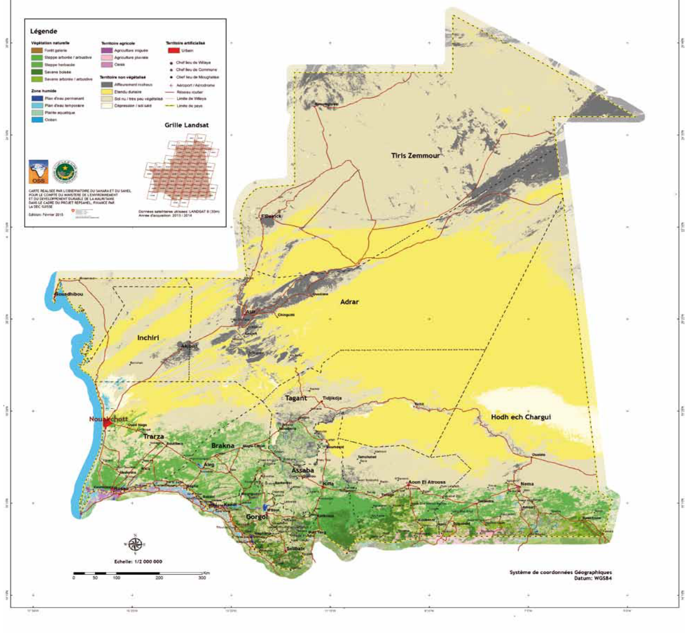
Source OSS, 2018 Atlas des cartes d’occupation des sols
|
Indicateur |
Profil |
|
Superficie / longueur de côtes |
1 030 000 km² / 720 kilomètres de littoral (ANSADE) |
|
Climat |
Sud : climat sahélien, chaud et semi-aride. Nord : climat Saharien, chaud et aride à hyper aride (ONM) |
|
Population |
4,9 million habitants(2024) (ANSADE), taux de croissance de population de 3,1% |
|
Population urbaine |
54% en 2024 contre 52,8 % en 2020 |
|
PIB |
10.0 Mds USD en 2024 (ANSADE), taux de croissance du PIB de 4,1% (2024, ANSADE) |
|
PIB par habitant |
2083,3 USD |
|
Croissance du PIB |
3,4% en 2020, 3,5% en 2021 et 5,25 en 2024 (estimée) (ANSADE) |
|
Part de l’agriculture (y compris l'élevage) dans le PIB |
17% (MAEPSP) |
|
Émissions en 2022 (année de référence) |
11 952,5 Gg éq-CO2 (RNI, soumis en 2025) |
|
Émissions en 2025 |
13 957,9 Gg Eq-CO2 (BTR, 2025) en cours de validation |
|
Émissions par habitant |
2,734 tonnes Eq-CO2 par habitant en 2022 (RNI 2025) BAU : 3,913 tonnes Eq-CO2 en 2025 3,241 tonnes Eq-CO2 en 2030 4,617 tonnes Eq-CO2 en 2035 |
|
Accès à l’électricité |
48 % des ménages (WB) |
|
Mix électrique actuel |
En 2015 hors opérateurs miniers : 13,80 % hydro, 17,40% ER et 68,80% thermique En 2020 hors opérateurs miniers :16.73 % hydro, 17.67% ER et 65,6 % thermique (DEME). |
La population mauritanienne est d'environ 5 millions d'habitants (2024), avec une densité de 5 habitants par kilomètre carré, De plus, plus de la moitié des Mauritaniens (61,3 %) vivent en milieu urbain (2024)
Les principaux indicateurs socio-économiques de la Mauritanie (BM, 2024) se présentent ainsi
Les principales activités économique du pays sont :la pêche, l’agriculture et l’élevage et les extractions minières
Activité de la Pêche. La Mauritanie est une des régions les plus poissonneuses du monde grâce à un écosystème littoral exceptionnel : l'existence de hauts-fonds et de vasières permet la prolifération d'herbiers (zostères) qui, alliée à la confluence de courants par remontées d'eau des profondeurs (« upwellings »), favorise la reproduction des espèces marines.
L'agriculture et l'élevage. Les secteurs de l’agriculture et de l’élevage fournissent un moyen de subsistance à 62 % de la population mauritanienne, ainsi que des emplois à 21 % de la population active.
La Mauritanie dispose de potentialités agricoles relativement importantes : estimées à environ 500 000 ha des terres cultivables (soit environ 0,2 ha/habitant) et un cheptel de 20 millions de têtes dont 16 millions de petits ruminants.
Industrie minière. L’année 2023, l’exploitation du minerai en Mauritanie a été marquée par des records de production pour les minerais de fer, d’or et de cuivre. En effet, la SNIM (Société nationale industrielle et minière) a atteint un niveau historique de 14,01 millions de tonne. La Société TASIAZT (KINROS) a enregistré une production record de 620.8 million d’once, et la production du cuivre par MCM a été de 13,01 millions tonnes. Aussi, la contribution du secteur extractif à l’économie nationale en 2023 : 76,28 % des recettes d’exportation, 22,73 % des recettes budgétaires, 18, 91 du PIB, 5,83 % d’emploi de la population active (emploi direct et indirect). La Mauritanie est devenue producteur du Gaz en 2025 grâce aux champ GTA exploitée par BP au large entre le Senegal et la Mauritanie. Les principaux projets miniers en développement : (i) projet TIRIS : production de l’uranium prévue en 2026 (ii) projet Bofal (Phosphate) (iii) Projet Takamoul (Fer) (iv) Projet d’El Ouej (Fer).
Les températures moyennes annuelles se situent entre 26°C et 32°C, et partout à l'exception du littoral atlantique, la température maximale moyenne du mois le plus chaud dépasse nettement 40 °C. Les précipitations moyennes annuelles varient dans les stations synoptiques de référence du pays entre 37 mm à Bir Moghrein à l’extrême nord de Tiris-Zemour et 94 mm à Tidjikja au Tagant ; et entre 94 mm au centre du pays au Tagant et 530 mm à Selibaby au Guidimagha à l’extrême sud du pays. Par endroit, à l'extrême nord et nord-est, elles deviennent quasiment nulles.
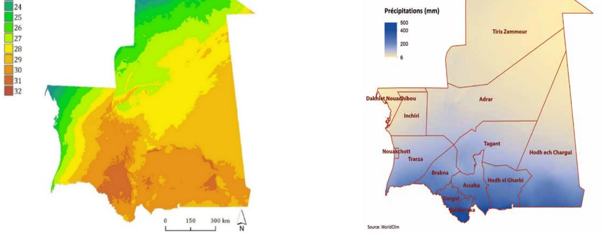
A long terme (horizon 2100), le scénario tendanciel, SSP2, la pluie connaitre une augmentation de 6,3% ; le scénario SSP 3 situe cette augmentation à 16,5%.
Au niveau des températures, le scénario SSP2, projette une augmentation à l’horizon 2100 de 2,9°C ; cette augmentation est de 4,3 °C pour le scénario SSP3.
|
Variation de la précipitation (mm) |
Variation de la température (°C) |
|||
|
Période |
Selon le scénario SSP2-4.5 |
Selon le scénario SSP3-7.0 |
Selon le scénario SSP2-4.5 |
Selon le scénario SSP3-7.0 |
|
Court Terme (2021-2040) |
14.7 |
11.1 |
1.3 |
1.2 |
|
Moyen Terme (2041-2060) |
9.6 |
10.4 |
1.9 |
2.1 |
|
Long Terme (2081-2100) |
6.3 |
16.5 |
2.9 |
4.3 |
Le nombre de jours où la température dépasse 40 °C se situe entre 43 et 63 jours respectivement pour les scénarios SSP2 et SSP3
L’élévation du niveau de la mer est estimée, à l’horizon 2100 à 0,5 m pour le scénario SSP et 0,6 pour SSP 3
L’évapotranspiration potentielle augmenterait de 2,3 % en 2030, de 3,6 % en 2050 et de 6,2 % en 2080 par rapport aux niveaux de 2000
Bien que le processus d’élaboration de la CDN et de son plan d’action global de mise en œuvre ait été suffisamment participatifs et inclusifs, leur prise en compte dans les cadres de politiques sectorielles mérite une attention particulière.
La préparation du plan d’action global de mise en œuvre de la CDN, 2.0 ont été initiés tardivement ce qui a sûrement entravé son exécution globale. Les performances de mise en œuvre des programmes sectoriels de la CDN 2.0 diffèrent suivant l’accès des ministères concernés aux financements.
Aussi, le manque d’un système de suivi évaluation et de MNV n’ont pas facilité le monitoring des interventions au sein des structures sectorielles impliquées dans le processus CDN.
Malgré les contraintes signalées ci-dessus, il a été recensé la mise en œuvre dans le cadre de la CDN 2.0 de 104 mesures d’inégales importance, dont la répartition par secteur et par type d’intervention est mise dans le tableau ci-dessous :
|
Secteur |
Adaptation |
Renforcement de capacité |
Transfert de technologie |
Recherche |
Cadre institutionnel et reglementaire |
Totaux |
|
Écosystèmes et de la biodiversité |
16 |
3 |
2 |
0 |
9 |
30 |
|
Agriculture et de la souveraineté alimentaire |
22 |
6 |
28 |
|||
|
Pêche |
3 |
1 |
1 |
5 |
||
|
Hydraulique et assainissement |
14 |
3 |
17 |
|||
|
Santé |
5 |
5 |
||||
|
Élevage |
3 |
2 |
1 |
6 |
||
|
Habitat, urbanisme et aménagement du territoire |
1 |
2 |
1 |
4 |
||
|
Éducation |
1 |
7 |
1 |
9 |
||
|
TOTAUX |
65 |
14 |
2 |
7 |
16 |
104 |
La nature de ces mesures et les chiffres disponibles se rapportant aux réalisations d’une part et les financements mobilisés sont consignés dans le tableau en annexe 4.
L’analyse de la mise en œuvre de la CDN 2.0 permet de dégager plusieurs enseignements essentiels pour orienter l’actualisation de la CDN3.0 :
1. Renforcement des instances de coordination et des capacités institutionnelles
2. Mise en place d’un mécanisme opérationnel de suivi-évaluation
3. Inventaires des ressources naturelles et suivi environnemental
4. Renforcement des capacités, transfert de technologie et sensibilisation
En résumé, ces leçons soulignent la nécessité d’une gouvernance renforcée, de systèmes de suivi efficaces, de données environnementales fiables et de capacités accrues pour tous les acteurs, afin de garantir que la CDN3.0 repose sur des bases solides, opérationnelles et orientées vers des résultats concrets.
En 2022, les émissions nettes de gaz à effet de serre « GES » de la Mauritanie sont estimées à 11932,07 Gg Eq-CO2 (à base de dioxyde de carbone « CO2 », de méthane «CH4 », d'oxyde nitreux « N2O », et des hydrocarbures-perfluorés « HFC »), soit 2,729 tonnes Eq-CO2 par habitant (NIR/BTR 2025).
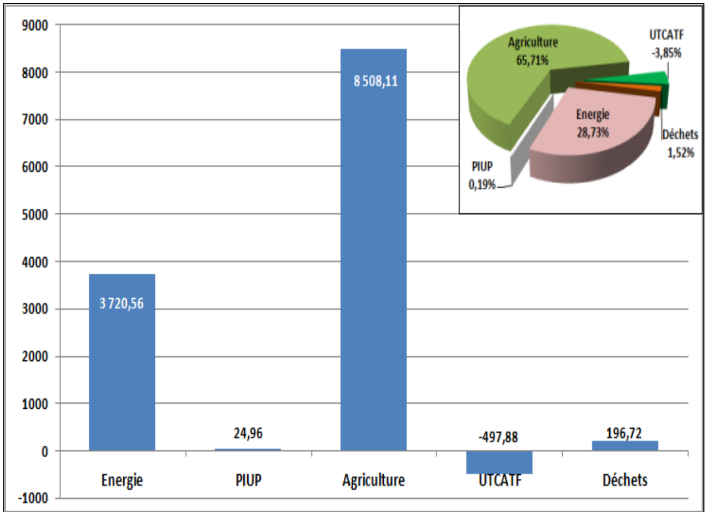
Malgré le développement des émissions des autres secteurs, le secteur de l’agriculture reste dominant avec 8508,11 Gg-Eq-CO2 soit 65,97%, suivi de celui de l’énergie qui produit 3720,56 Gg-Eq-CO2 soit 28,73%. Les deux secteurs totalisent 94,44 % des émissions des GES directs. Le secteur UTCATF totalise une séquestration de 497,88 Gg de CO2 soit -3,85%. Quant aux secteurs procédés industriels et utilisation des produits « PIUP » (environ 0,19%) et déchets (environ 1,52%), ils se présentent comme des secteurs marginaux.
La CDN3.0 de la Mauritanie prévoit une réduction nette des émissions de GES à l’échelle de l’économie de 8,1% en 2035 (courbe grise) par rapport au scénario de référence (BAU, courbe bleue) avec les moyens propres du pays soutenu par un appui international comparable à celui reçu jusqu’à 2025.
Le coût total des efforts d’atténuation de la Mauritanie est évalué à 12103,62 MUSD dont 13% (1529,42 MUSD) inconditionnel et 87% (10574,19 MUSD) conditionnel à la mobilisation de ressources externes.
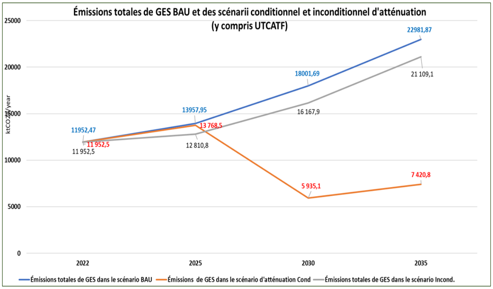
Pour l’actualisation de la CDN2.0, les résultats du bilan du premier quinquennat de la mise en œuvre de la SCAPP (2015-2030), ont conduit vers un changement des priorités. Dans ce cadre, le secteur AFAT comme première source des émissions dans le pays était classé comme prioritaire dans l’ambition du pays avec une surestimation de son potentiel. Le bilan quinquennal de la SCAPP, a mis en exergue cette faiblesse. Le secteur de l’énergie qui était considéré comme second porteur de l’ambition d’atténuation du pays a connu un boom et son potentiel en particulier en énergie renouvelable couvre l’engagement national dans l’ambition du pays voir plus. Avec la nouvelle vision et en concordance avec les stratégies sectorielles, la Mauritanie compte sur la valorisation de ses potentialités et de ses ressources propres tout en s’alignant et respectant les objectifs de développement durable des Nations unies (ODD).
Cette vision porte un changement de base dans l’objectif de réduction des émissions qui était de 22,3% dans la CDN initiale vers une neutralité carbone d’ici 2030 dont 11% est inconditionnel. Exprimée en chiffre, l’ambition inconditionnelle d’atténuation est composée de 33 mesures d’atténuation couvrant les 5 secteurs d’émissions avec une capacité de 1834,27 Gg CO2eq. Étant parmi les pays les moins avancés, cet engagement est suffisamment juste et ambitieux et réalisable dans les conditions d’appui de 2020 en toute harmonie avec les stratégies nationales de développement. Cette réduction pourra atteindre la neutralité carbone avec un soutien international plus important, permettant la mise en valeur d’une partie de l’énorme potentiel en énergie renouvelable du pays. Cette réduction conditionnelle était de 16008,045 Gg CO2eq soit 92,49% en 2030 comparé au scénario (BAU). L’actualisation de l’inventaire des GES dans le BTR1 a permis de revoir l’objectif de l’évaluation de la CDN 2.0 qui qui prévoyait la neutralité carbone ou presque en 2030. Avec la correction des émissions directes et indirecte du N2O, cet objectif est passé à 75,8% en 2035.
Notons que la part de CO2 séquestré annuellement par les écosystèmes marins du Parc National du Banc d’Arguin (PNBA) atteint 732,06 Gg CO2eq 2 correspondant à 11 % des émissions de GES du pays dans la CDN1.0. A la lumière des nouveaux résultats obtenus notamment en termes de superficie des herbiers, ces pourcentages sont à réviser substantiellement à la hausse.
Avec l’élargissement de l’horizon temporel de la stratégie nationale pour 2050, cette vision a porté un grand changement dans l’ambition d’atteindre la neutralité carbone malgré la grande capacité d’atténuation apportée par les mesures applicables.
Dans ce cadre, les données démographiques apportées par le dernier recensement de 2024 de l’ANSADE chiffrent la population à 4,9 millions d’habitants pour un taux de croissance de 3,1% ce qui favorise un taux de croissance socio-économique apporté par un PIB équivalent de 10 milliards USD en 2024;—taux de croissance PIB de 4,1%. Cette situation apportera plus de croissance comme plus de réduction des émissions.
Dans sa CDN3.0, la République Islamique de la Mauritanie vise atteindre des objectifs une réduction globale de 13900,4 Gg CO2eq en 2030. Cet objectif pour 2035 atteint 17433,9 Gg CO2eq. Cette ambition reste de l’ordre de 8,1 % non conditionnelle.
Le nouvel objectif économique absolu du pays est de réduire ses émissions de gaz à effet de serre (GES) de 10% soit 1 833,8 Gg CO2eq en 2030 par rapport au BAU assurant une émission de 16167,9 Gg CO2eq (ligne grise “figure 4”), avec les moyens propres du pays appuyé par un soutien international largement comparable à celui reçu jusqu’à 2025. Cette situation restera dans l’ordre de 1872,7 Gg CO2 eq en 2035 donnant comme bilan d’émission 21109,1 Gg CO2eq. Avec un soutien plus conséquent, le pays pourrait aller jusqu’à une réduction des émissions nette de l’ordre de 67,23% soit 12066,6 Gg CO2eq en 2030 par rapport au BAU, portant le bilan des émissions GES à 5935,1 Gg CO2eq (ligne orange “figure 4”). Cette situation évoluera lentement pour atteindre 7420,8 Gg CO2eq en 2035 (67,71%) par rapport au BAU.
Dans cette évolution le scénario inconditionnel restera prioritairement dominé par les émissions du secteur de l’Agriculture qui sera de l’ordre de 11421,99 Gg CO2eq en 2030 et de 13722,09 Gg CO2eq en 2035 soit respectivement 68,14% et 64,19% “figure 5”.
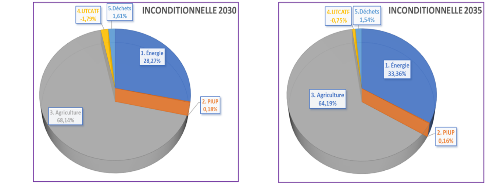
La seconde source de cette émission restera le secteur de l’énergie qui passera de 28,27% en 2030 à 33,36% en 2035.
Dans le scénario conditionnel, l’émission sera largement dominée par le secteur de l’agriculture avec 11 426,98 Gg CO2eq en 2030 et 13 756,02 Gg CO2eq en 2035 soit respectivement 67,31% et 68,29%. Le secteur de l’énergie passera avec le programme Hydrogène vert, en cours de développement, à l’évitement de l’émission couvrant ainsi une capacité de -4 983,55 Gg CO2eq en 2030 et -6 020,41 Gg CO2eq en 2035 ou -29,37% et -29,96% respectivement (voir Figure 6).
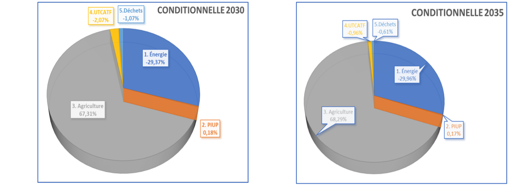
Quant aux secteur de l’UTCATF, il passe de séquestration en 2030 avec -351,8 Gg CO2eq (-2,07%) à -193,86 Gg CO2eq (-0,96%) en 2035. La participation des secteurs de PIUP et des déchets reste trop limitée même si le secteur des déchets pourra enregistré avec l’incinération énergétique un évitement.
La CDN3.0 comprend 63 mesures d’atténuation, dont 39 actions inconditionnelles et 24 actions conditionnelles.
Le secteur de l’énergie y compris le transport domine l’ambition d’atténuation du pays avec 71,21%, pour donner suite à la volonté du pays à recourir à la coopération volontaire au titre de l'article 6 de l'Accord de Paris pour atteindre une partie de son objectif.
|
Secteur |
Inconditionnel |
Capacité de réduction |
Conditionnel |
Capacité de réduction |
Total |
Capacité de réduction |
|
Energie |
28 |
1815,69 |
16 |
14985,30 |
44 |
16800,99 |
|
Industrie (PIUP) |
0 |
0,00 |
0 |
0,00 |
0 |
0,00 |
|
Déchets |
32. |
10,87 |
2 |
44,80 |
5 |
55,67 |
|
Agriculture |
5 |
44,00 |
3 |
77,00 |
8 |
121,00 |
|
UTCATF |
3 |
2,18 |
3 |
454,01 |
6 |
456,19 |
|
TOTAL |
39 |
1872,75 |
24 |
15561,11 |
63 |
17433,85 |
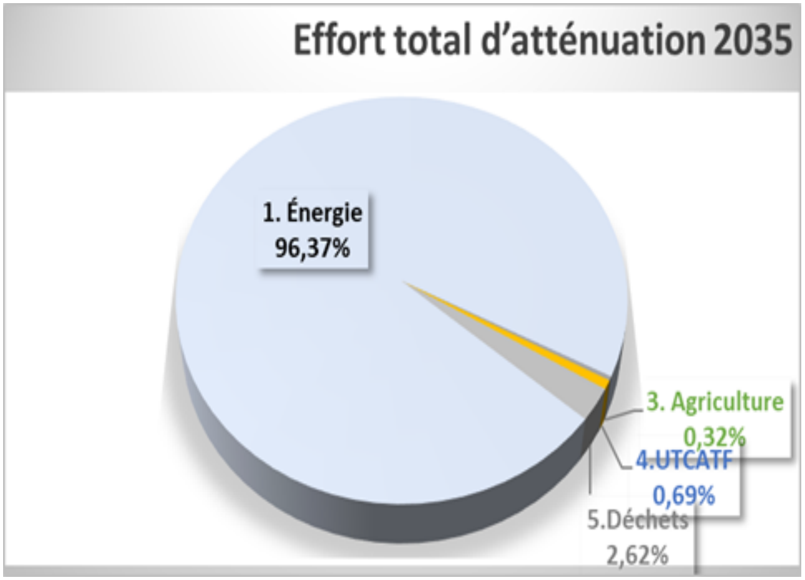
Le secteur de l’énergie est la seconde source d’émission de GES avec +28,73% de l’émission globale en 2022. Cette situation restera presque dominante le long des scenarii d’émissions. Dans ce cadre, le scénario BAU présente un bilan d’émission passant de 3 720,56 Gg eq CO2 en 2022 « année de référence» vers 4616,59 Gg eq CO2 en 2025 «année de référence» soit une augmentation de 24,08%. Cette croissance suivra un rythme plus accéléré entre 2025 et 2035 suivant les données socio-économiques actualisées.
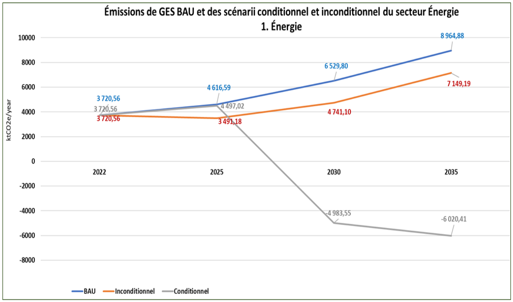
Le secteur de l’énergie constitue la principale source d’évitement des émissions GES dans les deux scénarios conditionnel et inconditionnel du pays suite aux besoins de développement du pays et au niveau de vulnérabilité très élevé. Dans ce cadre, l’émission du secteur dans le scénario inconditionnel passera de 3720,56 Gg eq CO2 en 2025 à 4741,1 Gg eq CO2 en 2035 soit une baisse de 1815,7 Gg eq CO2 (4,47% de l’émission du BAU). Cette réduction est partagée en 30 mesures dont la dominance restera pour l’industrie énergétique qui participe avec 1027,2 Gg eq CO2 (soit 56,57% du BAU), suivi du secteur résidentiel avec 594,4 Gg eq CO2 soit 2,59% de l’émission du BAU. Pour réduire les émissions de gaz à effet de serre dans l’objectif d’arriver à la neutralité carbone à l’horizon 2050, le secteur minier est fortement lié à ses objectifs, notamment via (i) l’augmentation de la part des énergies propres ( solaire ou hybride) dédiée pour les besoin des sites miniers (40% d’ici 2030) (ii) La transition vers l’acier vert et l’hydrogène vert (iii) la publication des émissions GES par site (iv) la stratégie du contenu local des industries extractives (2022-2030) ainsi que le renforcement des capacités dans les infrastructures géologiques (minéraux stratégiques).
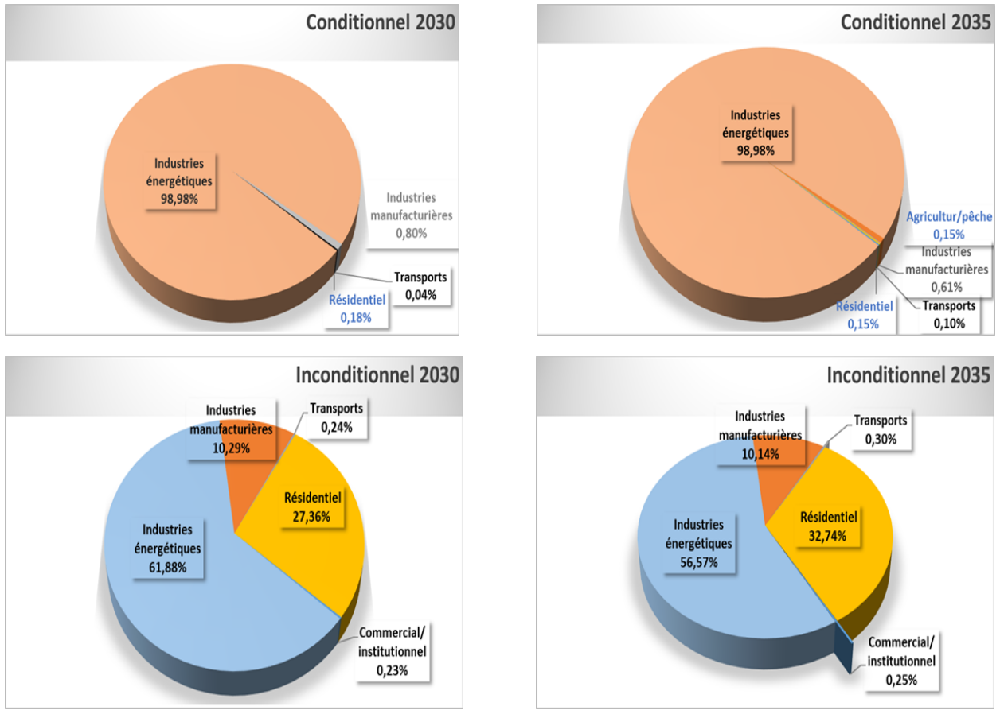
Dans le volet conditionnel du secteur de l’énergie, la dominance du potentiel d’atténuation sera pour l’industrie énergétique avec plus de 98,9% (11395,99 Gg eq CO2) en 2030 et 14832,98 Gg eq CO2 soit 98,98% du potentiel du secteur. Malgré la faible participation des autres catégories du secteur (moins de 1%) on note leurs importances pour le développement du pays, la figure 10 présente les autres catégories du secteur.
|
Catégorie |
Inconditionnel |
Conditionnel |
||||
|
2030 |
2035 |
2050 |
2030 |
2035 |
2050 |
|
|
1.A.1. Industries énergétiques |
1106,84 |
1027,16 |
1887,27 |
11395,99 |
14832,98 |
32987,44 |
|
1.A.2. Industries manufacturières et construction |
184,11 |
184,11 |
887,01 |
92,05 |
92,05 |
443,50 |
|
1.A.3. Transports |
4,34 |
5,39 |
7,75 |
5,03 |
14,77 |
21,22 |
|
1.A.4.b. Résidentiel |
489,33 |
594,43 |
813,43 |
20,28 |
22,95 |
28,29 |
|
1.A.4.a. Commercial/institutionnel |
4,08 |
4,60 |
6,37 |
0,00 |
0,00 |
0,00 |
|
1.A.4.c. Agriculture/sylviculture/pêche |
0,00 |
0,00 |
0,00 |
0,00 |
22,55 |
56,37 |
|
Potentiel d’atténuation total |
1788,70 |
1815,69 |
3601,83 |
11513,35 |
14985,30 |
33536,82 |
Le secteur de l’agriculture est la première source d’émission de GES dans le pays avec +60% de l’émission globale en 2022. Cette situation restera presque dominante le long des scenarii d’émissions. Dans ce cadre, le scénario BAU passera de 8508,1Gg eq CO2 en 2022 « année de base » vers 9505,1 Gg eq CO2 en 2025 soit une augmentation de 11,72% . Cette croissance sera plus accélérée entre 2025 et 2030 suivant les données socio-économiques actualisées ou elle passera à 11436,89 Gg eq CO2 en 2030 soit 20,3 %. Cette croissance suivra le même rythme sur le long de la série pour atteindre 13766,90 Gg eq CO2 en 2035.
Le secteur de l’agriculture enregistrera une faible réduction des émissions GES dans son scénario inconditionnel suite aux faibles capacités du pays et au niveau de vulnérabilité très élevé. Dans ce cadre, l’émission du secteur passera de 9502,8 Gg eq CO2 en 2025 à 11427 Gg eq CO2 en 2030 soit une baisse de 0,09% de l’émission du BAU. Cette réduction est partagée en 3 mesures dont la prioritaire est l’amélioration génétique de la race bovine avec 54,73% suivie de l’amélioration de l’alimentation animale avec 40,0% et en dernière position les cultures sans labour.
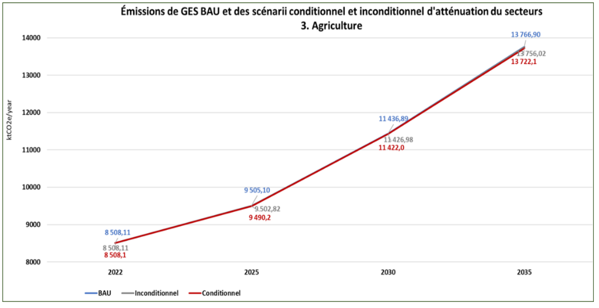
En 2035, le secteur de l’agriculture passera à 13756,02 Gg eq CO2 dans son scénario inconditionnel enregistrant ainsi une baisse de 10,87 Gg eq CO2 soit 0,18% du BAU. Cette réduction se limite à 4 mesures (principalement tirées de l’adaptation) dont la dominante est le reboisement avec sylvo-pastoral qui représente 40,28%, suivi de l’amélioration de race bovine 34,6 %, l’amélioration de l’alimentation du bétail 21,82% alors que les cultures sans labour ne représentent que 3,3% (voir Figure 11).
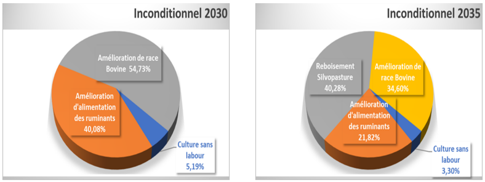
Dans le scénario conditionnel, le secteur de l’agriculture passera de 9490,20 en 2025 à 11421,99 Gg eq CO2 en 2030 soit une baisse de 0,13% du BAU ou 14,9 Gg eq CO2, cette faible émission dépend du niveau de soutien et d’ambition national en matière de développement du secteur. Ce scénario ne compte que 2 mesures portant sur le reboisement avec sylvo-pastoral et couverture de cultures avec respectivement 57,53% et 42,47%.
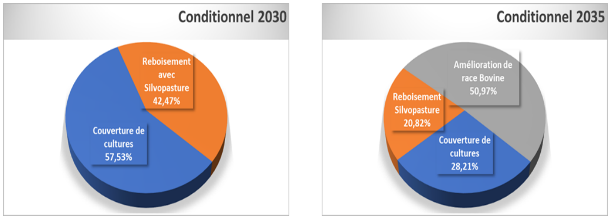
En 2035, le secteur de l’agriculture dans son scénario conditionnel passera à 13722,1 Gg eq CO2 soit une baisse de 44,8 Gg eq CO2 ce qui représente 0,33% de l’émission de la catégorie comparée au BAU. La réalisation de ce niveau d’ambition reste conditionnelle au financement particulièrement de la catégorie amélioration de race qui représente 50,97% de cette capacité de réduction. Les 2 autres mesures restent d’apport limité avec respectivement 28,21% pour la couverture de culture et 20,82% pour le reboisement avec sylvo-pastoral.
Le scénario BAU du secteur UTCATF passera de la séquestration dans l’inventaire de l’année de base (2022) avec -497,9 Gg eq CO2 à une émission de 137,8 Gg eq CO2 en 2050.
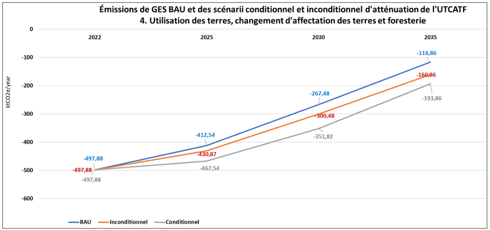
Le secteur UTCATF comprend 3 mesures d’atténuation aussi bien dans le volet conditionnel que dans le volet inconditionnel.
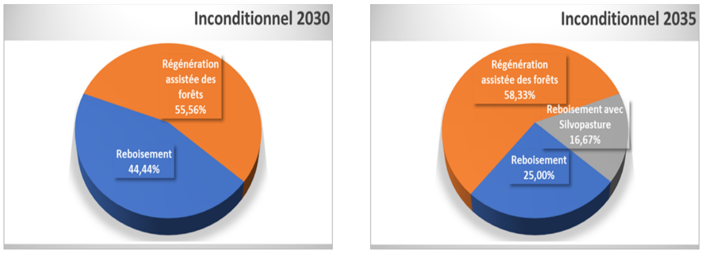
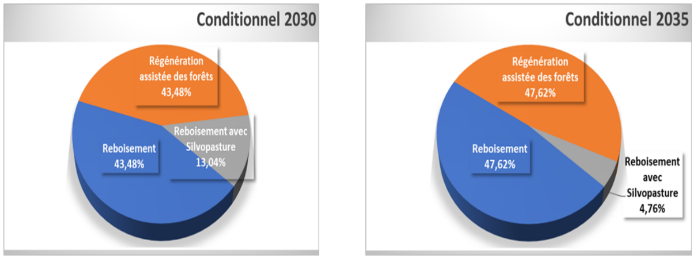
Malgré sa faible participation dans le bilan des émissions GES, le secteur des déchets pose un véritable problème en Mauritanie. Les déchets solides, municipaux, industriels et commerciaux ont une particularité d’avoir une faible teneur en humidité (-10%). Cette situation ne permet pas la décomposition des déchets ce qui les rend fossilisantes dans sa majorité, autrement dit très encombrantes. Quant aux déchets liquides, le pays ne compte pas de système d’assainissement collectif de taille. Les deux comptant ce genre d’assainissement sont Nouakchott (3% de la ville) et Nouadhibou (8% de la ville).
Cette situation a orienté la concertation avec les parties prenantes vers l’incinération comme solution stratégique pour les grandes villes du pays qui ont une production journalière de plus de 100 tonnes de déchets solides. Pour cela, la région de Nouakchott a opté comme priorité l’incinération à des fins énergétiques comme mesure conditionnelle. Cette mesure aura une capacité de réduction des émissions de 454 Gg eq Co2 en plus d’une faible capacité d’atténuation inconditionnelle de 2,2 Gg eq Co2.
Dans le scénario conditionnel, et pour l’horizon 2030, 3 mesures sont proposées avec un potentiel de passage vers l’évitement. Cette situation prévoit une capacité de réduction d’émission totale de 454,01 Gg eq Co2 soit un bilan de -181,6 Gg eq Co2 en 2030.
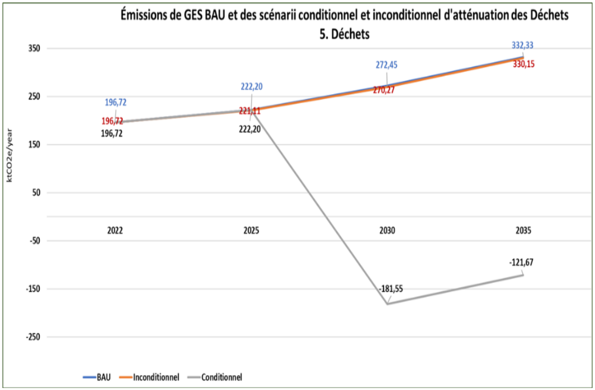
Cette évolution sera plus raide entre 2030 et 2035 s’il n’est pas accompagné d’une participation active des partenaires locaux. Le scénario conditionnel prévoit la répartition de ce potentiel de réduction avec une dominance de l’incinération de 92,36% en 2030/2035.
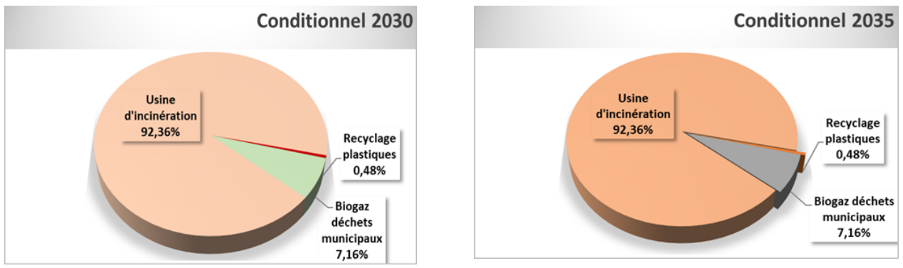
Pour réaliser cette analyse, la concertation avec les parties prenantes a conduit à un consensus unanime basé sur le faible niveau de mobilisation des ressources dans la CDN2.0, dans ce cadre les points focaux sectoriels ont décidé ensemble de ne prendre en compte les mesures inconditionnelles d’atténuation qu’à partir de 2020, et les mesures conditionnelles portant des projets de grande envergure que proportionnellement à partir de 2030.
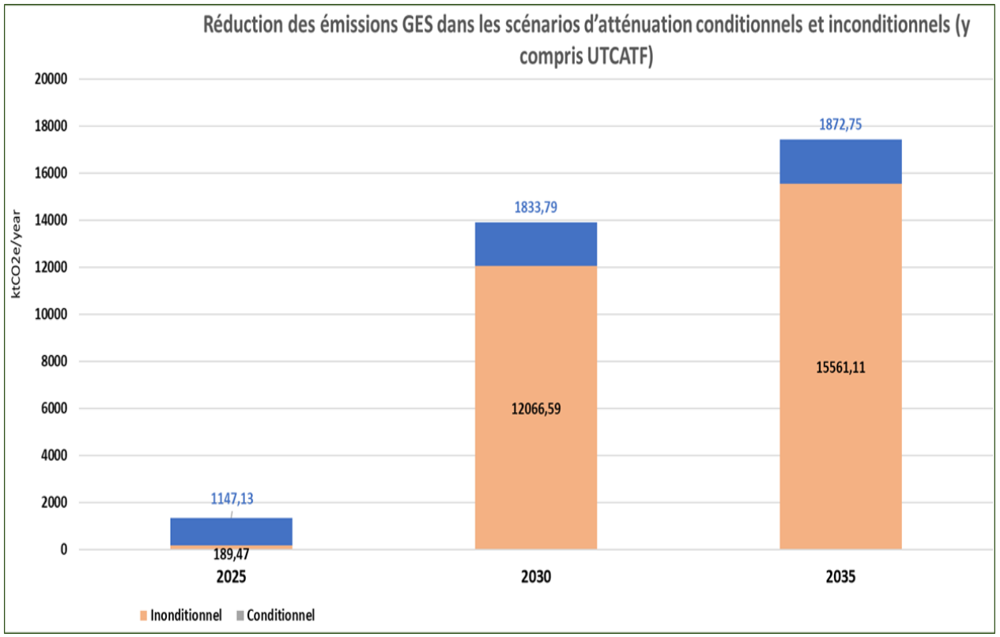
La répartition du potentiel d’atténuation ne change pas grandement avec le cumul de cette ambition pour la période 2025-2030. Dans ce cadre, le scénario BAU prévoit une croissance presque régulière avec un taux d’émission par personne allant de 2,73 T/eq Co2/h en 2022 à 3,24 T/eq Co2/h en 2030. La Mauritanie propose une stratégie assurant un cumul de capacité de réduction d’émission de 13936,09 Gg eq Co2 en 2030. Ce cumul ne peut être atteint qu’avec des taux d’émission per capita de l’ordre de 2,152 T/eq Co2/h comme inconditionnel et de 1,062 T/eq Co2/h comme conditionnel en 2030.
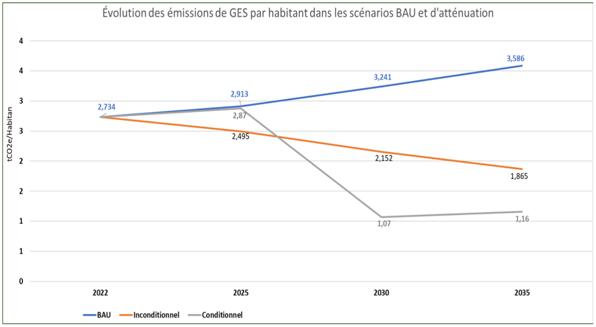
L’évolution des taux de croissance dans le scénario inconditionnel entre 2030 et 2035 sera presque régulière et conduira à une baisse passant à 1,865 T/eq Co2/h en 2035 tandis que celle des taux conditionnel de croissance par habitant conduira à une évolution plus raide entre 2030 et 2050 passant de 1,07 T/eq Co2/h en 2030 à 1,16 T/eq Co2/h en 2035 pour atteindre 0,6141,07 T/eq Co2/h en 2050.
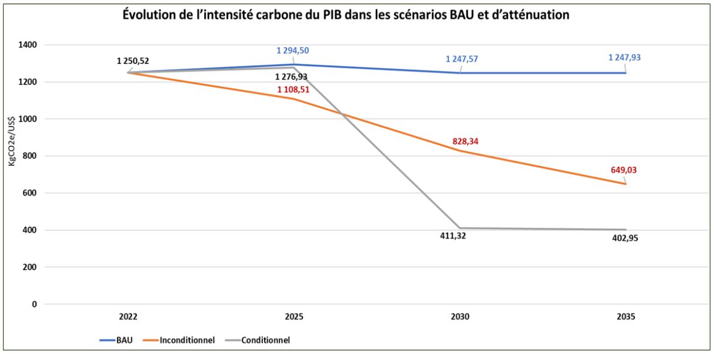
Pour plus de données (voir Annexe 2 bis: Résultats de l’analyse de l’atténuation des émissions de GES)
La population, les écosystèmes, comme les territoires mauritaniens sont impactés par les changements climatiques. Les impacts des changements climatiques affectent en particulier des secteurs vitaux de l’économie nationale comme les ressources en eau, les productions agricoles et l’élevage, l’économie du littoral, les écosystèmes naturels, la santé et les conditions de vie de la population.
Les principaux phénomènes climatiques qui affectent les écosystèmes mauritaniens, sont l’élévation de température, la sécheresse, les tempêtes de sable, les inondations, l’élévation du niveau de la mer et les vents violents.
Nous résumons ci-dessous, les vulnérabilités de ces différents territoires et secteurs.
La zone saharienne est la région la plus sèche et qui couvre la plus grande partie du pays.
Sa vulnérabilité actuelle serait amplifiée par les changements climatiques qui l’exposent aux problèmes de l’érosion éolienne et au déplacement des sables et quelque fois à des inondations dues à des torrents qui peuvent avoir lieu au niveau des lits des oueds lors de phénomènes pluviométriques extrêmes.
La zone sahélienne constitue la transition entre la zone aride et la zone du fleuve Sénégal. Elle est plus riche en ressources biologiques que la zone aride.
Les impacts des changements climatiques sur la zone sahélienne se traduisent par une importante dégradation des terres et de l’érosion. Les principaux défis à relever dans cette zone sont :
Les lacs et marais de la Mauritanie, notamment ceux proches des zones côtières et des estuaires, sont vulnérables aux changements des régimes de précipitations et à l'élévation du niveau de la mer, qui entraînent des inondations ou des périodes de sécheresse.
Les marais et lacs subissent une perte de biodiversité, notamment pour les espèces aquatiques et les oiseaux migrateurs qui dépendent de ces écosystèmes.
Les communautés utilisant ces zones pour la pêche, l’agriculture et la collecte de produits forestiers non ligneux subissent les conséquences des pertes de ressources et doivent s’adapter à la réduction de la quantité et de la qualité des eaux et de la disponibilité des habitats.
Le désert mauritanien est caractérisé par des températures extrêmes et une faible pluviométrie. Le réchauffement climatique exacerbe ces conditions, augmentant la fréquence et l'intensité des vagues de chaleur et des périodes de sécheresse prolongées et des dégradations de l'environnement, entraînant la désertification des terres. L'augmentation de la fréquence des tempêtes de sable et des vents violents pourrait accélérer l’érosion et la perte de sol fertile.
Les communautés nomades et pastorales qui dépendent de la végétation et des points d'eau pour le bétail et les cultures subissent de graves impacts, notamment des pertes de bétail, une baisse de la productivité agricole et des migrations forcées
La vallée du fleuve Sénégal présente un climat sahélien avec la particularité d’abriter le seul cours d’eau permanent du pays : le fleuve Sénégal et ses affluents. Elle présente un potentiel agricole grâce à la disponibilité de l’eau et les sols fertiles de Chemama.
Cette zone est très vulnérable compte tenue de l’impact des changements climatiques et notamment de l’élévation de la température sur les cultures et l’alimentation
Les principaux défis sont :
Le fleuve Sénégal, source principale d'eau pour une grande partie du pays, est particulièrement vulnérable aux changements des régimes de précipitations. Les sécheresses prolongées ou les crues peuvent affecter le débit du fleuve.
Les écosystèmes fluviaux et les espèces qui en dépendent (poissons, oiseaux) sont menacés par des changements dans la qualité et la quantité d'eau.
Les agriculteurs qui dépendent de l’irrigation du fleuve Sénégal pour leurs cultures font face à des pénuries d'eau, à la salinisation des terres et à une diminution des rendements agricoles. Les communautés utilisant ces zones pour la pêche, l’agriculture et la collecte de produits forestiers non ligneux subissent des pertes de ressources et doivent s’adapter à la réduction de la qualité des eaux et de la disponibilité des habitats.
Selon l’indice d’exposition, les aléas les plus importants sont : l’augmentation de la température, la sécheresse, la variabilité de la pluviométrie, l’élévation du niveau de la mer et la variation du régime des vents
Les forêts sahéliennes de la Mauritanie, subissent l’intensification de la sécheresse, ce qui compromet leur régénération. La déforestation et les sécheresses prolongées nuisent aux espèces végétales et animales de ces écosystèmes. Certaines espèces d’arbres et d'animaux peuvent disparaître en raison des conditions climatiques extrêmes.
Les communautés rurales qui dépendent de la récolte du bois, du fourrage pour le bétail et des produits forestiers non ligneux voient leur mode de vie perturbé par la réduction de la couverture forestière, la dégradation des sols et la perte de ressources
Les écosystèmes côtiers sont particulièrement sensibles aux pollutions, aux changements climatiques et à l'exploitation non durable des ressources. L'augmentation des activités de pêche et d'exploration pétrolière accentue ces menaces.
Les zones côtières de la Mauritanie, notamment autour du Parc National du Banc d'Arguin, sont vulnérables à l'élévation du niveau de la mer, entraînant l'érosion des côtes, la salinisation des terres agricoles et des habitats naturels.
Les tempêtes et les vagues de chaleur océaniques modifient les conditions des écosystèmes marins. La montée en température des eaux marines affecte la biodiversité marine, notamment les herbiers marins, les bancs de poissons, et les écosystèmes sensibles comme les mangroves. L’acidification des eaux menace les coquillages, les coraux et les organismes marins. Les récifs coralliens, les mangroves et les herbiers marins, essentiels pour la biodiversité et la pêche, sont vulnérables à la montée en température des océans risquent de disparaître.
Les communautés dépendantes de la pêche subissent des baisses de stocks de poissons, une dégradation des infrastructures côtières (ports, habitations) et la perte de terres agricoles due à la salinisation. Ces impacts peuvent mener à des pertes économiques importantes.
Les estuaires et zones humides, déjà sensibles aux variations du niveau de l’eau, sont particulièrement vulnérables à l'élévation du niveau de la mer et à l’intrusion d'eau salée. Les changements dans les régimes des précipitations et l’évaporation accrue affectent les débits des rivières, ce qui modifie les niveaux d’eau dans les estuaires.
Le changement des conditions de salinité et de température impacte la reproduction de nombreuses espèces aquatiques, y compris des poissons migrateurs et des oiseaux.
Les zones humides et estuaires, qui abritent une faune variée (oiseaux migrateurs, poissons, etc.), subissent des pertes de biodiversité dues à l’élévation du niveau de la mer, la salinisation et la perte d’habitats.
Les populations vivant dans ces zones, notamment les pêcheurs et les agriculteurs, souffrent de la perte d'habitat et de la baisse des rendements agricoles et halieutiques. Les déplacements dus à l'inondation ou à la salinisation des terres sont également fréquents.
Les communautés dépendantes de la pêche subissent des baisses de stocks de poissons, une dégradation des infrastructures côtières (ports, habitations), et la perte de terres agricoles due à la salinisation. Ces impacts peuvent mener à des pertes économiques importantes.
Les zones humides et estuaires, qui abritent une faune variée (oiseaux migrateurs, poissons, etc.), subissent des pertes de biodiversité dues à l’élévation du niveau de la mer, la salinisation et la perte d’habitats.
Les populations vivant dans ces zones, notamment les pêcheurs et les agriculteurs, souffrent de la perte d'habitat et de la baisse des rendements agricoles et halieutiques. Les déplacements dus à l'inondation ou la salinisation des terres sont également fréquents.
Selon l’indice d’exposition aux aléas climatiques des différents biomes de la zone saharienne et du sahel se classent ainsi :
|
Zone Sud-est |
Très vulnérable |
|
Vallée du fleuve |
Très vulnérable |
|
Zone saharienne |
Très vulnérable |
|
Cordon dunaire |
Très vulnérable |
|
Mangroves |
Très vulnérable |
|
Sebkha |
Vulnérable |
|
Estran |
Peu vulnérable |
La production agricole, basée sur des pratiques familiales reste tributaire du climat, qui se caractérise par sa grande variabilité. Elle est considérée comme le secteur le plus vulnérable aux effets négatifs des changements climatiques, notamment par :
La dégradation des écosystèmes naturels actuellement prononcée sera aggravée par les changements climatiques induisant une réduction généralisée des ressources naturelles disponibles (la déforestation, la baisse de la fertilité des sols et des modifications des cycles hydrologiques).
L’impact du changement climatique sur les forêts se traduit, en plus des pressions anthropiques (défrichement, exploitation de bois énergie, pression animale, etc.), par
Les impacts sur la société et les communautés qui pratiquent l’agriculture se traduisent par
Les impacts des changements climatiques sur le secteur de l’eau, accentuée par plusieurs facteurs d’ordre socioéconomique, institutionnel, législatif et politique, sont pour l’essentiel :
Par ailleurs, l’une des conséquences des CC sur les cours d’eau (fleuve et ses bras, mares, Tamourt etc.) est la prolifération des végétaux flottants (salade d’eau, jacinthe, typha, etc.) du fait notamment de la réduction de la vitesse d’écoulement des cours d’eau, du changement de leur température, ainsi que de la détérioration de la qualité des eaux.
Dans ce cadre, il est important pour ce secteur de mettre l’accent et de :
1. Pallier le manque d’études scientifiques, améliorer la gestion de la connaissance et Continuer la politique de diversification des ressources en eaux -eaux de surface, souterraines et sources non conventionnelles (dessalement des eaux de mer et des eaux souterraines saumâtre)- informée par les données hydrauliques / hydrogéologiques, écologiques, et socio-économiques :
2. Assurer la sécurité hydrique : Améliorer l'accès à une eau potable pour tous les Mauritaniens afin de favoriser le développement socio-économique et de réduire les risques de maladies hydriques grâce à des investissements dans la construction et la gestion des infrastructures hydrauliques résilientes au changement climatique, notamment dans les domaines de la collecte, du stockage, de l'approvisionnement, de l'assainissement et de l'irrigation.
3. Intégrer les impacts du changement climatique, en particulier la variabilité climatique, dans les plans de gestion des aquifères, des eaux de surfaces (fleuve Sénégal et autres eaux de surface des bassins versants du pays), et de l’introduction progressive des solutions alternatives (dessalement).
4. Promouvoir l'inclusion des jeunes hommes et femmes dans le secteur de l’Eau et de l’Assainissement (plaidoyer auprès des jeunes et des secteurs public et privé, formations techniques, renforcement des capacités en formant les jeunes à l'utilisation des nouvelles technologies)
En Mauritanie, la plupart des risques au changement climatique se trouvent concentrés dans des sites d’implantation informelle. De nombreuses villes présentent des sites bâtis sur des terrains sensibles tels que des pentes érodées, les terres basses situées à proximité de berges d’oueds et de rivière non protégées ainsi que de rivages d’océans. Ces habitats ont en plus des structures qui ne répondent pas aux codes de la construction.
Cette tendance à la sédentarisation a abouti à une atomisation et multiplication des établissements humains. Les établissements humains situés dans des zones côtières et de terrain à faible altitude, par exemple, sont exposées à la menace de l’élévation du niveau de la mer ou du fleuve et d’inondation. Chaque site subira des impacts particuliers en fonction des changements climatiques effectivement subis (températures plus élevées ou précipitations accrues, par exemple), variables d’un lieu à l’autre.
La zone côtière Mauritanienne concentre la majeure partie de la population du pays et dispose des ressources halieutiques abondantes, des paysages diversifiés, et des sites naturels qui lui permettent d’offrir un environnement très attrayant.
Le littoral mauritanien, long de plus de 700 km, est très vulnérable aux aléas climatiques, notamment l’élévation de la température et du niveau de la mer. Les risques sur les espaces côtiers sont pour l’essentiel : la submersion des côtes basses, l’érosion côtière et la salinisation des estuaires et des aquifères côtiers.
La pêche étant un secteur vulnérable au réchauffement, aléas climatiques et à l’élévation du niveau de la mer. L’augmentation de la température est à l’origine, entre autres facteurs, des modifications de l’intensité de l’upwelling ou remonté des eaux froides responsables de la richesse biologique et trophique de nos eaux. Elle provoque souvent aussi des phénomènes de proliférations d’algues marines présentant des risques pour la santé humaine (toxicité) et la faune marine avec des conséquences économiques désastreuses.
L’élévation du niveau de la mer, elle s’est déjà manifestée par l’augmentation de la fréquence et de la force des houles et ses impacts négatifs sur les côtes (érosion côtière), les sorties en mer des pêcheurs, les accidents en mer, la végétation et les autres biotopes dans la frange littorale, et enfin, sur les infrastructures des zones inondables.
Par ailleurs, la pêche est également vulnérable à la sécheresse (fréquence et la longueur des saisons de sèches). On attribue en effet cette vulnérabilité à la dégradation de la végétation marine côtière et littorale ainsi que l’ensablement des cours d’eau douce intérieurs (y compris le Fleuve).
L’augmentation de l’évapotranspiration, conduit souvent au tarissement des mares et cours d’eau non permanents et à la baisse du volume de ceux permanents
Les impacts visibles du changement climatique sur les écosystèmes marins, littoraux et continentaux, se manifestent par :
Les impacts des changements climatiques, dus essentiellement à l’élévation des températures, au changement dans le régime des précipitations et aux phénomènes extrêmes, sur la santé humaine sont aggravés par la pauvreté, l’importance de quartiers précaires urbains et l’abondance d’habitat rudimentaire . Les vulnérabilités pour la santé présentent des spécificités selon les zones climatiques du pays (zone nord, zone côtière, zone au bord du fleuve Sénégal, et zone continentale au sud-est).
Les principaux impacts sont la propagation des maladies d’origine vectorielles (paludisme), des maladies d'origine hydrique ou alimentaire liées à des événements météorologiques extrêmes (exemples de la diarrhée et du choléra), les maladies respiratoires, la tuberculose, la malnutrition, les troubles mentaux, les maladies cardiovasculaires et les décès liés à ces problèmes de santé et l’émergence de nouvelles maladies à transmission vectorielle comme la dengue. En outre, les évènements climatiques extrêmes ont affecté les infrastructures des systèmes de santé et réduit l’accès aux soins. Les projections, selon le RCP6.0, indiquent une mortalité liée particulièrement à la chaleur passeront à environ 7 décès par an pour 100.000 habitants d’ici à 2080. Selon le RCP2.6, la mortalité associée à la chaleur passerait à 4 morts pour 100.000 personnes par an d’ici à 2080.
De manière indirecte les changements climatiques affectent la santé en Mauritanie via une incidence négative sur les déterminants socio-environnementaux de la santé (exemple : l’eau potable, l’assainissement…etc.).
La projection du secteur de la santé à l’horizon 2030 montre
Le changement climatique accentue les vulnérabilités socio-économiques existantes des populations les plus exposées en Mauritanie et influence déjà les dynamiques de mobilité humaine. Historiquement, la mobilité – qu’elle soit pastorale, liée aux catastrophes ou aux conflits, ou motivée par la recherche d’opportunités économiques – constitue une stratégie d’adaptation essentielle pour la survie des communautés. Afin qu’elle contribue pleinement aux objectifs de la Contribution Déterminée au niveau national (CDN), cette mobilité doit s’exercer dans des conditions dignes et inclusives.
La Mauritanie a choisi d’intégrer la mobilité humaine de manière transversale dans sa CDN3.0, en la considérant comme un levier pour ses ambitions climatiques et ses objectifs de lutte contre la pauvreté et de développement durable. Face aux défis majeurs – désertification, sécheresses récurrentes, inondations, érosion côtière et vagues de chaleur – l’action climatique doit inclure des mesures concrètes :
Enfin, pour combler le déficit de données sur les liens entre climat, mobilité, conflits et sécurité, l’OIM et ses partenaires nationaux s’engagent à soutenir la production de connaissances et l’intégration de ces enjeux dans les processus internationaux, notamment ceux relatifs aux pertes et dommages.
Encadré : Collecte de données par l’OIM pour la mobilité humaine et le climat Afin d’éclairer les politiques et renforcer la résilience des communautés, l’OIM met en œuvre en Mauritanie, trois outils complémentaires :
L’objectif général d’adaptation de la CDN3. est de « promouvoir une Mauritanie résiliente aux changements climatiques, ayant renforcé les capacités d’adaptation de ses écosystèmes, de sa population, de son économie, de ses territoires en vue d’assurer un développement territorial et socio-économique inclusif et durable ».
D’une manière spécifique, l’adaptation vise
Pour atteindre cet objectif, le volet adaptation de la CDN actualisée repose sur une approche, conçue comme un cadre structurant pour accompagner les acteurs mauritaniens et leurs partenaires techniques et financiers tant publics que privés.
Afin de renforcer sa résilience sous toutes ses composantes, à savoir la résilience alimentaire, hydrique, écologique, sociale, économique, territoriale, sanitaire et également, la résilience aux catastrophes naturelles, le volet adaptation de la CDN est fondé sur une approche intégrée et intersectorielle.
La mise en œuvre de la CDN actualisée s’appuie sur un plan d’actions priorisé, avec des actions verticales qui répondent aux enjeux spécifiques sectoriels et des actions transversales pour mieux appréhender les défis intersectoriels. Pour ce faire, les actions sectorielles touchent les secteurs les plus vulnérables que sont : les ressources en eau, l’agriculture, les écosystèmes, l’élevage, la pêche, le littoral et la santé, en prenant en compte quatre domaines d’interventions transversaux à savoir : le genre, l’éducation et l’emploi et la mobilité humaine.
La contribution déterminée au niveau de l’adaptation de la Mauritanie comporte quatre enjeux principaux : rendre l’adaptation plus intelligente, plus rapide, plus systémique, et intensifier l'action internationale en matière d'adaptation au changement climatique.
Les mesures d'adaptation s’appuient sur des données solides et des outils d'évaluation des risques fiables.
Le changement climatique aura des répercussions sur toute la société, de sorte que les mesures d'adaptation doivent également être systémiques. La nouvelle CDN3.0 s’appliquera ainsi à tous les secteurs de la société et de l’économie (composante horizontale), ainsi qu’à tous les niveaux de gouvernance (composante verticale).
L’analyse de la vulnérabilité des différents secteurs a permis de prioriser 85 mesures d’adaptation suivant une approche de co-construction avec les différents acteurs et partenaires, réparties entre les différents secteurs comme suit :
|
Secteur/domai ne d’action d’adaptation |
Objectif d’adaptation |
Nombre de mesures |
Actions /mesures d’adaptation |
Cible(s) 2030 |
2035 |
|
Écosystèmes et biodiversité |
Réduire les impacts du climat sur les écosystèmes et la biodiversité, et accélérer le recours à l'adaptation écosystémique et aux solutions fondées sur la nature, notamment par leur gestion, leur amélioration, leur restauration et leur conservation, ainsi que par la protection des écosystèmes terrestres, aquatiques intérieurs, montagneux, marins et côtiers. |
10 |
|
40% de réduction des impacts des CC sur les écosystèmes |
60 % de réduction des impacts des CC sur les écosystèmes |
|
Agriculture et sécurité alimentaire |
Parvenir à une production alimentaire et agricole résiliente au climat, ainsi qu'à l'approvisionnement et à la distribution de denrées alimentaires, et accroître la production durable et régénératrice et l'accès équitable à une alimentation et une nutrition adéquate pour tous |
10 |
|
96% de la population en sécurité alimentaire |
100% de la population en sécurité alimentaire |
|
Élevage |
|
8 |
|
|
|
|
Pêche et économie maritime |
|
6 |
|
|
|
|
Eau et assainissement |
Réduire significativement la pénurie d'eau due au climat et renforcer la résilience climatique aux aléas liés à l'eau, afin de garantir un approvisionnement en eau et un assainissement résilient au climat, ainsi qu'un accès à une eau potable sûre et abordable pour tous |
6 |
|
90% de la population dispose d’un approvisionnement en eau et un assainissement résilient au climat |
98 % de la population dispose d’un approvisionnement en eau et un assainissement résilient au climat |
|
Habitat, Urbanisme et aménagement du territoire |
Accroître la résilience des infrastructures et des établissements humains aux effets du changement climatique afin de garantir des services essentiels de base et continus pour tous, et minimiser les impacts liés au climat sur les infrastructures et les établissements humains |
8 |
|
60% des infrastructures et établissements humains sont résilients au CC |
80% des infrastructures et établissements humains sont résilients au CC |
|
Santé |
Améliorer la résilience face aux effets sanitaires du changement climatique, promouvoir des services de santé résilients au climat et réduire significativement la morbidité et la mortalité liées au climat, en particulier dans les communautés les plus vulnérables |
5 |
|
Réduction de 90% de la morbidité et la mortalité liées au climat |
Réduction de 96 % de la morbidité et la mortalité liées au climat |
|
Genre et jeunesse |
|
9 |
|
70% des inégalités de sexe sont éliminés |
90% des inégalités de sexe sont éliminés |
|
Éducation |
Fournir aux apprenants les connaissances, les compétences, les valeurs et les attitudes nécessaires pour comprendre, anticiper et répondre aux impacts du changement climatique, favorisant ainsi des comportements et des modes de vie respectueux du climat. Cela inclut le renforcement de la résilience individuelle et communautaire. |
15 |
|
70% des apprenants (enfants, et adolescents à l’école, collège et lycée) ont bénéficié des connaissances, des compétences, des valeurs et des attitudes pour répondre au CC. |
90% des apprenants (enfants, et adolescents à l’école, collège et lycée) ont bénéficié des connaissances, des compétences, des valeurs et des attitudes pour répondre au CC. |
|
Changement climatique-Mobilité humaine-sécurité |
|
8 |
|
60% des migrations par forçage forcées climatiques en raison des aléas climatiques sont réduites. Une cartographie nationale des couloirs de transhumance est élaborée Restaurer 50 000 ha d’écosystèmes dégradés Déployer des Systèmes d’Alerte Précoce et le CVA dans 80 % des communes à forte mobilité pastorale et dans toutes les zones frontalières sensibles. Construire ou réhabiliter 200 infrastructures climato-résilientes Former 50 000 personnes (dont 50 % femmes) aux pratiques climato-intelligentes et assurer l’accès à l’énergie propre pour 30 % des ménages déplacés. Élaborer 10 plans de relocalisation pour les zones à risque élevé (inondations, érosion côtière) et mettre en place 5 sites pilotes. |
80% des migrations par forçage climatiques sont réduites. Les couloirs identifiés sont équipés en infrastructures nécessaires Atteindre 100 000 ha restaurés et 30 % des zones pastorales Couverture nationale des SAP avec intégration des données climatiques et de mobilité en temps réel. Porter ce chiffre à 500 infrastructures, avec 100 % des sites prioritaires équipés de systèmes solaires et de gestion durable de l’eau. Former 120 000 personnes et atteindre 70 % de couverture en énergie propre pour les communautés hôtes et déplacées. Couvrir toutes les zones critiques avec des plans validés et 20 sites sécurisés opérationnels. |
|
85 |
La Mauritanie figure parmi les pays les plus vulnérables au changement climatique, en raison de son climat aride, de la désertification avancée et de la forte dépendance de son économie à l’agriculture, à l’élevage et à la pêche (FMI, 2023a3 ; IMF, 2023b4). Selon la Banque mondial5, les risques hydrométéorologiques — sécheresses prolongées, inondations soudaines, érosion côtière — se sont accrus au cours des dernières décennies, affectant la production agricole, les infrastructures et la santé publique. Le FMI6 estime que les chocs climatiques entraînent une perte moyenne de 1 à 2 % du PIB par an, soulignant la nécessité de politiques budgétaires sensibles au climat.
Le profil climatique national élaboré par le Potsdam Institute for Climate Impact Research (PIK)7 et la Deutsche Gesellschaft für Internationale Zusammenarbeit (GIZ) montre que les extrêmes météorologiques provoquent déjà des pertes économiques récurrentes, avec une augmentation prévue des inondations urbaines à Nouakchott et des pertes de pâturages dans le sud du pays8. Le même rapport du FMI note que ces catastrophes climatiques réduisent la croissance à moyen terme et accroissent les besoins de financement public pour la réparation des infrastructures et la relance des secteurs productifs9.
Dans le Sahel, la Mauritanie partage des dynamiques régionales de pertes économiques (agriculture, élevage) et de préjudices non économiques (déplacements, perte de biodiversité, savoirs traditionnels), selon le rapport10 sur les pertes et préjudices en Afrique et l’étude Bearing the Burden de SPARC11. Ces effets cumulés accentuent la pauvreté, les inégalités et la fragilité socio-économique, notamment dans les zones pastorales et côtières.
Les effets des changements climatiques en Mauritanie se traduisent déjà par des pertes et préjudices tangibles dans plusieurs secteurs vitaux de l’économie et du bien-être social. Ces impacts, qui touchent à la fois les moyens de subsistance, les infrastructures et la cohésion communautaire, illustrent l’ampleur croissante de la vulnérabilité du pays face aux aléas climatiques.
Par ailleurs, la dégradation des ressources naturelles, la désertification et la raréfaction de l’eau exacerbent les tensions autour de l’accès aux terres et aux pâturages, entraînant des déplacements de populations à l’intérieur du pays et au-delà des frontières. Ces dynamiques de mobilité humaine, souvent forcées, interagissent avec les fragilités socio-économiques existantes et peuvent accentuer les risques de conflits locaux, menaçant ainsi la stabilité et la sécurité des communautés les plus vulnérables.
La présente CDN3.0 ambitionne l’intégration de la gestion des pertes et préjudices comme pilier transversal de la contribution à l'adaptation et à la résilience climatique.
Aussi, le pays ambitionne de promouvoir des initiatives qui soutiennent l’intégration des pertes et préjudices (P&P) dans l’action climatique nationale, notamment.
Créer une unité de collaboration conjointe entre la DCEV du MEDD et la Direction Générale de la Protection Civile (DGPC) du Ministère de l'Intérieur et de la Décentralisation (MIDEC), chargée de la coordination des initiatives et- du suivi des pertes et préjudices et de la mobilisation des ressources auprès des mécanismes internationaux notamment le Fonds de réponse aux Pertes et Préjudices (FRLD), le GCF et le Fonds d’Adaptation).
Établir un Observatoire national des pertes et préjudices pour collecter, cartographier et suivre les pertes sectorielles ; renforcer les systèmes d’alerte précoce et d’analyse des risques.
Renforcer les compétences des institutions et acteurs nationaux, sectoriels et locaux pour intégrer systématiquement les pertes et préjudices climatiques dans les plans et politiques. Elle comprend la formation, le partage de bonnes pratiques et le développement d’outils d’évaluation et de suivi. L’objectif est d’améliorer la planification, la coordination et la prise de décision pour réduire les impacts et accroître la résilience des communautés.
L'élaboration de la CDN3.0 de la Mauritanie s'inscrit dans une approche d'intégration forte avec l'ensemble du cadre national de planification du développement durable. En s'appuyant sur les stratégies et programmes sectoriels du pays, la CDN3.0 définit un cadre de politique climatique cohérent avec les priorités nationales de développement durable à l'horizon 2030, visant des programmes transformateurs, intégrés, inclusifs et de développement bas carbone.
Alignement sur le Développement Durable et les ODD
Les actions d'atténuation et d'adaptation de la CDN3.0 sont conçues pour être un levier essentiel dans l'atteinte des Objectifs de Développement Durable (ODD), car elles contribuent directement à la gestion durable des ressources et à l'amélioration de la résilience socio-économique. L'accent mis sur l'intégration des aspects transversaux tels que le genre, la jeunesse, l'emploi et l'éducation assure que l'action climatique bénéficie à tous les acteurs du développement, en parfaite concordance avec l'esprit des ODD.
La synergie est particulièrement marquée avec la Stratégie Nationale de Croissance Accélérée et de Prospérité Partagée (SCAPP 2016-2030), qui constitue la boussole de développement du pays. L'harmonisation du processus d'élaboration de la CDN3.0 avec celui de la SCAPP garantit que les efforts climatiques soutiennent les priorités de croissance et de prospérité nationales.
Ce lien stratégique est concrétisé par le fait que le scénario de référence (BAU) de la CDN est calculé sur la base des données de croissance de la SCAPP. En adoptant cette approche, la CDN3.0 positionne l'ambition climatique (notamment le potentiel d'énergie propre, éolienne et solaire) comme un moteur de la transition économique et durable du pays, intégré au cœur des objectifs de la SCAPP.
L'élargissement de l'ambition d'adaptation de la Mauritanie dans la CDN3.0 est fondé sur une analyse robuste de la vulnérabilité, en s'appuyant sur les premiers résultats des études réalisées dans le cadre du processus d'élaboration du Programme National d’Adaptation (PNA).
Cette base analytique permet à la CDN d'intégrer des actions clés qui démontrent une complémentarité étroite avec la gestion des risques et catastrophes. Les axes d'adaptation comprennent explicitement la prévention des événements climatiques extrêmes, établissant ainsi une synergie opérationnelle directe avec les objectifs d'un Plan National de Prévention des Risques et Catastrophes (PNPRC). L'intégration de ces dimensions assure une approche globale, qui combine l'adaptation à long terme (PNA) et la gestion immédiate des chocs (PNPRC), renforçant la résilience nationale face aux aléas climatiques.
Les co-bénéfices des mesures d’atténuation préconisées et des actions d’adaptation identifiées ainsi que leur synergie avec la mise en œuvre des ODD sont identifiés dans dernière colonne de l’annexe 3.
La Mauritanie s’est dotée, dès 2015, de la Stratégie nationale d’institutionnalisation du genre (SNIG) pour promouvoir l’équité entre les hommes et les femmes et créer les conditions favorables à leur épanouissement aux niveaux politique, économique et social. La SNIG a pour objectif de veiller sur l’intégration du genre dans tous les secteurs de développement du pays afin de garantir la promotion des femmes et l’équité de genre.
Le pays a également adopté une nouvelle stratégie de la jeunesse 2020-2030 qui vise à créer les conditions favorables à l’épanouissement d’une jeunesse ancrée dans les valeurs civiques nationales, à son insertion dans tous les secteurs de la vie sociale afin qu’elle devienne un véritable acteur du développement durable. La stratégie s’inscrit dans l’approche nationale de décentralisation et s’oriente vers une optimisation des impacts avec un ciblage plus important pour les plus vulnérables.
La CDN entend renforcer la mise en œuvre de la SNIG et de la SNJ en veillant à la prise en compte de la dimension genre et jeunesse dans toutes les actions d’adaptation qui y sont préconisées. En particulier, les dimensions de Renforcement de la résilience des femmes rurales aux effets du changement climatique et de Développement d’approches communautaires d’adaptation au changement climatique doivent faire partie de toute action d’adaptation entreprise avec 10% minimum de la part du budget qui leur est imparti.
Le marché du travail en Mauritanie souffre d’une transformation structurelle inversée où la main-d’œuvre s’est réorientée vers des secteurs peu productifs. La composition sectorielle de l’emploi est restée relativement inchangée au cours des dernières années. Selon les données de l’Enquête Nationale sur l’Emploi et le Secteur Informel en Mauritanie (ENESI) de 2012 et 2017, la population active totale était d’environ 735 000 personnes pour les deux années. En 2017, 30,4% de la population active travaillait dans le secteur primaire, 18.1% dans le secteur manufacturier, y compris les industries extractives et le BTP, et 51.4% dans les services.13
Au regard de la vulnérabilité sociale et de l’emploi, la transition juste des emplois est prise en compte dans la CDN3.0.
Le changement climatique en Mauritanie exacerbe les vulnérabilités existantes et transforme profondément les dynamiques de mobilité humaine, qui représente un facteur transversal clé dans les stratégies d’adaptation et de résilience. En effet, la mobilité humaine en Mauritanie, influencée par le changement climatique, englobe la mobilité pastorale, les déplacements liés aux catastrophes et conflits, ainsi que les migrations internes et internationales. Ces dynamiques exposent migrants, personnes déplacées et communautés de transit et d’accueil à des risques accrus d’exploitation, de violence et de vulnérabilité climatique, notamment dans des zones dégradées et à haut risque.
En effet, alors que la mobilité, notamment pastorale, constitue depuis toujours une pratique essentielle d’adaptation pour la survie des communautés face aux conditions environnementales changeantes, la raréfaction des ressources en eau et des pâturages, due à la désertification et aux sécheresses récurrentes, perturbe cette mobilité traditionnelle. Ces perturbations obligent les éleveurs à parcourir des distances plus longues, multipliant ainsi les risques de conflits intercommunautaires, tout en affectant les activités agricoles et pastorales.
Face à cette réalité, la Mauritanie reconnait la mobilité humaine comme une dimension transversale intégrée dans toutes les actions sectorielles de la CDN3.0, en visant une intégration systématique dans les secteurs clés tels que l’agriculture, l’élevage et les infrastructures. Les mesures envisagées ciblent la modernisation, les solutions fondées sur la nature couplées à des programmes de formation professionnelle et communautaire ambitieux, des systèmes d'alerte précoce et de la collecte de données liées à la mobilité humaine (notamment basées sur la perception des communautés et dans l'objectif d'informer les processus CCNUCC, dont le processus des pertes et dommages).
En plus des mesures concrètes qui seraient prises dans le cadre de la CDN3.0, il est impératif (i) d’intégrer des dispositions pour appuyer les personnes déplacées, les réfugiés et les populations en séjour temporaire intervenant dans les secteurs de l’agriculture, de l’eau, de l’aménagement du territoire et du développement urbain (ii) former les ministères de l’environnement, de la planification, de la migration et des affaires sociales sur les liens entre climat, mobilité humaine, conflits et sécurité et mettre en place des unités de planification conjointes ou des groupes de travail (iii) impliquer les réfugiés et les communautés hôtes dans la co-conception des mesures d’adaptation et d’atténuation pour assurer l’appropriation, la cohésion sociale et la pertinence des interventions (iv) mettre en place des mécanismes de coordination institutionnelle et de financement ciblant la résilience climatique des populations déplacées et hôtes.
Par cette approche transversale, la Mauritanie cherche à protéger ses populations vulnérables tout en valorisant la mobilité humaine sensible au climat comme un levier stratégique de développement durable, intégrant pleinement l’adaptation climatique dans la planification multisectorielle.
Actuellement, l’OIM Mauritanie met en œuvre plusieurs initiatives stratégiques d'adaptation et de résilience climatique qui sont alignées sur les objectifs de la CDN3.0 et sur lesquels le pays doit capitaliser. Il s’agit nommément du:
Le coût total des efforts d’atténuation de la Mauritanie est évalué à 12103,62 MUSD dont 13% (1529,42 MUSD) inconditionnel et 87% (10574,19 MUSD) conditionnel à la mobilisation de ressources externes.
|
Secteurs |
Inconditionnel |
Conditionnel |
Total MU$D |
|
1. Énergie |
1516,84 |
10382,95 |
11899,79 |
|
2. PIUP |
0 |
0 |
0,000 |
|
3. Agriculture |
0,13 |
1,21 |
1,34 |
|
4. UTCATF |
11,40 |
16,05 |
27,45 |
|
5. Déchets |
1,06 |
173,98 |
175,04 |
|
Total |
1529,42 |
10574,19 |
12103,62 |
Le coût total du financement pour l’adaptation de la Mauritanie est évalué à 5808,66 MUSD dont 897,98MUSD inconditionnel et 4910,68MUSD conditionnel à la mobilisation de ressources externes.
|
Secteurs |
Nombre d’actions |
Non conditionnel MUSD |
Conditionnel MUSD |
Total |
|
Écosystèmes et biodiversité |
10 |
29,7 |
624,75 |
654,45 |
|
Agriculture et sécurité alimentaire |
10 |
376,79 |
1507,14 |
1883,93 |
|
Élevage |
8 |
26,40 |
49,01 |
75,41 |
|
Pêche |
6 |
15 |
116 |
131 |
|
Hydraulique et assainissement |
6 |
360 |
1400 |
1760 |
|
Habitat, urbanisme et aménagement |
8 |
28 |
11,875 |
39,87 |
|
Santé |
5 |
1,82 |
5,57 |
7,39 |
|
Éducation, formation professionnelle et enseignement originel |
15 |
10,57 |
23,13 |
33,70 |
|
Genre et jeunesse |
9 |
49,70 |
1119,21 |
1168,91 |
|
Mobilité humaine-conflits-sécurité |
8 |
54 |
54 |
|
|
Total |
85 |
897,98 |
4910,68 |
5808,66 |
Les besoins en financement de la CDN3.0 s’élèvent à 18088.33 MUSD dont 2445.48 MUSD inconditionnels (mobilisable au niveau national ) et 15642.85 MUSD conditionnels (financement extérieur).
|
Domaines CDN |
Financements Inconditionnels |
Financements Conditionnels |
Total par Domaine en million de $US |
|
Atténuation |
1529,42 |
10574,19 |
12103,62 |
|
Adaptation |
897,98 |
4910,68 |
5808,66 |
|
Renforcement des capacités et transfert de technologie |
18,08 |
156,58 |
174,65 |
|
Mise en place et opérationnalisation du système de mesure, vérification et notification |
1,40 |
1,40 |
|
|
Total |
2 445,48 |
15 642,85 |
18 088,33 |
|
Domaines CDN |
Financements Inconditionnels |
Financements Conditionnels |
Total par Domaine en million de $US |
|
Intégration genre et jeunesse |
49,7 |
1119,21 |
1168,91 |
|
Emplois et Éducation |
10,57 |
23,13 |
33,7 |
|
Changement climatique Mobilité humaine - sécurité |
54,4 |
54,4 |
|
|
Total |
60,27 |
1 196,74 |
1 257,01 |
La Mauritanie espère adopter une stratégie de mobilisation des ressources visant à financer ses ambitions climatiques à la fois par des ressources domestiques et externes.
L’opérationnalisation et la transformation du Fonds d’Intervention de l’Environnement (FIE) en un instrument clé de financement de l’action climatique en Mauritanie, jouera un rôle central dans la mobilisation et l’allocation des ressources financières pour mettre en œuvre les politiques et mesures de lutte contre le changement climatique, notamment en soutenant les initiatives locales de résilience, d’adaptation et d’atténuation.
Le FIE servira ainsi à canaliser les financements domestiques et externes de manière coordonnée, favorisant une meilleure intégration des actions climatiques dans le développement durable du pays. L’objectif est également d’améliorer la gouvernance financière des ressources destinées à l’environnement, en assurant transparence, efficacité et suivi des projets financés dans les territoires. Cette transformation veut renforcer la capacité financière nationale pour répondre aux besoins croissants d’adaptation aux impacts climatiques et de réduction des émissions, en particulier pour les populations vulnérables et les écosystèmes clés. La transformation envisage aussi d’apporter davantage de soutien aux projets de résilience climatique portés par les jeunes et des femmes et à l’ensemble des initiatives de mobilisation de ressources pour les collectivités territoriales comme les initiatives soutenu par le nouveau Fonds Régional d’adaptation au changement climatique (FRACC) 18 mis en place par a région de Nouakchott, un modèle de localisation du financement climatique au niveau régional en Mauritanie.
En effet, la décentralisation de la finance climat nécessite un soutien accru à la décentralisation budgétaire, facilitant l'accès des communes aux ressources dédiées aux actions climatiques. A cet effet, il est également important de soutenir les régions et communes à élaborer et soumettre des projets pilotes climat-décentralisation au Ministère Délégué et au MEDD. Par ailleurs, il convient d’explorer des mécanismes innovants de financement local, tels que les taxes écologiques communales, les fonds de résilience territoriale, et les financements participatifs locaux, afin de renforcer l’autonomie des collectivités locales dans la mise en œuvre des actions climatiques.
Le pays vise également à élaborer un cadre budgétaire pluriannuel dédié au climat, spécifiquement intégré à la programmation budgétaire pluriannuelle, en particulier pour répondre aux besoins de financement inconditionnels liés à l’atténuation et à l’adaptation. Cette programmation garantira la soutenabilité de la dette publique tout en l’alignant sur les capacités financières nationales.
Le pays ambitionne de renforcer la mobilisation de ressources auprès des partenaires traditionnels du financement de l’action climatique notamment les mécanismes de financements internationaux comme le Fonds Vert pour le Climat (FVC), le Fonds d’adaptation, et le Fonds pour l’Environnement Mondial (FEM), mais aussi d’explorer les opportunités de mobilisation de nouveaux appuis à travers les coopérations bilatérales et multilatérales et aussi la mobilisation des nouveaux mécanismes de financements climatiques décentralisés.
En outre, la mobilisation du financement climatique en Mauritanie demeure encore limitée, notamment en ce qui concerne la participation du secteur privé. Afin de remédier à cette situation, les capacités du secteur privé national sera renforcé, afin qu’il puisse concevoir des projets d’investissement éligibles aux financements climatiques internationaux. Par ailleurs, le système financier national se caractérise par une contribution encore faible du secteur bancaire, en particulier dans les zones rurales. Le système fiscal, quant à lui, ne dispose pas à ce jour de mécanismes efficaces reposant sur la génération de ressources fiscales dédiées aux actions climatiques.
Sur le plan international, la Mauritanie envisage de recourir aux mécanismes de coopération volontaire prévus à l’article 6 de l’Accord de Paris, notamment à travers les instruments du marché carbone, afin d’atteindre ses objectifs d’atténuation. Ce recours s’accompagnera d’une préparation active à l’expérimentation et à l’application des dispositifs pilotes de tarification carbone, tout en ciblant des secteurs prioritaires tels que les énergies renouvelables, l’efficacité énergétique, la maîtrise des émissions industrielles, ainsi que la gestion durable des déchets et des forêts.
Les recommandations visant à renforcer le système financier national portent tout d’abord sur la mobilisation accrue des ressources nationales, des incitations pour encourager la transition du secteur privé, du soutien à la microfinance et au développement de produits financiers adaptés. Le renforcement des capacités, l’amélioration de l’accès au crédit via des fonds de garantie, ainsi que l’appui à la décentralisation budgétaire et à l’expérimentation de projets pilotes en partenariat avec les institutions gouvernementales et les partenaires techniques et financiers, viennent compléter ces recommandations. Enfin, l’exploration de mécanismes de financement local innovants, tels que les taxes écologiques communales, les fonds de résilience territoriale et les financements participatifs, est également encouragée.
Le Cadre de planification et de mobilisation des investissements climatiques (CIPMF), qui sera développé ultérieurement, présentera en détail la stratégie complète de mobilisation des ressources additionnelles nécessaires pour la mise en œuvre des actions d’atténuation et d'adaptation de la CDN3.0.
Les besoins en renforcement des capacités pour la mise en œuvre de la CDN3.0 se répartissent sur plusieurs axes, tant au niveau institutionnel qu'individuel, afin de garantir une transition efficace vers une économie plus verte et plus résiliente face aux défis climatiques.
Ces besoins incluent les points suivants :
Le transfert de technologies joue un rôle essentiel dans la mise en œuvre de la CDN3.0 de la Mauritanie, en particulier pour accélérer la transition vers des pratiques durables et résilientes face aux défis climatiques. Le développement de nouvelles technologies et leur transfert, tant au niveau institutionnel que local, permettent non seulement de soutenir l’adaptation et l’atténuation du changement climatique, mais aussi d'améliorer les capacités des acteurs locaux à gérer les impacts du changement climatique. Les besoins en transfert de technologies identifiés dans plusieurs domaines spécifiques, se présentent comme suit :
Ces technologies contribueront à diversifier le mix énergétique du pays et à réduire sa dépendance aux énergies fossiles, tout en répondant aux besoins de développement durable.
La République Islamique de Mauritanie reconnaît l'importance des mécanismes de coopération prévus par l’article 6 de l’Accord de Paris comme un levier essentiel pour mobiliser des financements additionnels en faveur de ses actions climatiques. Ces mécanismes constituent une opportunité stratégique pour renforcer la mise en œuvre de projets d’atténuation et d’adaptation, notamment en renforçant l’écosystème du marché carbone national.
Dans cette perspective, la Mauritanie a engagé un ensemble d’actions visant à structurer et développer ce marché, en particulier via le ministère de l’Énergie, dans le cadre de son programme hydrogène vert. Ce programme est appuyé par le développement d’une stratégie de développement bas carbone à long terme en cours d’élaboration, des campagnes de sensibilisation et de formation des parties prenantes sur les approches coopératives prévues par l’article 6 de l’accord de Paris, ainsi que par la mise en place d’un cadre institutionnel dédié à la gouvernance des activités liées à l’article 6 (critères d’éligibilité, procédures d’autorisation et modalités de transfert des ITMOs/crédits carbone).
La Mauritanie cherche également à dynamiser la participation des acteurs publics et privés dans ce marché à travers le renforcement des capacités, consolidant ainsi leur engagement dans des projets ambitieux portant sur le développement des énergies renouvelables (éolien, solaire, hydroélectricité), l’hydrogène vert, l’efficacité énergétique, la gestion intégrée des déchets, les transports durables, l’agroforesterie, la restauration des écosystèmes (mangroves, zones humides, herbiers marins), et autres infrastructures vertes.
Ces démarches s’inscrivent dans une approche transparente et responsable, respectueuse des exigences internationales, garantissant la traçabilité des transferts et évitant tout double comptage, afin de maximiser l’impact environnemental et socio-économique des projets compatibles avec les ambitions nationales de développement durable.
Pour garantir la mise en œuvre ambitieuse et efficace de sa CDN3.0, la Mauritanie érige la coopération au développement durable en pilier central de sa stratégie de mobilisation, visant à satisfaire les besoins critiques en financement, en renforcement des capacités et en transfert de technologies. Le pays s'engage activement à renforcer la coopération Sud-Sud et Nord-Sud, favorisant l'échange d'expériences avec les pays sahéliens voisins et les nations développées, tout en maximisant les synergies avec des initiatives régionales essentielles telles que le CILSS, la CEDEAO, et l'IGAD.
La Mauritanie ambitionne, à travers ces efforts, de jouer un rôle clé dans la sécurité climatique au Sahel, en s'attaquant de front au complexe nexus changement climatique-mobilité humaine-sécurité en Mauritanie. Dans ce domaine critique, un partenariat stratégique sera spécifiquement développé avec l'Organisation Internationale pour les Migrations (OIM). Ce partenariat vise à créer des synergies, à orienter les projets climatiques en cours de l'OIM en Mauritanie et à concevoir de nouvelles initiatives conjointes qui soutiennent directement les options d'adaptation et de résilience dans le domaine de la mobilité humaine présentées dans la CDN3.0. Au-delà de l'OIM, l'efficacité de la mise en œuvre de la CDN3.0 s'appuiera sur une collaboration étroite avec les autres agences spécialisées du Système des Nations Unies (SNU), ayant soutenu le processus CDN dont le PNUD, le PNUE, l'UNICEF, l'OMS, la FAO et l'UNHCR, garantissant une approche multisectorielle et intégrée de l'action climatique.
Afin de structurer cet engagement, la Mauritanie prévoit l'actualisation des feuilles de route sectorielles de la mise en œuvre de la CDN et promouvoir en collaboration avec les acteurs sectoriels des plan de partenariat stratégique pour chaque secteur/domaine d’action clé. Le NDC Partnership reste un partenaire clé pour le soutien institutionnel et technique dans ce domaine et sa collaboration avec la Mauritanie sera renforcé à cet effet.
Un axe stratégique majeur réside dans l'établissement de partenariats avec le secteur privé pour stimuler l'investissement vert. Parallèlement, le pays insiste sur l'implication active de la société civile et des communautés locales dans la mise en œuvre et le suivi de la CDN. Le développement de partenariats scientifiques et technologiques est également priorisé pour garantir l'accès aux innovations climatiques et aux solutions résilientes.
Des nouveaux partenariats seront par ailleurs mobilisés pour renforcer le cadre de gouvernance de l’action climatique en Mauritanie, soutenir la mise en place d'une plateforme-pays sur le financement de l’action climatique et développer et mettre en œuvre le Cadre de Planification et de Mobilisation des Investissements Climatiques (CIPMF) de la Mauritanie. Des appuis seront aussi mobilisés pour la préparation d'un portefeuille de projets climatiques et la mobilisation des mécanismes internationaux de financements climatiques établis sous la CCNUCC, notamment le Fonds Vert pour le Climat (FVC), le Fonds d’Adaptation et le Fonds pour l’Environnement Mondial (FEM).
La Mauritanie s’engage à renforcer son cadre national de gouvernance de l’action climatique en vue de la mise en œuvre effective de la CDN3.0. Ce cadre s’inspirera des processus en cours et capitalisera sur l'expérience du Comité Adhoc de Pilotage de l’actualisation de la CDN2.0 (CoPil) établi par le Ministère de l'Environnement et du Développement Durable (MEDD).
La Direction du Climat et de l'Économie Verte (DCEV) continuera de jouer le rôle de point focal et de pivot de la coordination technique. Ayant déjà assuré le rôle de Secrétariat du CoPil et la présidence du Sous-Comité Technique (SCT), la DCEV a démontré sa capacité à gérer l'interface opérationnelle, le travail des experts nationaux et internationaux, la facilitation de la collecte de données, et l'examen a priori des livrables techniques.
Pour la mise en œuvre de la CDN3.0, la DCEV consolidera cette fonction en devenant l'unité de coordination exécutive permanente (UCP-CDN), responsable de la gestion du système de Mesure, Revue et Vérification (MNV) de la mise en œuvre de la CDN2.0, du suivi des synergies entre le processus de CDN et les rapports habilitants (PNA, BTR, Communication Nationale, ADCOM) et travaillera avec les ministères en charge du budget et des finances pour assurer l'intégration des objectifs climatiques dans le cycle budgétaire national et la mobilisation des ressources domestiques pour la mise en œuvre des engagements inconditionnels de la CDN3.0.
La structure des Points Focaux Sectoriels (PFS) et des acteurs non étatiques établie par le CoPil sera pérennisée pour former le principal organe de dialogue et de mise en œuvre de la CDN3.0. Ce CoPil ad hoc a déjà réussi à rassembler une composition exhaustive, incluant les représentants de la quasi-totalité des départements ministériels, les collectivités territoriales, le Patronat, et des organisations clés de la société civile. Cette plateforme multisectorielle et multi-acteurs, dont la mission était d'assurer l'implication des acteurs et de valider les propositions techniques et les orientations politiques, doit évoluer vers une Plateforme Nationale de Suivi de la Mise en œuvre de la CDN.
Le Conseil National Environnement Développement Durable (CNEDD), en tant qu'instance centrale, jouera un rôle stratégique et politique dans la gouvernance globale, assurant la coordination des politiques environnementales, leur cohérence avec les orientations nationales de développement durable, et le pilotage des mécanismes d'action climatique.
Les Comités régionaux environnement Développement Durable (CREDD), au niveau régional, seront institutionnalisés comme organes clés pour la mise en œuvre locale, le suivi et l'évaluation des activités liées à la CDN3.0, facilitant la décentralisation des efforts et la mobilisation des acteurs locaux.
Le suivi-évaluation des mesures de la CDN3.0 serait établi de manière à renforcer la transparence de l’action climatique en Mauritanie et faciliter la revue continue de la contribution du pays à l’objectif mondial d’atténuation du changement climatique établi dans l’Accord de Paris et aussi de renseigner l’état de réalisation des Objectifs Globaux d’Adaptation (GGA, de l’anglais Global Goals on Adaptation) tels qu’énoncés au paragraphe 9 de la décision 2/CMA.5 adoptée en 2023 aux Émirats Arabes Unis, ainsi que les décisions et orientations des travaux en cours sur la finalisation des indicateurs des GGA.
Le suivi des progrès dans la mise en œuvre des Contributions Déterminées au Niveau National (CDN) repose sur l"identification et l"utilisation d"indicateurs clés, sélectionnés pour leur pertinence et leur capacité à refléter l"avancement des actions climatiques prioritaires.
Ces indicateurs ont été choisis en fonction de leur alignement avec les objectifs stratégiques des CDN et leur représentativité des secteurs clés tels que l’énergie, L’UTCATF, l’agriculture et les dechets. Ils permettent de mesurer avec précision les résultats atteints, d’évaluer l"impact des politiques et de garantir la transparence dans le suivi des engagements climatiques. Les informations associées à ces indicateurs offrent une base solide pour ajuster les stratégies, renforcer l"efficacité des interventions et répondre aux exigences de l'Accord de Paris.
Le tableau ci-dessous présente des indicateurs sélectionnés pour suivre les progrès dans différents secteurs clés (énergie, UTCATF, agriculture et dechets) en relation avec les objectifs climatiques et environnementaux de la Mauritanie. Ainsi, les principaux indicateurs permettront d’évaluer les progrès dans la mise en œuvre des engagements climatiques. Ce sont entre autres :
|
Indicateurs de la CDN3.0 |
Unité |
Description de l"indicateur |
Valeur et année de référence |
Valeur cible 2035 |
|
Pourcentage de réduction des émissions de GES à l"horizon 2035 |
% |
Taux d"ambition de réduction des émissions de GES en 2035 par rapport au BAU |
11952,47 Gg-CO2-eq En 2022 22 981,87 En année Cible 2035 (75,86%) |
Émission globale = 5548,01 Réduction totale = 17433,85 |
|
Energie |
% |
Part de la réduction des émissions de GES en 2035 provenant de sources renouvelables dans le total de la production |
3 720,6 En 2022 8 964,9 En année Cible 2035 |
13 581,4 Gg-CO2-eq (59,1%) |
|
UTCATF |
% |
Pourcentage de couvert forestier en baisse continue: Proportion de la surface terrestre du pays couverte par des forêts |
-1,8% par an entre 2022 et 2035 -497,9 Gg-CO2-eq En 2022 |
Baisse de séquestration -116,9 Gg-CO2-eq En 2035 Avec atténuation -237,9 Gg CO2-eq En 2035 |
|
Agriculture |
Ha |
Culture sans labour |
5000 Ha En 2022 12000 Ha En 2035 |
0,6 Gg-CO2-eq En 2035 |
|
% |
Pourcentage des matières grasses dans les aliments de bétails |
1% en 2022 |
3% en 2035 |
|
|
Dechets |
(MW/i nstal) |
Énergie produite et injectée au réseau |
0 |
12 Mwh en 2035 139,775 Gg-CO2-eq En 2035 |
Dans le domaine de l'adaptation, la Mauritanie va mettre en place un cadre de suivi-évaluation renforcée qui permet de mesurer la contribution du pays aux six (6) principaux objectifs mondiaux d'adaptation à savoir :
Le pays a bénéficié d’un projet d’appui CBIT pour un montant global de 1,1 million USD du PNUE dont l’ancrage institutionnel est la DECV/MEDD et qui est en cours d’exécution. L’objectif est d’appuyer la mise en en place, entre autres, d’un mécanisme MNV.
Dans ce cadre, il est attendu que le projet appuie la mise en place de (i) une organisation institutionnelle (comité de pilotage, unité technique MNV-CDN, des points focaux dans les départements sectoriels pertinents, ainsi qu’un comité scientifique et de vérification) (ii) des composantes techniques (inventaires sectoriels selon le GIEC, indicateurs adaptation (eau, agriculture, santé, genre) et financement (suivi et traçabilité des flux financiers).
Pour la mise en place de ce MNV, il est important de prendre des mesures réglementaires qui déterminent (i) l’institutionnalisation du système MNV-CDN (ii) la mise en place du comité national avec ses différents organes (iii) la création de l’unité technique, le développement de la plateforme numérique, ainsi que la détermination de la phase pilote des secteurs prioritaires (énergie, agriculture, eau/santé) et par la suite la généralisation de l’expérience ‘à tous les autres secteurs.
L’objectif d’atténuation de la CDN3.0 vise l’horizon 2035 est plus ambitieux que celui de la CDN2.0
Pour mettre en exergue les améliorations apportées dans la mise à jour de la CDN, le tableau suivant présente la comparaison entre la CDN 2021 et la CDN 2025.
|
Composants d'amélioration |
CDN3.0 (2025) |
CDN2.0 (2021) |
|
Ambition d'atténuation |
||
|
Renforcer l'objectif GES |
- Année de référence : 2022. |
- Année de référence : 2018. |
|
- Période d’engagement : 2025 – 205 |
- Période d’engagement : 2020 – 2030 |
|
|
Objectif de la contribution d’atténuation : - Niveau de réduction visé en 2050 : 97,12%. - Réduction absolue des émissions en 2030 par rapport au BAU de la même année: 13936,09 Gg CO2-eq assurant 77,42% par rapport à l'objectif BAU de la même période. |
Objectif de la contribution d’atténuation : - Niveau de réduction visé en 2030 :neutralité carbone. - Réduction absolue des émissions en 2030 par rapport au BAU de la même année: 17 968 Gg CO2-eq assurant un écart des émissions GES cumulé 2020 – 2030, par rapport à l'objectif BAU de la même période : 40 470,21 Gg CO2-eq soit 103% |
|
|
Renforcer ou ajouter des politiques et des actions : |
- 63 mesures d’atténuation (Annexe 1), dont 39 actions inconditionnelles et 24 actions conditionnelles :
GES couverts : CO2, CH4, N2O |
- 55 mesures d'atténuation dans les secteurs suivants :
GES couverts : CO2, CH4, N2O |
|
Renforcer ou ajouter une cible sectorielle : |
La mise à jour de la CDN focalise sur le potentiel énergétique renouvelable dans la nouvelle vision stratégique du pays, y compris des composantes technologiques non prise en compte dans l’évaluation des besoins technologique telle que le production de l’hydrogène vert. |
La mise à jour de la CDN focalise sur le potentiel énergétique renouvelable dans la nouvelle vision stratégique du pays, y compris des composantes technologiques non prise en compte dans l’évaluation des besoins technologique telle que le production de l’hydrogène vert. |
|
Aligner la mise en œuvre de la CDN avec les objectifs long terme des stratégies Nationale et sectorielles existantes : |
La mise à jour de la CDN2.0 fait écho au bilan du second quinquennat de mise en œuvre de la Stratégie de la Croissance Accélérée et de la Prospérité partagée SCAPP 2015-2030, a démontré plusieurs faiblaisses dans la mise en œuvre de la CDN2.0. En plus, le nouveau recensement de la population de 2024 a apporté un ajustement des ambitions par rapport aux objectifs de réduction des émissions GES. L’ambition de cette mise à jour est en parfaite harmonie avec la SCAPP et les stratégies sectoriels qui en découlent. |
L’actualisation de l’inventaire des GES dans le BTR1 a permis de revoir l’objectif de l’évaluation de la CDN 2 qui prévoyais la neutralité carbone ou presque en 2030. Avec la correction des émissions directes et indirecte du N2O, cette objectif est passé 80% en 2030 dont 9% inconditionnel. |
En se référant à l’article 4.8 de l’Accord de Paris, ainsi que la décision 4/CMA1 et son annexe 1, La Mauritanie fournit les informations descriptives et contextuelles suivantes pour améliorer la clarté, la transparence et la compréhension de sa CDN3.0
Conformément aux lignes directrices de l’Annexe 1 de la Décision 4/CMA1 (Atténuation), les informations requises pour faciliter la clarté, la transparence et la compréhension de la CDN actualisée de la Mauritanie sont fournies dans le tableau suivant.
|
Para. Directives de la décision 4/CMA.1 |
Lignes directrices applicables à la Contribution déterminée au niveau national de Mauritanie |
|
1. Informations quantifiées sur le point de référence, y compris, le cas échéant, une année de base |
|
|
a. Année(s) de référence ,année(s) de base, période(s) de référence ou autre(s) point(s) de départ. |
Année de référence : 2022 Année par rapport à laquelle les progrès sont mesurés et les objectifs exprimés. Année de base : 2015 Année fondamentale utilisée pour le calcul des stocks et les méthodes comptables. Points de référence : 2025-2035 |
|
b. Informations quantifiables sur les indicateurs de référence, leurs valeurs dans la ou les année(s) de référence, année(s) de base, période(s) de référence ou autre(s) point(s) de départ et, le cas échéant, dans l’année cible. |
L’indicateur de référence est quantifié sur la base des émissions nationales totales de gaz à effet de serre (GES). Pour l’année de référence 2022, Le niveau d’émission de l’année de référence était de 11 952,47 Gg d’équivalents CO2. |
|
c. Pour les stratégies, plans et actions visés au paragraphe 6 de l’article 4 de l’Accord de Paris, où les politiques et mesures en tant qu’éléments de contributions déterminées au niveau national lorsque le paragraphe 1 (b) ci-dessus n’est pas applicable, les Parties doivent fournir d’autres informations pertinentes. |
NA |
|
d. Cible par rapport à l’indicateur de référence, exprimée numériquement, par exemple en pourcentage ou en quantité de réduction. |
Une réduction nette des émissions de GES à l’échelle de l’économie de 8,1% en 2035 (ligne grise) par rapport au scénario de référence (BAU ligne bleu), avec les moyens propres du pays appuyé par un soutien international largement comparable à celui reçu jusqu’à 2025. Avec un soutien plus conséquent la Mauritanie pourrait aller jusqu’à une réduction des émissions allant à 75,8% (ligne rouge «scénario conditionnel») par rapport au BAU en 2035. 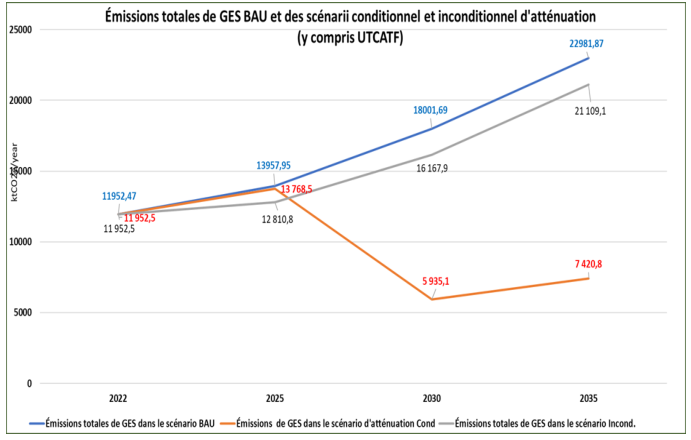 |
|
e. Informations sur les sources de données utilisées pour quantifier le (s) point (s) de référence. |
La quantification des indicateurs de référence a été basée sur les données de l’inventaire national des émissions des GES qui était communiqué dans le cadre de la préparation du premier rapport biennal de transparence «BTR» en 2025. Ce dernier a été basé sur les Lignes directrices 2006 du GIEC pour les inventaires nationaux de gaz à effet de serre, ainsi que le Supplément 2013 aux Lignes directrices 2006 du GIEC pour les inventaires nationaux de gaz à effet de serre : zones humides, et l'affinement 2019 des Lignes directrices 2006 du GIEC pour les inventaires nationaux de gaz à effet de serre. |
|
f. Informations sur les circonstances dans lesquelles le pays partie peut mettre à jour les valeurs des indicateurs de référence. |
Les informations sur les indicateurs de références ont été mise à jour conformément aux décisions 4/CMA.1, 18/CMA.1 et 5/CMA.3, et serait mis à jour pour refléter toute mise à jour des lignes directrices du GIEC ou des mesures communes qui pourraient être décidées par la CMA à l’avenir. Dans ce cadre la Mauritanie utilisera également le potentiel de réchauffement global (PRG100) à horizon de 100 ans indiqué dans le tableau 8.A.1 du cinquième rapport d'évaluation du Groupe d'experts intergouvernemental sur l'évolution du climat (GIEC AR5). L’inventaire national des GES du BTR1 est en cours d’examen dans le cadre de l’ICA par la TTE. |
|
2. Délais et/ou périodes de mise en œuvre |
|
|
a. Calendrier et/ ou période de mise en œuvre |
2025-2035. |
|
b. Qu’il s’agisse d’un objectif annuel ou pluriannuel, selon le cas. |
Pluriannuels: 2030, 2035 |
|
3. Périmètre et couverture |
|
|
a. Description générale de l’objectif d’atténuation. |
Engagement inconditionnel de réduction des émissions de GES de 8,1% (1872,7 GgCO2-Eq) en 2035 comparé au scenario (BAU) avec les niveaux de soutien international en vigueur en 2025. Cette réduction pourra atteindre 67,23% (12102,29 GgCO2-Eq «scénario conditionnel») par rapport au BAU en 2030. Ce scénario subira une évolution plus escarpée suivant les conditions socioéconomiques pour atteindre 15561,07GgCO2-Eq (67,72%) en 2035 . |
|
b. Secteurs, gaz, catégories et puits couverts par la contribution déterminée au niveau national, y compris, le cas échéant, conformément aux lignes directrices du GIEC. |
L’engagement de la CDN couvre l’ensemble de l’économie nationale. Prenant en compte toutes les émissions et les absorptions anthropogéniques telles que rapportées dans le rapport d’inventaire du BTR1, et plus particulièrement: Tous les secteurs, tels que définis par les lignes directrices 2006 du GIEC notamment et celle de l’annexe de la décision 18/CMA1: Energie ; Procédés Industriels et Utilisation des Produits (PIUP) ; Agriculture, Utilisation des terres, changement d’affectation des terres et foresterie (UTCATF) ; Déchets. Les gaz à effet de serre inclus dans les lignes directrices 2006 du GIEC notamment le CO2,CH4,N2O,HFCs,NOx, SO2, COVNM, et CO. Toutes les catégories qui se produisent sur le territoire national, telles qu’elles sont incluses dans les lignes directrices 2006 du GIEC et figurent dans le BTR1. |
|
c. Comment le pays Partie a tenu compte des paragraphes 31 c) et d) de la décision 1 / CP.21. |
La CDN inclue toutes les catégories d’émissions ou d’absorptions anthropiques estimés dans les inventaires de gaz à effet de serre. Aucune source, puits et activité qui était inclus dans la version précédente de la CDN n’a été exclue. Les améliorations de l’inventaire GES ont été prise en compte dans la comparaison entre la CDN initiale et l’actuelle. Seules les catégories d’émissions anthropiques ou d’absorptions qui n’existent pas dans le pays sont excluent. Le plus grand effort était mis sur le secteur de l’énergie en tant que le plus grand potentiel d’atténuation, avec la plus grande probabilité de mise en œuvre. Cependant qu’aucun secteur n’a été exclu. L’analyse n’a pas été alignée sur les catégories clé de l’inventaire des GES. |
|
d. Co-avantages d’atténuation résultant des mesures d’adaptation et / ou des plans de diversification économique des Parties, y compris la description des projets, mesures et initiatives spécifiques des mesures d’adaptation et / ou des plans de diversification économique des Parties. |
Les co-bénéfices des mesures d’atténuation sur l’adaptation et vice-versa ainsi que les synergies avec les autres cadres de planification du développement durable, en particulier les ODD sont identifiés auxquels il convient d’ajouter d’autres co-bénéfices comme l’amélioration de la qualité de l’air, les réductions potentielles en coûts pour les utilisateurs et la meilleure qualité de vie pour les populations. |
|
4. Processus de planification |
|
|
a. Informations sur les processus de planification que le pays partie a entrepris pour préparer sa CDN et, le cas échéant, sur les plans de mise en œuvre du pays partie, y compris, le cas échéant : |
|
|
i. Arrangements institutionnels nationaux, participation du public et engagement avec les communautés locales et les peuples autochtones, d’une manière sensible au genre. |
Processus d’actualisation de la CDN Le processus d’actualisation de la CDN a été lancé, en 2021, et a connu la réalisation des activités phares suivantes: Janvier – avril 2021 : préparatoire du lancement de l’actualisation de la CDN Avril 2021 : lancement officiel du processus d’actualisation de la CDN ; Mai – juin 2021: réalisation d’une 1ère série de consultations sectorielles pour statuer sur l’état d’avancement des actions d’atténuation et des objectifs d’adaptation inscrits dans la CDN1 et les principaux changements à apporter sur cette CDN ; Juillet 2021: échange élargi avec les diverses parties prenantes pour recueillir les données nécessaires pour informer le processus technique d’actualisation de la CDN; Fin juillet début Aout 2021:rédaction et processus de réajustement avec les secteurs ; Aout 2021:présentation officielle à deux reprises de la CDN actualisée au Réseau National des Points Focaux Changements Climatiques pour validation du Draft de la CDN actualisée. Arrangements institutionnels pour la mise en œuvre de la politique climatique Dans un effort pour consolider les exigences de transparence de la CCNUCC, la Mauritanie a mis en place une Direction du Climat et de l'Économie Verte (DCEV) afin de coordonner l'ensemble de son programme national sur le changement climatique, au sein du Ministère de l'Environnement et du Développement Durable (MEDD) en septembre 2020. Cette instance est dirigée par un Directeur national, associé à un Directeur adjoint et à trois Bureaux nouvellement créés en charge respectivement de la Vulnérabilité et de l'Adaptation ; Activités et stratégies ; et de IGES et d'atténuation. La DCEV s'appuie également sur une task force composée des points focaux sectoriels (PFS), des ministères de tutelle, chacun désigné par son ministère, de la société civile et des institutions du secteur privé. Ce réseau est composé de 38 membres dont 7 femmes. Des groupes de travail sectoriels ont été mise en place dans les ministères clés pour la question, avec un renforcement des capacités pour qu’ils participent activement dans la préparation de l’actualisation de la CDN. Ce dispositif institutionnel est piloté par le point focal sectoriel au niveau ministériel et par la DCEV au niveau national. |
|
ii. Questions contextuelles, y compris, entre autres, le cas échéant : |
|
|
ii (a). Les circonstances nationales, telles que la géographie, le climat, l’économie, le développement durable et l’élimination de la pauvreté |
Pour plus de détail : voir chapitre 1 : Contexte national Position géographique La Mauritanie est un pays côtier du nord-ouest africain, situé entre les latitudes septentrionales de 15 à 27 degrés et les longitudes occidentales de 5 et 17 degrés, avec une superficie totale de 1 030 700 km2. Le pays compte depuis 2015, 15 provinces ou Wilayat. Ces 15 wilayas sont à leur tour subdivisées en Moughataat4 (c'est-à-dire départements) et ces dernières en 218 communes. Au plan physique, la Mauritanie se caractérise par la platitude de son relief, avec des altitudes faibles, souvent inférieures à 500 m à l’exception de la Kédia d‟Idjil qui culmine à 915 m. Les paysages sont caractérisés par la monotonie des plateaux tabulaires et des immenses étendues caillouteuses ou sableuses. Pays à dominante désertique, la Mauritanie dispose de grandes étendues pastorales et de seulement 0,5 % de terres arables, avec une population estimée à 4,2 Million en 2020, dont la proportion urbaine est plus importante que celle rurale (52,8 %), contre 48,3 % en 2013. La Mauritanie est totalement saharienne dans sa partie nord et sahélienne dans sa partie sud, se caractérise par un climat généralement chaud et sec marqué par des hivers relativement doux (avec des températures minimales moyennes de 19 à 23°C) et des périodes d’hivernage très courtes (environ trois mois). En saison sèche, les températures dépassent le seuil de 40°C dans la quasi-totalité des régions du pays (exception faite de Dakhlet Nouadhibou). Climat Saharien au nord et sahélien au sud, généralement chaud et sec, doux en bordure de l'Océan Atlantique avec quatre mois de saison de pluie (de juin à septembre) Précipitations annuelles moyennes : entre 500 mm au Sud et moins de 50 mm au Nord du pays. Économie nationale La croissance économique a considérablement augmenté, de 3,6 % en 2018 à 6,3 % en 2019, sous l’effet du boom minier qui a été soutenu par une croissance modérée des secteurs non extractifs. Cette croissance a subi une contraction de 3,6 % en 2020 en raison de l’impact économique de la pandémie mondiale de coronavirus (COVID-19), pour atteindre une fourchette de -2% à -6% entre le dernier semestre de 2020 et le premier de 2021. Les aléas climatiques, du retard dans les réformes structurelles et l’insécurité régionale viennent s’ajouter aux risques liés à la pandémie. Malgré la réussite de la première phase de la stratégie de croissance accélérée et de prospérité partagée SCAPP (2016-2020), cette ensemble d’obstacles entrave la poursuite de cette réforme. Cependant que le pays compte sur un avenir meilleur avec la mise en exploitation d’autres ressources particulièrement énergétiques (Gisement gazier, ressources renouvelables.). Développement durable La stratégie nationale susmentionnée SCAPP est une stratégie parapluie qui englobe tous les secteurs de développement du pays ; elle constitue le cadre de référence et de cohérence des politiques de développement socio-économique durable du pays. D’un autre côté, et depuis quelques années, plusieurs stratégies sectorielles ont intégré la problématique du changement climatique en alignement au cadre de programmation nationale qu’était le Cadre Stratégique de Lutte contre la Pauvreté (CLSP) qui a évolué, en 2016, en SCAPP. Ainsi, plusieurs stratégies peuvent être citées, comme : La Stratégie Nationale pour l’Environnement et le Développement Durable (SNEDD) 2017-2021 ; La Stratégie de Développement du Secteur Rural (SDSR) : horizon 2025 Le Plan National de Développement Agricole (PNDA) 2016-2025 Le plan national de développement de l’élevage (PNDE) 2018-2025 La Stratégie de Développement du Secteur de l’Eau et de l’Assainissement (SNADEA, 2016-2030) ; La stratégie de gestion responsable pour un développement durable des pêches et de l’économie maritime, 2015-2019. |
|
ii (b). Meilleures pratiques et expérience liées à la préparation de la CDN. |
La CDN a capitalisé sur les capacités analytiques, la pratique participative, l'expérience, les outils et la base de connaissances qui ont été créés et améliorées durant les processus de préparation des documents habilitants du pays. Dans un cadre de concertation englobant l’ensemble des parties prenantes, 55 mesures d’atténuation sectorielles avec des objectifs quantifiables de réductions individuelles ont été identifiées. Malgré la mise en place et l’institutionnalisation du réseau national des points focaux sectoriels depuis 2013, la Mauritanie n’a pas peu encore mis en place un système MNV mature pouvant permettre le suivi et l’évaluation de la mise en œuvre de la CDN. Dans ce domaine le pays compte sur l’appui du FEM à travers le financement de la CBIT pour la mise en place du MNV domestique. La participation active des PFS parait clairement sur le changement de la vision avec l’expérience partagé de la CDN initiale ou le secteur de l’énergie émergent a été secondaire par rapport au secteur Agriculture (premier secteur de l’émission GES dans le pays). Dans cette révision et suite aux échecs dans l’ambition UTCATF et au niveau d’intégration des énergies renouvelables dans le mix-énergétique national, la Mauritanie compte sur la valorisant des potentialités énergétiques et des ressources propres dans un respect des objectif du développement durable des Nations unies. La Mauritanie a élaboré sa CDN 2035 pour qu'elle soit à la fois ambitieuse et réalisable. Elle s'appuie sur les politiques et réglementations, les investissements et les programmes actuels, tout en reconnaissant la nécessité d'accélérer le rythme de réduction des émissions dans l'ensemble de la société et le potentiel de capitalisation des capacités technologiques en rapide évolution. Ainsi, la CDN repose sur le principe qu'il existe de multiples voies pour atteindre le niveau attendu de réduction des émissions, et que ces voies reposent sur l'action d'un éventail de parties prenantes. La CDN Mauritanienne promeut la réalisation des objectifs de l'Accord de Paris, notamment la poursuite des efforts visant à limiter l'augmentation de la température moyenne mondiale à 1,5 °C, ainsi que la nécessité d'atteindre la neutralité carbone mondiale au plus tard en 2050. La CDN a été élaborée sur la base d'évaluations sectorielles du potentiel de réduction des émissions, Ces évaluations et analyses montrent que la CDN Mauritanie peut être atteinte grâce à diverses politiques et stratégies d'investissement mises en œuvre Ces actions comprennent notamment l'investissement dans l'efficacité énergétique , l'accélération de la transition vers une énergie propre ; la lutte contre les émissions directes de gaz à effet de serre provenant des processus industriels ; la promotion d'une agriculture et d'une foresterie respectueuses du climat ; l'investissement dans la recherche et l'innovation, et d'autres priorités. Ces mesures créeront également de bons emplois, amélioreront la santé publique et contribueront à promouvoir l'équité et à atteindre les priorités nationales en matière de justice environnementale. |
|
ii (c). Autres aspirations et priorités contextuelles reconnues lors de l’adhésion à l’Accord de Paris. |
La Mauritanie est pleinement engagée dans la protection de l'environnement, et notamment dans la lutte contre le réchauffement climatique. Dans le cadre de ses engagements, elle s'engage à réduire l'utilisation des énergies fossiles, à développer les énergies renouvelables et à décarboner ses déchets. La Mauritanie est également profondément attachée au respect des principes d'intégrité environnementale |
|
b. Informations spécifiques applicables aux Parties, y compris les organisations d’intégration économique régionale et leurs États membres, qui sont parvenus à un accord pour agir conjointement en vertu du paragraphe 2 de l’article 4 de l’Accord de Paris. |
La Mauritanie participe activement dans l’initiative « Desert to Power » de la BAD/G5 Sahel, comme elle vient de signer un protocole d'accord avec le géant GWP global pour le développement de la nouvelle technologie hydrogène vert dans le cadre du programme dénommé « Aman », qui prévoit le développement de 30 GW d'énergies solaire et éolienne. |
|
c. Comment le pays partie préparant sa CDN a-t-elle été informée par les résultats du bilan mondial, conformément au paragraphe 9 de l’article 4 de l’Accord de Paris. |
Durant l’élaboration de l’actualisation de la CDN, le rapport spécial du GIEC sur 1,5 degré, a été utilisé comme référence. Ainsi que le potentiel de réchauffement global (PRG100) à horizon de 100 ans indiqué dans le tableau 8.A.1 du cinquième rapport d'évaluation du GIEC (GIEC AR5). |
|
d. Chaque Partie ayant une CDN au titre de l’article 4 de l’Accord de Paris qui consiste en des mesures d’adaptation et/ou des plans de diversification économique aboutissant à des co-avantages d’atténuation conformes au paragraphe 7 de l’article 4 de l’Accord de Paris à soumettre des informations sur: |
|
|
i. Comment les conséquences économiques et sociales des mesures de réponse ont-elles été prises en compte dans le développement de la CDN. |
Les conséquences économiques et sociales des mesures prises pour assurer une transition équitable vers une économie bas carbone sont relativement faibles en Mauritanie i compte tenu de la structure économique. Néanmoins, des subventions substantielles sont disponibles pour permettre à la population de se tourner vers des solutions bas carbone, telles que et la rénovation énergétique |
|
ii. Projets, mesures et activités spécifiques à mettre en œuvre pour contribuer aux co-bénéfices d’atténuation, y compris des informations sur les plans d’adaptation qui produisent également des co-bénéfices d’atténuation, qui peuvent couvrir, mais sans s’y limiter, des secteurs clés, tels que l’énergie, les ressources en eau, ressources côtières, établissements humains et planification urbaine, agriculture et foresterie; et des actions de diversification économique, qui peuvent couvrir, mais sans s’y limiter, des secteurs tels que la fabrication et l’industrie, |
Le pays a adhéré à l’initiative G5 SAHEL qui vise notamment le développement des pays membres pour faire face aux effets des changements climatiques ainsi que de l’amélioration de la résilience des populations victimes d’insécurité alimentaire. D’autres initiatives de développement durables sont coordonnées par le CILSS en particulier des programmes régionaux de développement du pastoralisme (PRAPS/WB) et le programme régional initiative sahel (PARIIS/WB) qui vise l’amélioration de la maitrise eau à travers l’irrigation. Le CILSS coordonne aussi le programme régional sur la résilience au sahel (P2RS/BAD) et que celui sur la résilience financé par la BID. |
|
l’énergie et les mines, les transports et les communications, la construction, le tourisme, l’immobilier, l’agriculture et la pêche. |
|
|
5. Hypothèses et approches méthodologiques, y compris celles permettant d’estimer et de comptabiliser les émissions anthropiques de gaz à effet de serre et, le cas échéant, les absorptions |
|
|
a. Hypothèses et approches méthodologiques utilisées pour comptabiliser les émissions et absorptions anthropiques de gaz à effet de serre correspondant à la contribution déterminée au niveau national du pays partie, conformément au paragraphe 31 de la décision1/ CP.21 et aux orientations comptables adoptées par la CMA. |
La Mauritanie a comptabilisée les émissions et les absorptions anthropiques des GES conformément aux méthodes et aux paramètres de mesure communs évalués par le Groupe d’experts intergouvernemental sur l’évolution du climat (GIEC) et adoptés par la Conférence des Parties agissant comme réunion des Parties à l’Accord de Paris, en utilisant les lignes directrices 2006 du GIEC et le pouvoir de réchauffement global a 100 ans (PRG100) du 5ème rapport d’évaluation du GIEC pour calculer les équivalents CO2. Les estimations des émissions et des absorptions utilisées pour la comptabilisation de la CDN3.0 sont celles rapportées dans l'Inventaire national des émissions GES, qui suit les recommandations du GIEC en matière de bonnes pratiques et les orientations figurant à la section II de l'annexe de la décision 18/CMA.1 |
|
b. Hypothèses et approches méthodologiques utilisées pour rendre compte de la mise en œuvre des politiques et mesures ou stratégies dans la contribution déterminée au niveau national. |
La mise en œuvre prévue de la CBIT (en cours) aboutira à la mise en place d’un MNV domestique en mesure de produire les indicateurs de progrès qui seront intégrés dans le rapport biennal de sur la transparence. |
|
c. Le cas échéant, des informations sur la manière dont le pays partie tiendra compte des méthodes et des orientations existantes au titre de la Convention pour comptabiliser les émissions et absorptions anthropiques, conformément au paragraphe 14 de l’article 4 de l’Accord de Paris, le cas échéant. |
L’inventaire actuel de la Mauritanie est soumis à la CCNUCC dabs le cadre de la préparation du premier BTR et conformément à la décision 24 / CP.19 et utilise les Lignes directrices 2006 du GIEC pour les inventaires nationaux de gaz à effet de serre et le Guide des bonnes pratiques 2003. Dans sa comptabilisation des émissions et des absorptions anthropiques correspondant à la CDN, la Mauritanie a fait de son maximum pour respecter les principes de : transparence, exhaustivité, cohérence, comparabilité et d’exactitude, permettant de comptabiliser les émissions et absorptions anthropiques, conformément à l'article 4, paragraphe 14, de l'Accord de Paris. |
|
d. Méthodologies et paramètres utilisés par GIEC pour estimer les émissions et les absorptions anthropiques de gaz à effet de serre. |
Méthodologies : les lignes directrices 2006 du GIEC ont été utilisées pour estimer les émissions et les absorptions de GES. Métrique: Les valeurs de potentiels de réchauffement global pour un horizon de 100 ans (PRG100) utilisées pour calculer les équivalents CO2, sont celles déterminées dans le quatrième rapport d’évaluation du GIEC (AR5) : PRG CO2 = 1 (par convention) ; PRG CH4 = 28 ; PRG N2O = 265. |
|
e. Hypothèses, méthodologies et approchespropresausecteur,àlacatégorieouàl’activité,conformémentaux orientations du GIEC, le cas échéant, y compris, le cas échéant: |
|
|
Approche pour traiter les émissions et les absorptions subséquentes des perturbations naturelles sur les terres gérées. |
Toutes les émissions et absorptions déclarées dans l’inventaire des GES du BTR 1 de la Mauritanie sont prise en compte dans la CDN, cependant que le pays ne dispose pas de données nécessaires pour traiter les émissions des perturbations naturelles. |
|
ii. Approche utilisée pour tenir compte des émissions et des absorptions des produits ligneux récoltés. |
La Mauritanie peut utiliser une approche de production conforme aux Lignes directrices 2006 du GIEC pour estimer les émissions et les absorptions des produits ligneux récoltés, conformément au paragraphe 56 de l'annexe à la décision 18/CMA.1 |
|
iii. Approche utilisée pour traiter les effets de la structure des classes d’âge dans les forêts. |
Les effets de la structure des classes d’âge dans les forêts ne sont pas pris en compte. |
|
f. Autres hypothèses et approches méthodologiques utilisées pour comprendre la contribution déterminée au niveau national et, le cas échéant, estimer les émissions et absorptions correspondantes, notamment : |
|
|
i. Comment les indicateurs de référence, les niveaux de référence et/ou les niveaux de référence, y compris ,le cas échéant, les niveaux de référence spécifiques au secteur, à la catégorie ou à l’activité, sont construits, y compris, par exemple, les paramètres clés, les hypothèses, les définitions, méthodologies, sources de données et modèles utilisés. |
L’inventaire des émissions de GES de 2022 et les scénarios de référence et d’atténuation ont été réalisés suivant les lignes directrices du GIEC de 2006. Les scénarios de référence BAU et d’atténuation ont été élaborés en utilisant l’outil «Coût de réduction des gaz à effet de serre» (Greenhouse Gas Abatement Cost Mode GACMO) de la DTU à partir des données des Annuaire des Statistiques Nationales et sectorielles, des données sur les activités sectorielles et des analyses prospectives socio-économiques, démographiques. |
|
ii. Pour les Parties dont les contributions déterminées au niveau national contiennent des éléments autres que les gaz à effet de serre, des informations sur les hypothèses et les approches méthodologiques utilisées en relation avec ces éléments, le cas échéant. |
NA |
|
iii. Pour les forçeurs climatiques inclus dans les contributions déterminées au niveau national non couvertes par les lignes directrices du GIEC, des informations sur la manière dont les forçateurs climatiques sont estimés. |
Pour les estimations des émissions de précurseurs, le guide d'inventaire des émissions de polluants atmosphériques EMEP/EEA 2005 de l'Agence européenne pour l'environnement a été utilisé. |
|
iv. Informations techniques complémentaires, si nécessaire. |
NA |
|
g. L’intention d’utiliser la coopération volontaire au titre de l’article 6 de l’Accord de Paris, le cas échéant. |
La Mauritanie entend recourir à la coopération volontaire au titre de l'article 6 de l'Accord de Paris pour atteindre une partie de son objectif. Dans le contexte du partenariat pour la mise en œuvre du marché, la Mauritanie participe activement dans l’initiative « Desert to Power » de la BAD/G5 Sahel, comme elle vient de signer un protocole d'accord avec le géant GWP global (Global Wind Power) pour le développement de la nouvelle technologie «hydrogène vert » dans le cadre du programme dénommé « Aman », qui prévoit la mise en œuvre des installations d'énergies solaire et éolienne renouvelable d’une capacité de 30 GW. |
|
6.Comment le pays partie considère que sa CDN est juste et ambitieuse à la lumière de sa situation nationale |
|
|
a. Comment le pays Partie considère que sa CDN est juste et ambitieuse à la lumière de sa situation nationale. |
La Mauritanie considère la mise à jour de la CDN comme suffisamment juste et ambitieuse pour contribuer à une économie à faible émission de carbone et résiliente au changement climatique d'ici 2030, voir 2050 conformément à sa situation nationale et à la stratégique de développement durable accéléré et de prospérité partagée du pays d'ici 2030. La vision de l’actuelle CDN porte un changement de base dans l’ambition de l’objectif de l’atténuation, passant d’un objectif de réduction des émissions GES de 80,3% «CDN 2 corrigée» vers 95,27% en 2050 dans la CDN3.0 dont 10,2% est inconditionnel. |
|
b. Les considérations d’équité, y compris la réflexion sur l’équité. |
Équité La République Islamique de la Mauritanie comme pays non annexe 1 moins avancée, contribue peu aux émissions mondiales de gaz à effet de serre. Cependant qu’elle est exposée à une grande vulnérabilité aux impacts du changement climatique en raison de sa position géographique. Tenant compte des principes généraux et les dispositions de la Convention, en particulier ceux liés aux responsabilités communes mais différenciées et aux capacités respectives et à l'accès équitable à l'espace atmosphérique. La CDN de la Mauritanie est guidé par le désir du pays de réduire la pauvreté, d'atteindre une économie résiliente au climat à faible émission de carbone, ainsi que d’assurer un développement durable pour devenir un pays à revenu intermédiaire élevé et prospère d'ici 2030, conformément à la Vision stratégique 2030 du pays. La présente CDN constitue une contribution équitable au vu de leur contexte socio-économique et géographique particulier. La réussite de la mise en œuvre de la CDN de la Mauritanie est conditionnelle et dépendante du niveau de soutien à fournir par le biais de la Convention et d'autres accords multilatéraux et bilatéraux. |
|
c. Comment le pays Partie a traité le paragraphe 3 de l’article 4 de l’Accord de Paris. |
Conformément aux articles 4.2 et 4.11 de l’Accord de Paris, aux paragraphes 23 et 24 de la décision 1/CP.21 et aux autres dispositions pertinentes de l’Accord, la Mauritanie présente une actualisation de sa contribution déterminée au niveau national (CDN 3) au titre de l’Accord de Paris pour la période 2025-2050, comme objectif de réduction d’émissions 95,27% en 2050 par rapport au BAU dont 10,2% est inconditionnel. |
|
d. Comment le pays Partie a traité le paragraphe 4 de l’article 4 de l’Accord de Paris. |
La mise à jour renforcée de la contribution déterminée au niveau national CDN de la Mauritanie représente une progression au-delà de sa CDN précédente, car elle focalise sur l’énorme potentiel du secteur de l’énergie en ressources renouvelables dans sa partie conditionnelle. La partie non conditionnelle de la CDN compte comme objectif absolu la réduction des émissions à l’échelle de l’économie comme stipulé dans l’Article 4 de l’Accord de Paris, alors la composante d'adaptation de la CDN, en développant des indicateurs qui permettront au pays de suivre les progrès réalisés dans le renforcement de la résilience des écosystèmes humains et physiques ainsi que celles de l'adaptation. |
|
e. Comment le pays Partie a traité le paragraphe 6 de l’article 4 de l’Accord de Paris. |
La CDN Mauritanie focalise sur l’important potentiel du secteur de l’énergie en ressources renouvelables dans sa partie conditionnelle. La partie non-conditionnelle de la CDN compte comme objectif absolu la réduction des émissions à l’échelle de l’économie comme stipulé dans l’Article4 de l’Accord de Paris, alors que la composante d'adaptation de la CDN, développe des actions devant permettre au pays le renforcement de la résilience des écosystèmes humains et physiques ainsi que celles de leur adaptation. |
|
7. Comment la CDN contribue à la réalisation des objectifs de la Convention tels qu’énoncés à son article 2 |
|
|
a. Comment la CDN contribue à atteindre l’objectif de la Convention tel qu’énoncé à son article2. |
Les engagements nationaux dans l’actuelle CDN révisée sont en conformité avec l’objectif de la CCNUCC ainsi que l’objectif à long terme de l’Accord de Paris, comme expliqué aux points 6a et6b. |
|
b. Comment la CDN contribue à la réalisation de l’article 2, paragraphe 1 a), et de l’article 4, paragraphe 1, de l’Accord de Paris. |
Les sections 4 et 6 détaillent l’ambition d’atténuation dans l’actuelle CDN qui apportera une contribution à la réalisation de l’article2 de l’Accord de Paris. |
Inconditionnelles Conditionnelles Mixte (Conditionnelles (1er )/Inconditionnelles « 2ème » )
|
Atténuation |
Coût (investissement Cumulatif) |
||||||||
|
N° |
Secteur |
Mesures |
Description |
2030 |
2035 |
2050 |
2030 |
2035 |
2050 |
|
(Gg CO2) |
Millions U$ |
||||||||
|
1 |
Culture sans labour |
Pratique courante dans l’agriculture traditionnelle en appliquant cette technique principalement dans la contre saison (après la récolte de la culture principale) se traduira par une réduction de la consommation mécanique. Cette introduction sera dans l’ordre de 6000ha à l’horizon 2030 et 15000ha en 2050 |
0,514 |
0,600 |
1,286 |
-0,192 |
-0,314 |
-0,942 |
|
|
2 |
Agriculture |
Supplément en matières grasses dans l'alimentation des ruminants |
Un régime alimentaire traditionnel pour ruminants, contient 1,5-3% de matière sèche (DM%) de matières grasses. Avec chaque 1% de matières grasses ajoutées, les émissions de CH4 sont réduites d'environ 4% pour tous les ruminants. Les graisses supplémentaires peuvent augmenter le taux de croissance et le rendement laitier. Cette introduction sera dans l’ordre 4% de plus de matières grasses d’ici 2030. |
3,972 |
3,972 |
9,407 |
0,320 |
0,320 |
0,757 |
|
3 |
Couvertures de cultures |
Cultivé dans le but d'absorber le surplus d'azote restant après la récolte de la culture principale; augmenter la teneur en carbone organique du sol en diminuant la perte de carbone du sol |
14,900 |
17,880 |
22,350 |
1,208 |
2,657 |
7,728 |
|
|
4 |
due à l'érosion pendant la période de jachère; réduction de la lixiviation du nitrogène (et des émissions de N2O subséquentes) et en réduisant la quantité de nitrogène qui doit être appliquée à la culture suivante (réduction de l'utilisation de fertilisants synthétiques) L’application de cette technique sera dans l’ordre de 10000 ha/an en 2030 (totalement conditionnel) et 25000 ha en 2050 dont 60% conditionnel. |
14,900 |
1,208 |
||||||
|
5 |
Amélioration génétique des races locales (Bovine) |
Malgré que cette mesure soit prise en compte comme mesure d’adaptation elle participe même faiblement à l’atténuation des émissions des GES du |
5,424 |
6,300 |
6,517 |
||||
|
6 |
secteur. Dans ce cadre les émissions de de cette mesure ont été retenues et calculé en utilisant le modèle EXACT de la FAO. |
26,922 |
740,355 |
||||||
|
Scénario total du secteur Agriculture |
24,810 |
55,674 |
794,815 |
1,336 |
2,663 |
8,751 |
|||
|
7 |
Activités restauratrices comportant des actions biologiques de |
11,000 |
3,667 |
11,000 |
4,050 |
5,400 |
17,550 |
||
|
8 |
Foresterie |
Reboisement avec Silvopasture |
reboisement et de régénération de 3000 ha/an en 2030 totalement conditionnelles. Cette action pourra atteindre 8000 ha/an en 2050 si la partie inconditionnelle sois impliquer complètement dans la mise en œuvre pour qu’elle apporte .5000 ha/an de plus. |
7,333 |
18,333 |
2,700 |
18,900 |
||
|
9 |
Augmenter annuellement les superficies reboisées inconditionnellement pour atteindre l’objectif de 4000 ha/an en 2030. Avec |
36,667 |
36,667 |
36,667 |
6,000 |
12,000 |
30,000 |
||
|
10 |
Reboisement |
un soutien international plus conséquent les superficies reboisées peuvent atteindre l’objectif de 10000 ha/an de plus en 2030 dans le cadre des programmes régionaux comme la grande muraille verte… Cette situation pourra atteindre 17000 . ha/an en 2050 si la partie conditionnelle sois maintenue à 10000 ha/an. |
14,667 |
11,000 |
25,667 |
5,400 |
7,200 |
19,200 |
|
|
11 |
Augmenter annuellement les superficies restaurées pour atteindre l’objectif de 5000 ha/an Avec un soutien international plus |
36,667 |
36,667 |
91,667 |
6,000 |
12,000 |
48,000 |
||
|
12 |
Régénération assistée des forêts |
conséquent les superficies restaurées peuvent atteindre l’objectif de 10000 ha/an de plus dans le cadre des programmes régionaux. . Cette action pourra atteindre 35000 . ha/an en 2050 si la partie conditionnelle sois élargie à plus de 71%. |
18,333 |
25,667 |
36,667 |
6,000 |
10,200 |
26,400 |
|
|
Scénario total du secteur de l’UTCATF |
117,334 |
117,334 |
209,001 |
23,4 |
44,1 |
142,5 |
|||
|
13 |
EE Ménages |
Climatiseur résidentiel efficace |
Amélioration de l’efficacité énergétique des climatiseurs selon les règles de performance énergétique et |
4,882 |
5,579 |
6,974 |
0,910 |
1,950 |
5,720 |
|
14 |
la promotion de la climatisation écoénergétiques. Remplacement de la puissance d'entrée de 12000 Btu / h (1120 W) par celle de 9000 Btu / h (995 W) ou climatisation LED. Cette technologie est déjà présente dans le pays et pourra dominée la consommation en 2030 avec plus de 1500000 unités dont 700000 conditionnelles. |
5,579 |
8,369 |
20,921 |
2,340 |
3,900 |
13,260 |
||
|
15 |
Éclairage domestique efficace avec LFC |
Amélioration de l’efficacité énergétique de l’éclairage domestique efficace avec les ampoules fluocompactes 100 000 unité en 2030. Cette consommation est en régression continue et pourra atteindre 10000 unités en 2050. |
3,407 |
2,725 |
0,341 |
0,231 |
0,355 |
0,501 |
|
|
16 |
Éclairage efficace avec LED |
Amélioration de l’efficacité énergétique de l’éclairage domestique avec les ampoules LED 800 000 unités en 2030 voir 1 100 000 unités en 2035 et 2 000 000 unités en 2050. |
55,597 |
76,446 |
138,992 |
-9,500 |
-15,000 |
-40,500 |
|
|
17 |
Remplacement du LFC avec les LED dans l’éclairage domestique |
Amélioration de l’efficacité énergétique de l’éclairage domestique avec le remplacement de 900 000 ampoules fluocompactes avec des ampoules LED de la nouvelle génération (140 Lumen / Watt). Cette composante est en croissance accélérer avec plus de 900000 en 2030 voir 1000000 en 2060. |
7,358 |
8,094 |
8,176 |
17,516 |
24,564 |
45,426 |
|
|
18 |
Poêles à bois efficaces |
Amélioration de l’efficacité énergétique avec la diffusion de poêles à bois efficaces : ce programme pourra atteindre 1000 poêles en 2035 voir 6000 en 2050. |
1,338 |
8,030 |
|||||
|
19 |
Poêles à charbon de bois efficaces (foyer amélioré) |
Cette mesure est déjà présente, mais sa diffusion pourra atteindre 150 000 foyers améliorés d’ici 2030 voir 200000 en 2050. |
43,938 |
46,867 |
58,583 |
17,160 |
26,760 |
60,060 |
|
|
20 |
GPL remplaçant le bois |
Diffusion de 170 000 Poêles à GPL d’ici 2030 |
349,340 |
367,835 |
410,989 |
12,300 |
17,670 |
35,040 |
|
|
21 |
Poêles électriques efficaces |
Diffusion de 10 000 Poêles électriques efficaces d’ici 2030 |
1,387 |
8,320 |
16,640 |
1,407 |
5,427 |
25,527 |
|
|
22 |
Réfrigérateur efficace |
Mise en place d’un programme de promotion de la réfrigération écoénergétiques dans le secteur |
8,246 |
9,424 |
11,780 |
1,816 |
3,891 |
11,414 |
|
|
23 |
résidentiel, le potentiel d’introduction de cette technique pourra atteindre 22 000 unités en 2030 s’il sera associé d’une part inconditionnel de 46,7%(soit 7000 unités de plus). |
17,670 |
70,682 |
141,363 |
7,912 |
23,476 |
101,297 |
||
|
Secteur Energie |
Scénario total sous-secteur EE Ménages |
497,404 |
605,679 |
822,789 |
52,092 |
92,993 |
257,745 |
||
|
24 |
Évitement des émissions CH4 |
Biogaz dans les fermes rurales substituant le bois et le charbon |
La technologie de bio digesteur est déjà présente dans la sous-région. Une alimentation du bio digesteur de 2 m3 composée principalement de la bouse de bétail et d'autres déchets organiques produira du biogaz utilisable à des fins de cuisson et de chauffage de l'eau chaude. La réalisation de 2000 Bio digesteurs à l’horizon 2035 voir 5000 en 2050 |
22,548 |
56,371 |
0,546 |
3,822 |
||
|
Secteur Energie |
Scénario total sous-secteur Évitement des émissions de méthane |
22,548 |
56,371 |
0,546 |
3,822 |
||||
|
25 |
Programme d’efficacité |
Réduction de la demande énergétique du secteur industriel de 30 % à |
92,053 |
92,053 |
443,505 |
0,921 |
1,841 |
10,993 |
|
|
24 |
EE Industrie |
énergétique dans le secteur de l’industrie |
l’horizon 2030. Cette action ne pourra aboutir s’il ne sera pas associé d’une part inconditionnelle de 30%. Avec un accompagnement similaire cette mesure pourra atteindre 60% en 2050 |
184,107 |
184,107 |
887,009 |
3,912 |
5,753 |
24,057 |
|
Secteur Energie |
Scénario total sous-secteur EE Industrie |
276,16 |
276,16 |
1330,514 |
4,833 |
7,594 |
35,05 |
||
|
27 |
EE service |
Éclairage de bureau efficace avec LFC |
Amélioration de l’efficacité énergétique de l’éclairage des bureaux avec les ampoules fluocompactes. Cette action est déjà présente et pourra atteindre 10000 lampes en 2030, mais elle prendra une régression pour le compte du LED pour ne comptée que |
0,350 |
0,350 |
0,035 |
0,129 |
0,193 |
0,270 |
|
28 |
Éclairage de bureau efficace avec LED |
Amélioration de l’efficacité énergétique de l’éclairage des bureaux avec 5000 ampoules LED voir 8000 en 2050 |
0,199 |
0,238 |
0,318 |
0,230 |
0,329 |
0,707 |
|
|
29 |
Lampadaires efficaces - tubes LED |
Amélioration de l’efficacité énergétique de l’éclairage public (3000 tubes LED sur le long de la période 2030-2050). |
1,051 |
1,051 |
1,051 |
0,523 |
0,733 |
1,361 |
|
|
30 |
Efficacité énergétique en service & Et Nouveaux Bâtiments |
Réduction de la demande énergétique des services particulièrement dans les nouveaux bâtiments. Cette action est calculée sur la superficie avec comme objectif 3000 m2 en 2030 et 6000 m2 en 2050. |
0,094 |
0,094 |
0,187 |
0,020 |
0,040 |
0,139 |
|
|
Secteur Energie |
Scénario total sous-secteur EE service |
1,694 |
1,733 |
1,591 |
0,902 |
1,295 |
2,477 |
||
|
31 |
Passer du fioul lourd au gaz naturel dans la centrale thermiques dual |
Remplacement du fioul par le gaz naturel dans la centrale thermique dual (fioul/gaz) 180 MW de Nouakchott en 2030 |
261,784 |
436,307 |
945,332 |
0,129 |
0,237 |
0,846 |
|
|
32 |
EE offre |
Nouvelle centrale électrique au gaz |
L’installation des novelles centrale électriques à gaz naturel avec pour objectif 480MW en 2030. Cette objectif |
56,160 |
65,520 |
122,870 |
276,342 |
598,741 |
1842,280 |
|
33 |
naturel |
ne sera réalisable sans un soutien couvrant 300 MW. Avec un continuité de ce genre d’appuie cette mesure pourra atteindre 1150 MW installées en 2050 dont 650 MW inconditionnelles. |
37,440 |
37,440 |
86,009 |
368,456 |
552,684 |
1381,710 |
|
|
Secteur Energie |
Scénario total sous-secteur EE offre |
355,384 |
539,267 |
1154,211 |
644,927 |
1151,662 |
3224,836 |
||
|
34 |
Hydro |
Quota du pays dans l’OMVS |
Le quota de la Mauritanie dans la production hydroélectrique sera dans l’ordre de 75MW avec l’entré en service des nouvelles installations. Cette situation atteindra 100 MW en 2050 malgré qu’elle reste prose en compte dans les instances sous régionales (MMVS). |
142,60 |
142,60 |
190,13 |
|||
|
35 |
Chauffe-eau solaire, résidentiel |
Promotion d’installation des Chauffe-eau solaires résidentiels visant l’objectif de 4000 installation en 2030. |
7,152 |
7,947 |
9,536 |
4,257 |
8,987 |
25,542 |
|
|
36 |
Avec un soutien international plus conséquent, la promotion d’installation des Chauffe-eau solaire résidentiels pourra atteindre un additif de 9000 unités de plus en 2030. |
3,179 |
4,768 |
9,536 |
4,021 |
6,859 |
21,049 |
||
|
37 |
PV solaires, grand réseau |
Poursuite et extension du programme solaire pour atteindre une capacité cumulée installée de 100 MW en 2030. Dans ce cadre, la Mauritanie vient de signé un protocole ambitieux de développement des ressources |
4380,000 |
5256,000 |
13140,000 |
4000,000 |
8800,000 |
23200,000 |
|
|
38 |
Solaire |
énergétiques renouvelable (programme hydrogène vert) avec la société américaine CWP Global. Dénommé « Aman », il prévoit le développement de 30 GW d'énergies solaire et éolienne pour alimenter des électrolyseurs en Mauritanie. Les centrales solaires et éoliennes seront installées dans une zone désertique de 8500 km² dans le nord du pays. Sur jugement consensuel de l’équipe (points focaux et experts) atteindre la capacité de 5GW solaire est envisageable en 2030 |
87,600 |
87,600 |
87,600 |
210,400 |
290,400 |
410,400 |
|
|
39 |
PV solaire maison |
Poursuite et extension du programme solaire pour atteindre une capacité cumulée installée de 4000 kit- |
11,826 |
9,855 |
4,730 |
22,500 |
41,250 |
76,500 |
|
|
40 |
solaire/foyer en 2030. Avec un soutien international plus conséquent, le programme solaire pourra atteindre une capacité additive cumulée installée de 30000 kit-solaire/foyer en 2030. Cette capacité trouve sa confirmation dans l'initiative «Désert to Power» de la Banque Africaine de Développement et du G5. |
1,577 |
1,774 |
2,365 |
5,850 |
9,225 |
21,600 |
||
|
41 |
Mini-réseau hybride solaire/diesel |
Poursuite et extension du programme d’hybridation solaire des mini réseaux isolés pour atteindre une capacité cumulée installée de 40MW/solaire d’ici 2030 et de la maintenir d’ici 2050. |
5,840 |
5,840 |
5,840 |
12,840 |
18,840 |
36,840 |
|
|
42 |
Lampes solaires à LED |
Diffusion d’environ 20000 lampes solaires à LED dans les zones rurales bénéficiant du programme PV solaire maison. |
1,878 |
3,756 |
9,391 |
0,766 |
1,532 |
6,128 |
|
|
43 |
Lampadaires solaires |
Amélioration de l’efficacité énergétique de l’éclairage public avec la réalisation de 5000 Lampadaires solaires |
2,389 |
2,867 |
4,778 |
-7,113 |
-15,650 |
-51,217 |
|
|
Secteur Energie |
Scénario total sous-secteur Solaire |
4501,441 |
5380,407 |
13273,776 |
4253,521 |
9161,443 |
23746,842 |
||
|
44 |
Restriction à l'importation de voitures d'occasion |
La mise en application des restrictions pour limiter l’importation des véhicules de plus de 8 années en plus d’un système du bonus-malus exonérant les voitures peu émetteur de CO2 et pénalisant les modèles dépassant l’âge limite ainsi les modèles polluants. Cette action aura pour objectif 1500 voitures en 2030 et 2000 voiture en 2050. |
1,397 |
1,863 |
1,863 |
-0,294 |
-0,392 |
-0,392 |
|
|
45 |
Voitures à essence plus efficaces |
Promotion des voitures à essence moins polluante, ce programme sera basé sur l’appuie international ainsi |
3,271 |
3,271 |
-0,689 |
-0,689 |
|||
|
46 |
que des autorités du pays qui assureront la détaxation. Il aura pour objectif 5000 voiture en 2030 et 18000 en 2050 dont 10000 sera conditionnelles. |
2,045 |
2,453 |
4,089 |
-0,430 |
-0,517 |
-0,861 |
||
|
47 |
Voitures diesel plus efficaces |
Promotion des voitures diesel moins polluante, ce programme sera basé sur l’appuie international ainsi que |
1,438 |
1,438 |
-0,211 |
-0,211 |
|||
|
48 |
des autorités du pays qui assureront la détaxation. Il aura pour objectif 5000 voiture en 2030 et 18000 en 2050 dont 10000 sera conditionnelles. |
0,899 |
1,078 |
1,797 |
-0,132 |
-0,158 |
-0,264 |
||
|
49 |
Transport |
Voitures au gaz naturel |
Promotion des voitures hybrides : dans ce cadre, la mise en exploitation du |
2,334 |
4,669 |
7,781 |
4,500 |
13,500 |
52,500 |
|
50 |
Voiture électrique |
gisement gazier du pays prévue dans un proche avenir facilite la Pénétration des véhicules à gaz ainsi que des voitures électriques. Ces nouvelles technologies seront basées sur l’appuie international et pour objectif 6000 voitures en 2030 dont 50% à Gaz et 20000 en 2050. |
2,696 |
5,393 |
8,729 |
70,200 |
210,600 |
726,600 |
|
|
Secteur Energie |
Scénario total sous-secteur Transport |
9,371 |
20,165 |
28,968 |
73,844 |
222,133 |
776,683 |
||
|
51 |
Turbine éolienne connectée au réseau principal - on-shore |
Il s’agit d’un projet Extension de la centrale éolienne de Nouakchott de 20 MW . |
186,000 |
186,000 |
186,000 |
201,500 |
302,250 |
558,000 |
|
|
52 |
Éolien |
Éoliennes on-shore avec stockage |
Dans le cadre du programme « Aman », qui prévoit le développement de 30 GW d'énergies solaire et éolienne pour alimenter des électrolyseurs en Mauritanie. Sur jugement consensuel de l’équipe (points focaux et experts) atteindre la capacité de 5GW éoliennes est envisageable en 2030. |
6564,000 |
9189,600 |
19692,000 |
5497,945 |
13195,068 |
38064,932 |
|
Secteur Energie |
Scénario total sous-secteur Éolien |
6750 |
9375,6 |
19878 |
5699,445 |
13497,318 |
38622,932 |
||
|
Scénario total du secteur de l’Énergie |
12391,454 |
16221,559 |
36546,22 |
10729,564 |
24134,984 |
66670,387 |
|||
|
53 |
Recyclage des plastiques |
Le processus de recyclage du plastique comprend le lavage et la granulation. Cette technique est déjà présente, la production sera améliorée pour |
2,185 |
2,185 |
2,185 |
0,606 |
1,212 |
3,030 |
|
|
54 |
atteindre 2000 tonnes /an en 2030 comme inconditionnelles. Avec un soutien international plus conséquent la production du recyclage du plastique pourra atteindre 4000 t/an en dont 50% inconditionnelle/ |
2,185 |
2,185 |
2,185 |
1,061 |
1,667 |
3,485 |
||
|
55 |
Installation d’une usine d´incinération |
L’usine d´incinération sera d’une capacité de 600 tonnes/jour, et pourra générer 12MW. Ce procédé consiste à la réalisation des opérations suivantes : |
419,326 |
419,326 |
559,101 |
173,335 |
346,670 |
982,233 |
|
|
56 |
Déchés |
tri mécanique et broyage, séchage en aérobie et incinération suivant les plus récentes normes d’hygiène. Cette capacité ne sera réalisable d’ici 2030 qu’avec un soutien international, et si le secteur privé national s’impliquera d’avantage cette activité pourra doublée voir plus d’ici 2050. |
419,326 |
346,670 |
|||||
|
57 |
Biogaz issu des déchets solides municipaux |
Avec un soutien international plus conséquent, la promotion d’installation assurant la capacité de production du biogaz issu des déchets solides municipaux d'ici 2030. Cet objectif comprend la mise en place d’une centrale ou d’ensemble de mini-centrales de capacité de production de 1000 t/an. Cette ambition pourra atteindre 2000t/an en 2050. |
32,498 |
32,498 |
32,498 |
0,040 |
0,080 |
0,200 |
|
|
Scénario total du secteur des Déchets |
456,194 |
456,194 |
1015,295 |
175,042 |
349,629 |
1335,618 |
|||
|
Résultat total du Scénario avec UTCAF |
12989,792 |
16850,761 |
38565,331 |
10929,342 |
24531,376 |
68157,256 |
|||
|
Résultat total du Scénario sans UTCAF |
12872,458 |
16733,427 |
38356,33 |
10905,942 |
24487,276 |
68014,756 |
|
Émissions totales de GES (y compris UTCATF) |
||||
|
ktCO2e/an. |
2022 |
2025 |
2030 |
2035 |
|
Émissions totales de GES dans le scénario BAU |
11952,47 |
13957,95 |
18001,69 |
22981,87 |
|
Réduction des émissions dans le scénario d'atténuation conditionnelle |
0 |
189 |
12067 |
15561 |
|
Émissions totales de GES dans le scénario d'atténuation conditionnelle |
11952 |
13768 |
5935 |
7421 |
|
Réduction du scénario d'atténuation conditionnelle en (%). |
0,00% |
1,36% |
67,03% |
67,71% |
|
Réduction des émissions dans le scénario d'atténuation inconditionnelle |
0 |
1147 |
1834 |
1873 |
|
Émissions totales de GES dans le scénario d'atténuation inconditionnelle |
11952,47 |
12810,82 |
16167,89 |
21109,12 |
|
Réduction du scénario d'atténuation inconditionnelle en (%). |
0,0% |
8,2% |
10,2% |
8,1% |
|
Émissions de GES par habitant et intensité carbone du PIB |
||||
|
ktCO2e/an. |
2022 |
2025 |
2030 |
2035 |
|
Population (en milliers) |
4372,04 |
4791,37 |
5554,51 |
6408,00 |
|
PIB (en dollars US courants) |
9,56 |
10,78 |
14,43 |
18,42 |
|
Émissions de GES par habitant (tCO2-e/habitant) dans le scénario BAU |
2,734 |
2,913 |
3,241 |
3,586 |
|
Intensité carbone du PIB (kgCO2-e/US$) en BAU |
1250,52 |
1294,50 |
1247,569 |
1247,930 |
|
Émissions de GES par habitant (tCO2-e/habitant) scénario d'atténuation cond |
2,734 |
2,874 |
1,069 |
1,158 |
|
Émissions de GES par habitant (tCO2-e/habitant) scénario d'atténuation incond |
2,734 |
2,495 |
2,152 |
1,865 |
|
Intensité carbone du PIB (kgCO2-e/US$) dans le scénario d'atténuation |
1250,52 |
1108,51 |
828,34 |
649,03 |
|
Émissions du scénario « Business As Usual » par secteurs |
||||
|
ktCO2e/year |
2022 |
2025 |
2030 |
2035 |
|
Total (y compris UTCATF) |
11 952,5 |
13 957,9 |
18 001,7 |
22 981,9 |
|
Total (hors UTCATF) |
12 450,3 |
14 370,5 |
18 269,2 |
23 098,7 |
|
1. Énergie |
3 720,6 |
4 616,6 |
6 529,8 |
8 964,9 |
|
1.A. Combustion de combustibles |
3 720,6 |
4 616,6 |
6 529,8 |
8 964,9 |
|
1.A.1. Industries énergétiques |
736,7 |
1 053,7 |
1 523,2 |
2 278,7 |
|
1.A.2. Industries manufacturières et construction |
577,6 |
687,9 |
920,5 |
1 231,9 |
|
1.A.3. Transports |
1 671,7 |
2 090,1 |
3 039,4 |
4 044,9 |
|
1.A.4.b. Résidentiel |
242,4 |
286,6 |
379,7 |
516,9 |
|
1.A.4.a. Commercial/institutionnel |
0,0 |
0,0 |
0,0 |
0,0 |
|
1.A.4.c. Agriculture/sylviculture/pêche |
418,4 |
498,4 |
666,9 |
892,5 |
|
1.B. Émissions fugitives liées aux combustibles |
0,0 |
0,0 |
0,0 |
0,0 |
|
2. Procédés industriels et utilisation des produits |
25,0 |
26,6 |
30,0 |
34,6 |
|
3. Agriculture |
8 508,1 |
9 505,1 |
11 436,9 |
13 766,9 |
|
4. Utilisation des terres, changement d'affectation des terres et foresterie |
-497,9 |
-412,5 |
-267,5 |
-116,9 |
|
5. Déchets |
196,7 |
222,2 |
272,5 |
332,3 |
|
Émissions du scénario conditionnel d'atténuation par secteur |
||||
|
ktCO2e/year |
2022 |
2025 |
2030 |
2035 |
|
Total (y compris UTCATF) |
11 952,5 |
13 768,5 |
5 935,1 |
7 420,8 |
|
Total (hors UTCATF) |
12 450,3 |
14 236,0 |
6 286,9 |
7 614,6 |
|
1. Énergie |
3 720,6 |
4 497,0 |
-4 983,5 |
-6 020,4 |
|
1.A. Combustion de combustibles |
3 720,6 |
4 497,0 |
-4 983,5 |
-6 020,4 |
|
1.A.1. Industries énergétiques |
736,7 |
1 016,2 |
-9 872,8 |
-12 554,3 |
|
1.A.2. Industries manufacturières et construction |
577,6 |
619,1 |
828,5 |
1 139,8 |
|
1.A.3. Transports |
1 671,7 |
2 090,1 |
3 034,4 |
4 030,1 |
|
1.A.4.b. Résidentiel |
242,4 |
273,2 |
359,4 |
494,0 |
|
1.A.4.a. Commercial/institutionnel |
0,0 |
0,0 |
0,0 |
0,0 |
|
1.A.4.c. Agriculture/sylviculture/pêche |
418,4 |
498,4 |
666,9 |
869,9 |
|
1.B. Émissions fugitives liées aux combustibles |
0,0 |
0,0 |
0,0 |
0,0 |
|
2. Procédés industriels et utilisation des produits |
25,0 |
26,6 |
30,0 |
34,6 |
|
3. Agriculture |
8 508,1 |
9 490,2 |
11 422,0 |
13 722,1 |
|
4. Utilisation des terres, changement d'affectation des terres et foresterie |
-497,9 |
-467,5 |
-351,8 |
-193,9 |
|
5. Déchets |
196,7 |
222,2 |
-181,6 |
-121,7 |
|
Émissions du scénario inconditionnel d'atténuation par secteur |
||||
|
ktCO2e/year |
2022 |
2025 |
2030 |
2035 |
|
Total (y compris UTCATF) |
11 952,5 |
13 957,9 |
18 001,7 |
22 981,9 |
|
Total (hors UTCATF) |
12 450,3 |
14 370,5 |
18 269,2 |
23 098,7 |
|
1. Énergie |
3 720,6 |
4 616,6 |
6 529,8 |
8 964,9 |
|
1.A. Combustion de combustibles |
3 720,6 |
4 616,6 |
6 529,8 |
8 964,9 |
|
1.A.1. Industries énergétiques |
736,7 |
1 053,7 |
1 523,2 |
2 278,7 |
|
1.A.2. Industries manufacturières et construction |
577,6 |
687,9 |
920,5 |
1 231,9 |
|
1.A.3. Transports |
1 671,7 |
2 090,1 |
3 039,4 |
4 044,9 |
|
1.A.4.b. Résidentiel |
242,4 |
286,6 |
379,7 |
516,9 |
|
1.A.4.a. Commercial/institutionnel |
0,0 |
0,0 |
0,0 |
0,0 |
|
1.A.4.c. Agriculture/sylviculture/pêche |
418,4 |
498,4 |
666,9 |
892,5 |
|
1.B. Émissions fugitives liées aux combustibles |
0,0 |
0,0 |
0,0 |
0,0 |
|
2. Procédés industriels et utilisation des produits |
25,0 |
26,6 |
30,0 |
34,6 |
|
3. Agriculture |
8 508,1 |
9 505,1 |
11 436,9 |
13 766,9 |
|
4. Utilisation des terres, changement d'affectation des terres et foresterie |
-497,9 |
-412,5 |
-267,5 |
-116,9 |
|
5. Déchets |
196,7 |
222,2 |
272,5 |
332,3 |
|
Réduction des émissions de GES du scénario conditionnel d’atténuation par secteur |
||||
|
ktCO2e/year |
2022 |
2025 |
2030 |
2035 |
|
Total |
0,0 |
189,5 |
12 066,6 |
15 561,1 |
|
1. Énergie |
0,0 |
119,6 |
11 513,3 |
14 985,3 |
|
1.A. Combustion de combustibles |
0,0 |
119,6 |
11 513,3 |
14 985,3 |
|
1.A.1. Industries énergétiques |
0,0 |
37,4 |
11 396,0 |
14 833,0 |
|
1.A.2. Industries manufacturières et construction |
0,0 |
68,8 |
92,1 |
92,1 |
|
1.A.3. Transports |
0,0 |
0,0 |
5,0 |
14,8 |
|
1.A.4.b. Résidentiel |
0,0 |
13,4 |
20,3 |
22,9 |
|
1.A.4.a. Commercial/institutionnel |
0,0 |
0,0 |
0,0 |
0,0 |
|
1.A.4.c. Agriculture/sylviculture/pêche |
0,0 |
0,0 |
0,0 |
22,5 |
|
1.B. Émissions fugitives liées aux combustibles |
0,0 |
0,0 |
0,0 |
0,0 |
|
2. Procédés industriels et utilisation des produits |
0,0 |
0,0 |
0,0 |
0,0 |
|
3. Agriculture |
0,0 |
14,9 |
14,9 |
44,8 |
|
4. Utilisation des terres, changement d'affectation des terres et foresterie |
0,0 |
55,0 |
84,3 |
77,0 |
|
5. Déchets |
0,0 |
0,0 |
454,0 |
454,0 |
|
Réduction des émissions de GES du scénario inconditionnel d'atténuation par secteur |
||||
|
ktCO2e/year |
2022 |
2025 |
2030 |
2035 |
|
Total |
0,0 |
1 147,1 |
1 833,8 |
1 872,7 |
|
1. Énergie |
0,0 |
1 125,4 |
1 788,7 |
1 815,7 |
|
1.A. Combustion de combustibles |
0,0 |
1 125,4 |
1 788,7 |
1 815,7 |
|
1.A.1. Industries énergétiques |
0,0 |
673,2 |
1 106,8 |
1 027,2 |
|
1.A.2. Industries manufacturières et construction |
0,0 |
68,8 |
184,1 |
184,1 |
|
1.A.3. Transports |
0,0 |
0,9 |
4,3 |
5,4 |
|
1.A.4.b. Résidentiel |
0,0 |
379,2 |
489,3 |
594,4 |
|
1.A.4.a. Commercial/institutionnel |
0,0 |
3,3 |
4,1 |
4,6 |
|
1.A.4.c. Agriculture/sylviculture/pêche |
0,0 |
0,0 |
0,0 |
0,0 |
|
1.B. Émissions fugitives liées aux combustibles |
0,0 |
0,0 |
0,0 |
0,0 |
|
2. Procédés industriels et utilisation des produits |
0,0 |
0,0 |
0,0 |
0,0 |
|
3. Agriculture |
0,0 |
2,3 |
9,9 |
10,9 |
|
4. Utilisation des terres, changement d'affectation des terres et foresterie |
-497,9 |
-412,5 |
-267,5 |
-116,9 |
|
5. Déchets |
196,7 |
222,2 |
272,5 |
332,3 |
|
Secteurs |
Aléas climatiques/Projections |
Vulnérabilités / Impacts |
Financement en millions Conditionnels (MUSD) |
Non Conditionnels (MUSD) |
Actions adaptation |
Co-bénéfice atténuation / Synergie ODD autres que l’ODD13 |
|
Écosystèmes et biodiversité |
Forte variabilité de la pluviométrie, Augmentation des températures, Augmentation de la fréquence et de la longueur des périodes sèches, Modification du régime des vents et Élévation du niveau de la mer r |
|
29,75 |
624,75 |
|
|
|
Agriculture |
Sècheresses Pluies diluviennes Pluies tardives Inondations Vagues de chaleur Vents violents |
Hydroagricoles
|
1507,14 |
376,7 |
|
|
|
Élevage |
Sécheresses plus fréquentes et plus sévères Perturbation de la saison des pluies Tempêtes de sable et poussière Augmentation de la température ; |
Réduction drastique de la biomasse et de la valeur nutritionnelle fourragère disponible. La dégradation des sols et l'ensablement des parcours Raréfaction des points d'eau pour l'abreuvement du bétail. Déplacements forcés et coûteux des éleveurs (transhumances) Exacerbation des conflits à cause compétition pour l'accès aux RN (tensions sociales et transfrontalières.) Baisse des performances zootechniques Affaiblissement général de l'immunité et propagation de maladies animales Appauvrissement l’insécurité alimentaire et nutritionnelle |
49,01 |
26,40 |
|
|
|
Pêche |
- Les perturbations du régime des vents - La hausse de la température ; - L’élévation du niveau de la mer ; - La fréquence et la longueur des périodes de sécheresse ; - L’acidification des eaux de l’Océan |
|
116 |
15 |
|
|
|
Eau et Assainissement |
|
|
1400 |
360 |
|
|
|
Habitat, Urbanisme et Aménagement du territoire |
Sécheresses plus fréquentes et plus sévères Perturbation de la saison des pluies Augmentation de la température Tempêtes de sable et poussière Pluies intenses plus sévères Montée du niveau de la mer |
|
11,875 |
28 |
|
|
|
Santé |
les inondations, les sécheresses, les vents de sable, et les températures extrêmes (y compris les vagues de chaleur et de froid) |
Paludisme et maladies vectorielles Troubles néonataux Maladies diarrhéiques Maladies Respiratoires Maladies non transmissibles (cardiovasculaires, malnutrition, santé mentale) |
5,57 |
1,82 |
|
|
|
Genre et jeunesse |
Sécheresses et variabilité pluviométrique Inondations fluviales (vallée du Sénégal) et pluviales (villes comme Nouakchott, Rosso, Kaédi). Vagues de chaleur intenses Érosion côtière et intrusion marine menaçant Nouakchott et les zones littorales. tempêtes de sable. |
Reduction sécurité alimentaire et de revenus Charge de travail ( allongement des corvées). Abandon scolaire accru des filles et vulnérabilités des jeunes lors des déplacements liés aux chocs climatiques. Précarité accrue des jeunes, suite aux pertes de bétail et aux crises agricole (recherche emploi et migration). Manque d’accès à l’information |
1119,21 |
50 |
|
ODD 1, 2, 4, 5, 6, 8, 9, 10, 11 et 16 |
|
Éducation, Formation professionnelle, enseignement originel |
Forte variabilité de la pluviométrie ; Augmentation des températures ; Augmentation de la fréquence et de la longueur des périodes sèches Élévation du niveau de la mer et fleuve ; Variation des températures ; Modification du régime des vents ; |
Destruction des infrastructures scolaires par les évènements extrêmes Perturbation éducation à cause fluctuations de température 5 sante et confort des élèves inondations (fragilité des infrastructures scolaires, vulnérabilité de la population...,) Malnutrition, santé mentale) des élèves Pollution de l’air (influence négatives sur les enfants scolarisés et leurs familles.) |
23,13 |
10,57 |
|
ODD 2, 4, 5, 6, 8, 9, 10, 11, 12 et 16 |
|
Nexus Changement climatique-Mobilité humaine-Sécurité |
Sécheresses chroniques et accrues, Augmentation des températures et ondes de chaleur, Élévation du niveau de la mer et érosion côtière (Projection), Événements météorologiques extrêmes (Inondations) |
Perte des récoltes et du bétail due au manque d'eau force les populations agro-pastorales à se déplacer vers les zones urbaines ou vers des pays voisins. Augmentation des tensions et des conflits entre éleveurs et agriculteurs sédentaires pour l'accès aux terres arables et aux points d'eau, exacerbant l'insécurité locale. Les vagues de chaleur plus fréquentes et intenses rendent certaines zones moins vivables ou impactent la productivité agricole et animale, encourageant l'exode. Le stress sur les populations déjà vulnérables peut accroître la détresse psychologique et la vulnérabilité aux chocs, facteurs d'instabilité. Les zones côtières, y compris la capitale Nouakchott (construite sur une zone de faible altitude), sont menacées d'inondation et d'érosion, forçant potentiellement des déplacements massifs de populations vers l'intérieur du pays. Menace sur les infrastructures critiques et la concentration démographique, ce qui représente un risque majeur pour la stabilité nationale et la sécurité des populations. |
54 |
0 |
|
ODD 1, 2, 3, 6, 10, 11 et 16 |
|
SECTEUR |
TYPES D’INTERVENTION EN LIEN AVEC L’ADAPTATION |
|||||
|
ADAPTATION |
RENFORCEMENTDE CAPACITE |
TRANSFERT TECHNOLOGIE |
RECHERCHE |
CADRE INSTITUTIONNEL ET REGLEMENTAIRE |
OBSERVATION |
|
|
Ecosystèmes et de la biodiversité |
Actions réalisées Protéger les pâturages contre les feux de brousse par l'ouverture et l’entretien de pare feu (41695 kml) Reboiser de bois villageois (31686 ha) Aménager 10 zones humides (45 zones) Planter des mangroves (500 ha) Soutenir la création des emplois verts (8843 Personnes) Réhabiliter d'habitats de faune sauvage (Créaction reserve de chasse du trarza) Classer 5 Nouvelles forêts (Creation zone protégée de guelb-richat) Sécurisation de la forêt classée de Lopel (15 ha) Renforcement de capacite et mise en place de nouvelles AGLC (9 AGLC) Fixer les dunes sable pour la protection contre ensablement (5332 Ha) Réaliser des mises en défens (2075 ha) Restaurer les terre à vocation agricole par de bonnes pratiques d'adaptation (1503 Ha) Mettre aux normes du réseau de stations météorologiques de météo marine, modélisation, prévision et vigilance. (3 stations) Mettre en place l’observatoire du littoral et un SIG marin ( création observatoire) Protection du cordon dunaire par colmatage de breches (3 brèches) et restauration ecosystèmes (180 Ha) Restauration écosystème par curage de marigot (1000 ml) Financement mobilisé Le financement mobilisé pour couvrir cout exécution des actions adaptation est 2369672582 MRU dont 1553340713 MRU acquis sur budget Etat |
Sensibilisation des élus régionaux et municipaux sur les changements climatique Sensibilisation sur la territorialisation de la CDN, Sensibilisation des élus régionaux et municipaux sur les changements climatique |
La Création en cours du Centre de semences forestières a Kiffa et ses trois antennes Mederdra, Atar et Kaedi. Recherche développement et valorisation des savoirs locaux |
Décret° 07 2025 portant création d’une réserve naturelle de faune sauvage au Trarza Décret n° 2066 023 portant application de la loi de la chasse et de la gestion de la faune Décret n° 2023n 17 portant protection du site de Gheb- Richat Loi n¨2025 019 portant évaluation environnementale et sociale Décret 2023 141 créant et organisant un établissement à caractère administratif appelé observatoire de l’environnement et du littoral Promulgation de la loi n° 2021-008/ P.R/ relative à la création d’une police environnementale ; Adoption du décret n° 2022-10 du 10 février 2022 portant statut particulier des corps de la police environnementale ; Promulgation de la loi n° 2022-015 relative à la Biosécurité Elaboration et adoption du décret n°2023-066 du 28 mars 2023, portant application de la loi relative à la chasse et à la gestion de la faune Adoption du décret n° 2023-121, du 10 octobre 2023, portant création d’une réserve naturelle de faune sauvage |
||
|
Agriculture et de la souveraineté alimentaire |
Entretien des axes hydrauliques (190 Kml) Electrification des zones de production (300 zones) Désenclavement des zones de production (131 zones) Construction/réhabilitation de barrages (99 Barrages) Construction/réhabilitation d'autres ouvrages de maitrise des eaux de surface (4 325 ouvrages) Acquisition et distribution de semences traditionnelles(3 297 tonnes) Mécanisation agricoles: acquisition de tracteurs avec accessoires(148 Unités) Mécanisation agricoles: acquisition de motoculteurs avec accessoires (280 Unité) Appui en matériels agricoles: acquisition de charrue à traction animale (2 440 u) Protection des zones de cultures pluviales par des clôtures (3 998 ha) Aménagement des périmètres maraîchers (284 périmètres) Acquisition de semences maraîchères (2 210 T) Installation de serres agricoles (59 U ) Distribution de matériels horticoles (69 330 U ) Protection des zones maraichères par des clôtures (161 kml) Aménagement de nouvelles palmerais (397 ha) Réalisation et équipement de Forages en pompage solaire (269 u) Réalisation les travaux de construction de châteaux d'eau –(88 u) Aménagement des superficies avec réseaux d'irrigation (300 ha) Pose des clôtures grillagées autour de nouvelles palmeraies (131 kml) Equipement de puits en exhaure solaire dans anciennes oasis (691 u) Acquisition de vitro-plants (20 000 u) |
Amélioration des écotypes locaux dans 15 barrages Création de 4 nouvelles variétés mutantes de riz et de 8 variétés de sorgho améliorées issues d’écotypes locaux. Mise en place de deux campagnes annuelles de production de semences de riz de pré-base, avec un volume annuel de 25 à 30 tonnes destinées à 28 producteurs rizicoles. Réalisation d’analyses de fertilité et de la cartographie de 12 000 ha en zones irriguées et 5 000 ha en zones pluviales. Utilisation des résultats pour orienter les pratiques de gestion durable des sols et renforcer les capacités de production tout en réduisant la dégradation des terres. |
||||
|
Pêche |
Renforcement gestion des AMP et des écosystèmes protégés Appui au renforcement de la résilience des communautés et des acteurs de la pêche et l’aquaculture maritimes, notamment les femmes et les jeunes Appui au renforcement de la résilience des communautés et des acteurs de la pêche et l’aquaculture continentales, notamment les femmes et les jeunes |
Suivi scientifique des impacts des risques climatiques encourus |
Redynamisation du cadre institutionnel et réglementaire |
Absence de financement externe au budget État du département |
||
|
Hydraulique et assainissement |
Accès à l’eau potable 300 localités ayant bénéficié de réseaux d’eau potable sur un nombre de 100 villages programmés, Renouvellement de plus de près de 800 équipements d’exhaure et l’hybridation de 30l sites. Amélioration de l’approvisionnement en eau de 16 villes déficitaires Solutions d’approvisionnement durable et à long terme pour les trois grandes ville (Nouakchott, Kiffa et Nouadhibou). Accès à l’assainissement Début mise en œuvre plan directeur d’assainissement de Nouakchott notamment au niveau du pole A supporté sur le budget de l’État. Les systèmes d’évacuation sommaires des eaux de pluie ont été réhabilités et renforcés au niveau de 4 villes (Nouakchott, Akjoujt, Rosso et de Kaédi) et en cours pour 2 autres Atar et de Sélibaby). Les études techniques sont achevées pour la réalisation des systèmes d’assainissement collectifs dans cinq villes (Néma, Aioun, Kiffa, Kaédi et Rosso). Les études y afférents sont en cours. 700 latrines ont été construites dans les établissements scolaires et les centre de santé au niveau de 9 Wilayas La capacité opérationnelle de l’Office National d’Assainissement a été renforcée par l’acquisition d’équipements adaptés Autres actions La création de points d’eau, La réhabilitation et la réalisation de réseaux d’AEP, Le contrat-programme de forages, La construction de barrages, Le renouvellement et la maintenance des moyens d’exhaure en milieu rural, L’assainissement pluvial dans les villes Les financements non conditionnels (mobilisés sur le budget d’investissement de l’Etat) se chiffrent à 46 millions de dollars sur la période 2021-2025 |
Révision SNADEA à l’horizon 2030 pour y intégrer les aspects liés à la résilience au changement climatique. La mise à jour du Code de l’Eau et l’élaboration en cours du Code de l’Assainissement visent la recherche de cohérence entre les autres et prise en compte des. |
||||
|
Habitat, urbanisme et aménagemen t du territoire |
Réalisation de deux regroupements au Hodh Elgharbi, regroupant 18 localités et campements et un regroupement au Hodh Chergui, regroupant 7 localités. 2 Regroupements en cours, dont l’un au Gorgo l (12 localités) et un au Trarza (7 localités). |
Élaboration en cours des SDAU simplifiés pour les villes de plus de 20 000 habitants réalisation d’une étude sur la promotion d’une politique d’urbanisation fortement imprégnée de l’adaptation aux changements climatiques |
Adoption de la loi sur la promotion immobilière en 2023 et qui tient compte de l’adaptation de la construction aux exigences des changements climatiques. |
|||
|
Education |
Elaboration et exécution des plans d’Aménagement de 25 écoles (6 au Hodh CHarghi, 5 en Assaba , 4 à l’Adrar Les écoles pilotes de l’Inchiri et 7 à Nouakchott). |
Dans cadre éducation environnementale sensibilisation des enseignants et populations des localités situées près des parcs et forêts classés. Organisation de sorties pédagogiques au Parcs Nationaux de Diawling (PND), Awleiguatt, CAP Blanc NDB et la Forêt de guani a Tékane pour: 641 élèves, 87 enseignants et 19 P.B. parents d’élèves du Trarza,de Nouakchott et de Nouadhibou, Organisation de l’atelier sur l’état des lieux de l’éducation environnementale en Mauritanie en collaboration avec le MEDD et appuis du PNUD pour 120 participants dont les représentants des 63 Ecoles pilotes. Elaboration par ONG SPANA d’un Guide du maitre et de deux manuels des élèves (niveau 2 et 3 du Primaire), pour appuyer le système de l’éducation Environnementale Organisation d’une session de formation a bogué et Rosso dans la période du 22 au 25 Novembre 2024, en collaboration avec l’ONG SPANA sur le guide et les manuels d’élèves au profits de 50 enseignants Validation de deux manuels de l’élève (3éme – 4éme et 5éme-6éme du Fondamentale) et d’un Guide du Maitre élaboré par l’ONG SPANA, Renforcement de capacités des enseignants sur l’Approche Éducation Environnementale et changement climatique au profit de 72 enseignants, 18 Directeurs d’écoles des wilayas de Nouakchott, du Gorgol et de Guidimagua ; Organisation des séances d’animation pédagogique au profit de tous les enseignants des 9 écoles pilotes du PEV à Nouakchott. |
Création des clubs scolaires verts (CSV) dans les 9 Ecoles pilotes du PEV de NKTT. |
|||
|
Santé |
Lutte contre les maladies à facteurs de risque commun (50%) Lutte contre les maladies cardio-vasculaires ( 0%) Lutte contre les maladies respiratoires (0%) Amélioration de la santé des personnes vulnérables au changement climatique (40%) Renforcement du Programme Elargi de Vaccination (PEV) (85%) Lutte contre la malnutrition et les déficiences en micronutriments (70%) Stratégie de santé des femmes, jeunes et personnes âgées (50%) |
Le manque de financement des activités et programmes proposés a été la principale contrainte. |
||||
|
Élevage |
Parcours pastoraux 33 % des cibles 2030 atteintes (ex. : 10 000 ha restaurés sur 30 000 prévus). Santé animale 40 % des cibles (vaccination, fermes pilotes). |
Formation : 15 sessions de renforcement des capacités des acteurs locaux prévues d’ici 2030 (2 réalisées à ce jour) |
Cadre réglementaire : Privatisation de la profession vétérinaire formalisée par décret (38 vétérinaires privés installés, objectif 2027 : 150). |
Financement insuffisant limitant l'efficacité des interventions. Manque de coordination intersectorielle et dispersion des actions. Difficultés de suivi-évaluation due à des données peu fiables ou obsolètes. |
République Islamique de Mauritanie
Honneur – Fraternité – Justice
Ministère de l’Environnement et du Développement Durable
La Ministre
Nouakchott le 08 AUG 2025
N° 000029
OBJET : MISE EN PLACE DU COMITE ADHOC DE PILOTAGE POUR L’ACTUALISATION DE LA CDN2.0
Il est mis en place un Comité Adhoc de Pilotage (Copil) en charge de superviser le processus d’actualisation de la CDN2.0.
Le comité de pilotage assure la coordination et le suivi de toutes les étapes de la mise à jour de la CDN2.0. Il veille à la mobilisation et à l’implication des acteurs, ainsi qu’à la validation technique des livrables.
A ce titre, le Comité de Pilotage :
Le Comité de Pilotage est présidé par le Secrétaire Général du Ministère de l’Environnement et du Développement Durable, assisté d’un vice-président désigné parmi les membres du cabinet de la Ministre.
Le Comité de Pilotage se compose des représentants des structures concernées du MEDD et des représentants des secteurs impliqués dans le processus climatique :
Le PTFs, impliqués dans le processus d’actualisation, peuvent être invités en tant qu’observateurs.
Le Comité de Pilotage se réunit une fois toutes les trois semaines ou à chaque fois que de besoin sur convocation de son Président.
Le directeur du climat et de l’économie verte assure le secrétariat.
Le comité de pilotage est assisté d’un sous-comité technique qui fait office de task-force technique et opérationnel. Il a pour mission de travailler et de suivre au quotidien le travail du bureau national et des experts recrutés pour la collecte et l’analyse des données. Il facilite l’accès des experts aux données et aux informations requises et veille à leur qualité. Il assure un examen a priori des livrables avant leur transmission au Comité de Pilotage.
Il rend compte au Comité de pilotage de l’état d’avancement du processus d’actualisation de la CDN2.0 ainsi que des difficultés rencontrées.
Le Sous-comité est présidé par le directeur du climat et de l’économie verte qui assure la coordination avec le Président du Comité de Pilotage.
Le Sous-comité se compose des coordinateurs des rapports habilitants et de projets suivants :
Le sous-comité se réunit une fois par semaine ou à chaque fois que de besoin, sur convocation de son Président.
Le Secrétaire Général du Ministère de l’Environnement et du Développement Durable est chargé de l’exécution de la présente note de service qui prend effet à compter de sa date de signature.
Messouda Mohmed Laghdaf
BP: 170 Tel: 222 45 24 31 39 www.environnement.gov.mr
Immeuble du gouvernement N° 02 sis V Lot 01
CONTACT Direction du Climat et de l’Economie Vert Point focal de la Mauritanie auprès de la CCNUCC
moussaba@environnement.gov.mr